| 桜ノ杜ぶんこ かんづかさ弐 禍つ神の杜 | |
| くしまちみなと | |
| (2012) | |
桜ノ杜ぶんこ
かんづかさ２
禍つ神の杜
くしまちみなと
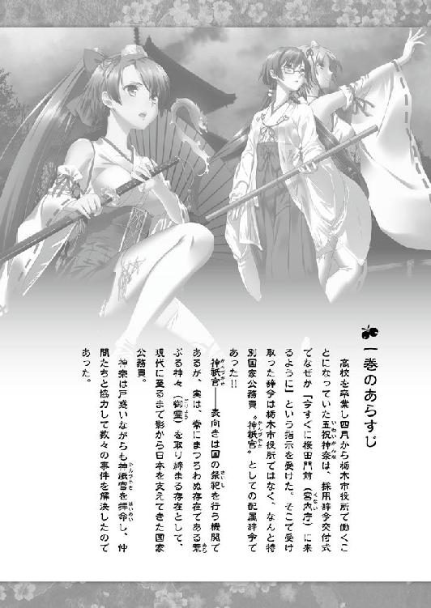
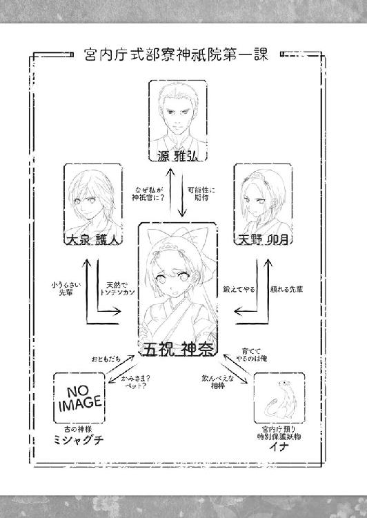
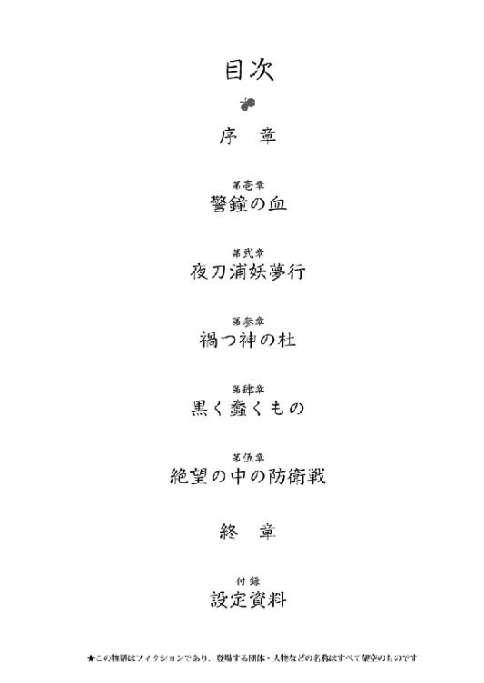
枯枝が空を切る音が、朝霧の中に響いていた──
朝霧が靄のように漂い、空気が朝の青味をおびている時間。
神社の境内で石仮面をかぶった四人の巫女が、円を描くように歩みながら舞を舞っていた。しかし、不思議なことに巫女が手にしている物は神楽鈴でも榊の枝でもなく、御幣でもない。それは何かの木の枯枝だった。
かつては青々とした葉を広げていたのかもしれないが、振り回される枯枝にはもうその面影はなく、死を象徴する木がこの世に存在するなら、まさにその枝というような雰囲気を漂わせていた。
そして石仮面の巫女もどこか不自然な雰囲気を醸し出している。
そう、その仮面は便宜上仮面と言っているが、実際のところは厚さが四センチほどありそうなただの石板であり、それに視界を得るための穴をふたつ穿ち、麻紐で固く頭にくくりつけただけの奇っ怪なモノだった。
石板の下にある鼻の骨は重さに耐えきれなかったのか、あるいはくくりつけられた時に折られたのか、石板は鼻という突起が顔にないかのように、顔の表面にぴったりとくっつけられていた。その石仮面の下で鼻の骨が折れている証拠として、顔と石板の隙間を伝ってきたおびただしい量の血が顎の先からポタポタとしたたり落ち、衣服とそして地面に血をまき散らしていた。
そんな状態でも彼女たちは痛がる素振りも見せず、まるで『古事記』や『日本書紀』に描かれた天岩戸の前で天鈿女命が半裸で踊り続けたように、枯枝を振るい、衣装が乱れてその胸や脚が露出していることも気にもせずに踊り狂っていた。
そして、少し離れた場所からその様子をジッと見つめ続ける、場違いな黒いセーラー服を着た少女の姿があった。
年頃は一〇歳から一二歳くらいだろうか？
小学校中学年から高学年くらいの年頃で、日本人形を思わすような長い黒髪。〝ぬばたま〟という古来からある枕詞が似合いそうな日本のお姫様を思わす綺麗で長い髪を腰くらいまで伸ばしていた。
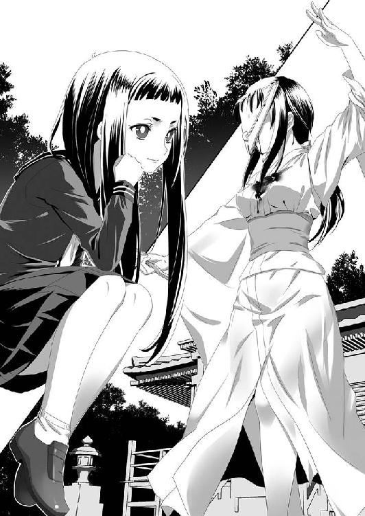
そして彼女はそのあどけなさがまだ残る整った顔立ちにはまったくそぐわない、眉根を寄せたキツイ顔を見せて境内の参道を睨みつけた。
「新皇の襲撃の際にはここだと目星をつけておったが、存外であったか......。しかし、あれはいずこにあるものやら......」
その外見からは想像もできない古風な話し方をした少女は、尊大な態度で腕組みし、そして重々しく首を傾げた。
「はて......」
早朝であるにもかかわらず、小鳥たちはこれから起きる変事を察知したのか鳴き声ひとつ上げずに木陰に寄り添って身を隠していた。
朝霧と靄が支配する世界は音も吸い取ってしまうのか、物音と呼べるものは巫女たちが振るう枯枝が風を切る音。
いや......もうひとつ、地の底から微かな物音が波紋のように空気を振るわせて伝わってきた。
「この音は......」
微かに響く音は......何かを叩いているような音？
てけり・り......てけり・り......
いや、物を叩いても出せる音ではない。
「そうか......ここか......やはり、大和朝臣どもはここに隠し続けておったか！」
少女が笑みをもらした瞬間、地面から黒褐色のなにかが吹き出し、一瞬にして四人の巫女を捕らえた。それはヘドロを思わせる粘性のナニか。巫女の足下からソレは吹き出すや、一気に包み込みその中に取り込んでしまった。そしてグニュグニュと咀嚼するように蠢き続けた。
「あはははははははっ！ 見つけたぞ！ 新皇め、存外、伝説ほどに力なき男であったか......。新皇の神威が足らずに引き出すことが叶わぬだけの話よの」
少女は四人の巫女がその汚泥というべきヘドロの固まりに飲まれ、喰われてしまったにもかかわらず、まるで愛玩動物でも愛でるような目つきでソレを見つめていた。
「さあ、出てくるがよい。〝黒く蠢くもの〟よ」
少女の呼びかけに応えるかのように、四人の巫女を飲み込んだ四つのヘドロは目と思しき感覚器官をカタツムリのように伸ばして彼女を見つめ、そしてその言葉に応じるように動き始めたが、一定以上移動できないのか、ズルズルと引き戻されるように飛び出した場所に戻っていった。
「どうした、出でよ！」
〝黒く蠢くもの〟と呼ばれたモノは再び這いずり動き出したが、やはり一定の所まで身体を伸ばすと引きずり戻されていった。
「なにかが邪魔をして動けぬのか。賢しき真似を......。しかし、こやつめを動かすためになにかをするとなれば、式部寮の検非違使どもが騒ぎ出すか......」
少女が考えている間にも、ヘドロはズルズルと地面に引きずり込まれていき、境内の地面は何事もなかったかのように元の姿に戻ってしまった。
あの石仮面の巫女の骨はおろか、衣装もその石仮面ひとつ残されていなかった。
「見つけたようだな......」
若い男の声に少女は振り返りもせず、薄く微笑みながら頷いた。
「見つけましてございます」
少女が顔を向けると、境内の入口の所に黒い衣服をまとった男性が立っていた。
服装から察すると一〇代から二〇代の若者に思えるのだが、その声音は妙に重々しい雰囲気を漂わせていた。
「妾の手助けをしてくださるおつもりですか？ 黒いお方......」
「ふっ......埒もないことを。そなたの仕事に手伝いは必要あるまいて。我はただ偶然通りがかったにすぎぬ......」
「ずいぶんと都合のよき偶然ですこと......」
「して......手に入れられるのか？」
「無論。その発言こそ、埒もない」
少女も少女らしからぬ艶然とした笑みを浮かべた。
「では、期待していよう。我は、他に用があるので失礼いたそう。すべてを混沌で満たすために......」
朝霧の中に姿を消していったその男の草を踏みしめる足音が消えるまで見送った後、少女は再び神社の境内に目を移した。
そこはもう穴もなにも穿たれていない、ごく普通の境内に見えた。
しかし、ちょっと観察すれば無人の神社であるにもかかわらず、落ち葉も雑草も生えていない異様なほどに綺麗な境内となっていることに気づくだろう。
「ふむ。検非違使どもを相手にするのはよいが、皆でこられては邪魔よの。面倒ではあるが、夜刀浦の庄の者どもに今一度、働いてもらおうよなぁ」
妖艶な笑みとともに少女はそうつぶやきを残して、朝霧の中に姿を消していった。
後にはただ、地面から響く謎の音が残されていた......。
てけり・り......てけり・り......
壱
茨城県月光石神社──
筑波山を北北東に見る場所に、月光石神社という小さな神社がある。
そこの御神体である磐座月光石と呼ばれる石から、突然血が流れ出したという怪奇現象の報告を受け、神奈たちは調査に乗り出していた。
「なんだか、鬱蒼とした森ですね」
神社の近くでクルマから降りた神奈は、周囲を見回して肩を竦めながらそう口にした。
ひとつの山自体がこの月光石神社の境内なのだが、神域なのに禍々しい、そんな清濁混ざり合った危うい雰囲気すら感じさせられた。
「そうだな......。磐座があるにしては暗い森だ」
返事をしながら源も辺りを見回した。
基本的に磐座とは巨石に対する古い信仰があった時代の御神体であり、神が宿る磐、山などがその対象となっていた。神殿が建立されるようになるに従って信仰の中心からズレ、境内の片隅に御神体などとされてひっそりと佇むようになってきている。しかし、その地域の人々が祀ってきた場所なので、そこから人間が感じ取れるものは静謐とか荘厳といったものや、純粋に明るい力だった。
近年のパワースポット・ブームもあって最近は磐座が見直されつつあるが、そこから感じる力が邪悪だったり恐れだったりでは、人も集まるはずがない。
しかし、ここから感じるものはなにか？
確かに、山からは人を見守る磐座特有の慈愛や光りといったものを感じるのだが、なにかそれを覆い隠そうとするベールのようなものを神奈たちは感じていた。
一課の全員がここの調査に乗り出して来ていたが、誰もがこの森に感じるものは、日本の森にはあまり感じられない──そう、薄気味悪さだった。
鎮守の杜など日本人が森林に抱く感情はおおむね明るく、狭い土地で森と共存してきた民族らしい森との共生感覚がそこにはあると言われている。だが、西洋人の中には逆の感覚があり、森は妖魔の住む世界と断ずる地域もある。
この月光石神社を囲む森が人に抱かせるものは、後者の西洋的な妖魔が住む禍々しい世界という感覚に近かった。
「神社......なんですよね？」
禍々しさを感じるために神奈は卯月に質問していた。
「そうね。御祭神は磐長媛命様のはずだけど......」
「磐長媛命様って、確か顔が醜いからって追い返えされちゃった人ですよね？」
神奈の言葉に卯月は目を丸くして笑った。
「へぇ......。神奈にしては勉強してきてんじゃん」
「えへへへ。いつまでも卯月さんにおんぶに抱っこじゃないですよ？」
神奈はそう言って笑ったが、参道の奥神殿を認めると顔を引き締めた。
一課の全員（イナを含む）で参拝し、その後、問題の出血している御神体に向かう。
それはお社からかなり離れた場所にある、大きく苔むした岩だった。
「これが、問題の磐座か......」
その巨石を見るなり源は眉をひそめた。
今回の磐座と思われる岩は、高さ三メートルで横幅と奥行きは二メートル前後の縦長の巨石であり、その形は女性の下半身に見立てることができた。その性器にあたる部分には亀裂が走っており、ミシャグチとは別の意味の女性器信仰の御神体となっていたであろうことが容易に想像できる。
しかし、磐長媛命は性器信仰の対象神ではない。
そもそも磐長媛は木花咲耶媛の姉神であり、絶世の美女と讃えられる木花咲耶媛とは対照的な醜い顔をしていた。妹とともに瓊瓊杵尊に嫁ぐものの、その醜さ故に追い返されたと記紀（古事記と日本書紀）は伝えている。永遠の命の象徴である磐長媛を妻としなかったことから、天孫は永遠の命を持てなかったとされるくだりだ。
「妊娠できない女性を石女と呼んだのも、磐長媛に例えたものだとする学者もいるな」
「そうですね。俺もその話を聞いたことがあります。だから、この石と磐長媛が関係あるとは到底思えませんね」
「完全にないと言うわけではないだろうが、この磐座は門客神と見るべきだろうな」
そんな源と護人の会話を聞いていた神奈は、その巨石から放たれる力に、ミシャグチの時と同じ優しい力を感じていた。
厳しくも優しい人を慈しむ柔らかな自然の持つ力を──
「なにか感じるか？」
源の質問に、もう一度真剣に磐座を見つめながら神奈は答えた。
「え？ あ、はい。優しい力を感じます。敵意みたいなものは......感じません」
「そうか......。磐長媛はニニギノミコトの寵愛を受けた木花咲耶媛を呪ったという説がある女神だからな......」
「妹を呪ったんですか？」
「お前、ちゃんと古事記と日本書紀を読めよ」
「よ、読みはじめましたよぅ......。昨日から......」
護人の突っ込みに口を尖らせてそっぽを向いた神奈をクスリと笑いながら、源は説明を続けた。
「磐長媛は岩というものが象徴する永遠を司る女神だ。故に呪えばそれは永劫続く呪いとなる」
「ちょ......ちょっとそれは凄すぎですよ」
「そうだな。磐長媛は執念深い女の嫉妬の象徴とも言えるな。ただ、なぜこの神社の御祭神が磐長媛なのか分からない」
この月光石神社のご利益は、女性の縁結び、婦人病、妊娠、女性の悩みとなっていた。
女性の縁結びという部分では、どう考えても記紀で公に振られて実家に突き返されている磐長媛は相応しくない。
「そうですね。婦人病の神様なら淡島神がいますからね」
「カッコつけてダベってないで、さっさと仕事をしろ！」
卯月に蹴飛ばされて護人はしぶしぶと巨石の周りを回り、小さな声で祝詞を唱えはじめた。
「あれ......」
「どうした？」
「護人さんのそばに、何か光るものが......」
源はとっさに身構えた神奈を手で制した。
「あれは護人の御先神だ」
「あれが......ミサキガミ......」
神奈は教本でその存在を知っていたが、それを目にするのは初めてだった。
御先神──単純にミサキとも言うが、人間に使役される霊的な存在であり、陰陽師たちが使う式神と似たような存在だった。
一人前の神祇官ならコレを駆使できるはずなのだが、教本どおりにやっても神奈の場合は出てくる素振りすら見せなかった。卯月からは、もう少し基礎的な修行をやってから試すように言われたが、連日の出動と調査で修行どころではなくなっており、未だに言葉でその存在を知っているだけだった。
「五祝ほどの神威があれば、すぐに使えるようになる」
「そうなんでしょうか......」
神祇官なら誰にでも出せる基礎的な存在と教本には書かれていただけに、卯月にそう慰められても納得はできなかった。
神奈がそんな不満げな顔をしている隣で、護人と卯月がそれぞれのミサキを使って巨石の周りの調査を入念に行っていた。
駆け回るミサキを通して、巨石本体は神格化されて数千年は経っているものらしいことが感じられた。数千、数万という人々の願いのカケラをその磐座から感じ取ることができる。
「基本は安産祈願などだと思いますが、災害などの守護祈願もあるように感じます」
「そうですね。護人の言うとおり、災厄時の守護祈願を感じます。とても、人に害意を持つような磐座には感じません」
「そうか......」
源の推測と二人の報告は一致していた。
そう考えると、この女陰に見立てられた穴からわき水のように滴り続けている血液はいったいなにを意味するものなのか？
首をひねった源の目の前でも、今も止めどなく血が流れ出ていた。
流れ出ている血液は、紛れもなく血であることが鑑識の報告で明らかになっていた。血液型はＯ型であり、人間の血とまったく変わりないもの。
茨城県警はこの磐座の中に人がいるのかとも考えたようだが、この磐座月光石は大きな亀裂ひとつないひと塊の岩であり、小さな亀裂は出血している場所しかない。
さらに出血の量で考えるなら、この磐座の中に少なくとも大人が七、八人はいなければおかしい計算になる。
「やはり......淡島神か......」
現在の日本神話において、淡島神は蛭子の次に産まれた不具の子であり、蛭子同様に流された神とされている。しかし、蛭子と異なる部分は、彼女は流れ着いた先で鬼道（日本古代呪術）を教え、その功績から住吉神に見初められて一度は妻神となる。だが、その後に婦人病を患い、それを理由に住吉神に離縁され、また流されてしまうという不遇の女神として伝えられている。
現在は淡路島に祀られているために淡路島の神と勘違いされるが、淡路島と淡島神につながりはない。淡路島はアワヂノホノサワケノシマという神であり、淡島神はそれよりも先に生まれ、捨てられた子どもに数えられない神である。
そして、なぜか東海から東日本を中心にひっそりと祀られている神でもあった。
「課長！ 出血が止まります！」
「なんだと？」
先ほどまでこんこんとわき出すように流れ出していた血液が勢いを無くし、わずか数分の間に流れは止まってしまった。
「なぜ、今になって出血が止まる？」
この出血現象が報告されてからすでに二四時間は経過していた。
その間、止まることなく流れ続けていたのに、なぜ今になって出血が止まるのか？
源は必死に考えた。
思い当たる理由はふたつ。
ひとつは至極まっとうに、この巨石の中にあるであろう巨大な血液タンクが空になったせい。
もうひとつは、血液を流す理由が解決されたため。
当然、源の思考は後者に絞られた。
──この磐座はなぜ血を流す......？
先ほどの護人と卯月の報告にあった、災害の守護祈願という言葉が源の脳裏をよぎった。
「つまり......我々への警鐘......か？」
この磐座は警告するべき相手として神祇官を選んだ。
神祇官に警告すればこの地の安全を保てると考えたのだろう。それ故に、ここに関東の神祇官たちが集まることでその役目を終えたと考え、出血を止めたのではないか？
源が振り返ると、すでに護人と卯月が協力しあって地面に残された血の痕跡を追い、その方角を確認していた。
「血は一本の流れとなって、ほぼ北西の方角に向かっています」
「天野はここから北西の方角になにか不審な現象が発生していないか、各地域の警察署に協力を要請しろ」
「はい！」
源の指示に卯月は敬礼し、クルマに積んだ通信機を使うために駐車場に向かって駆け出した。
「護人はこの磐座に関する謂われを漏らさず集めろ」
「了解しました」
同じように敬礼して駆けだして行く護人の背中を見送りながら神奈はあわてた。
「か、課長！ あたしは？ あたしはなにをすればいいでしょう？」
「五祝は、とにかくなんでもいい。おまえが感じるものを集めろ。イナは五祝の護衛を頼む」
「了解！ おい、行くぞ」
イナの敬礼を受けて源は神奈に背を向け、自分の仕事をするために行ってしまったが、残された神奈の表情にはドコか不満げなものが見え隠れしていた。
「なんだ、どうかしたのか？」
「うぅん。いいんだけど、なんだかあたしの仕事って、みんなの役立つことしてるのかなぁって......」
確かに、神奈が受けた指示は仕事というには漠然としたものであり、仕事らしい仕事とは言えるものではないように見えた。
「おまえの感覚を信じての発言だと、オレは思うぞ」
「そうかな......」
「石神井公園での活躍をまた期待してんだよ」
イナにそう慰められても、神奈はなんだか納得できなかった。
「気にしすぎだ。とにかく、おまえの直感をフルに働かせろ。今はおまえにしかできないことをやらされてると思えよ」
「うん！ ありがと。がんばるよ！ あれ？」
「なんだ？ どした？ いきなりなんだ？」
巨石の周りを歩き出そうとして立ち止まった神奈に、今度はイナが不服げな顔を向けた。
「いや、あそこ......あの木陰に人影があったような......」
「なんだと？」
神奈の肩の上でイナは身構えつつ、彼女が指さす場所をジッと見つめた。
そこは原生林という言葉がふさわしいほどに、手入れがされていない森の一角。藪が生い茂り、とても人が入れそうな場所とは思えない。
「あんな場所に人だと？ あり得なくねえか？」
「あんな場所に人だから、おかしいんでしょ！」
「そういや、そうか......。いけっ、神奈！」
神奈は駆けだした。
そう、人が入れそうにない場所に人がいたなら、それは人ではない可能性があるということだ。いきなり御霊と遭遇戦闘になる可能性があった。
捜査中だから簡略衣しか着ていないが、それでも巫撃装衣の脚力は保証される。
跳び上がり、木の幹を足場にしながら、神奈は八握剣を抜刀して人影と思われるモノがいた場所に向かって走った。
しかし、そこに人影はなかった。
「いない......。でも、さっきの場所はここだったのに......」
木陰からのぞき見ると、磐座とその周りの様子が手に取るように確認できた。
ここに隠れ潜めば、さっきまでそこにいた神奈たちをじっくりと観察することは可能なポジションだった。
「いや......いた、な......」
「なんで分かるの？」
「足跡が......残ってる」
「え......？」
草むらの土が露出している場所に、まだついたばかりだと思われる足跡が残されていた。
部分的にしか分からないが、その足跡は裏面にゴムが張っていない革靴のものであり、大きさは二六から二七センチくらいと想定できた。
しかし、足跡は発見したものの周囲に二、三あるだけで、それ以外は見つからない。
「どうなってんの......？」
「痕跡から考えると、最初に発見した足跡は横飛びした時についた足跡だな......」
確かに足跡は斜めに深くついており、跳んだ形跡も想像できた。
しかし、ドコへ？
距離的に人間が着地できる範囲に着地したと思われる痕跡はない。
「どうなってんの......？」
「御霊......なのか？ とにかくケータイで課長に報告しろ！」
「うんっ！」
神奈はあわててスマホを取り出して源に連絡を取った。
数分後、一課のスタッフ全員で周囲の探索をしたが、発見した足跡以外の痕跡を発見することはできなかった......。
一体なにが神奈たちを見張っていたのか？
そして、この磐座は神奈たちになにを伝えようとしていたのか？
謎のみを残した調査となった......。
弐
北の丸公園──
皇居に隣接する自然豊かな公園であり、科学技術館や日本武道館が近くにある都民の憩いの場所のひとつ。そんな公園の一角に広い芝生に面した場所があり、そこのベンチに独り、人待ち顔の源がやや苛立ち気味に座っていた。
場所的には非常に見通しがよく、盗み聞きをしていようものならたちどころに発見できる所だった。
月光石神社の件から約一週間ほどの時間が経っていたが、その後具体的な情報もなく内心で源もいらだちを募らせており、一人の時はそれが表情に出るようにもなっていた。
「お待たせ、お昼は食べた？」
親しげに源に声をかけてきたのは、二〇代後半くらいの颯爽とした、いかにもキャリアウーマンという印象を与えるスーツ姿の女性だった。
「この時間に呼び出しておいて、その質問はないだろ」
源は腕時計の文字盤を彼女に見せるように突き出した。
時計の針は一二時一五分を指しており、普通の公務員なら昼食を考えている時間だった。
「そうだと思って買ってきた。ローストビーフサンドと砂糖なしミルクひとつのコーヒーで良かったんだよね？」
「ああ......助かる」
源は差し出されたコーヒーの紙コップとサンドイッチを受け取り、現れた女性に左隣に座るように手で促したが、彼女は首を振って右隣に腰掛けた。
「コーヒーの好みは変わってないのね」
「早々変わるものじゃないだろう」
源はミドルサイズの紙コップに口をつけた。
そんな源を見て小さく笑った彼女は大きく伸びをした。
「んー......。いいお天気。仕事してるのが嫌になっちゃうね」
「仕事で俺を呼び出しておいて何を言ってるんだか......。前振りはいいから要件を話してくれないか？ 火長衛視の捜査官としての用事なんだろう？」
源の声は神奈たちに対する時よりもくだけてはいるものの、どこか警戒心が見え隠れするものだった。
火長衛視とは神祇官の中でも調査を主に担当するスパイ的な部署であり、その職務は神祇官の内調も兼ねた微妙に公安警察のようなものも含まれる。それ故に源が警戒するのも仕方ないことだった。
「卯月ちゃんは元気にやってる？」
「それは火長衛視としての発言か？ それとも、元神祇官の羽鳥彩愛としての発言か？」
彩愛は傷ついたような顔をして源を睨んだ。
「後者に決まってんでしょう！ 相変わらず性格悪いわね！」
「お前が抜けた穴を埋めるのに二年以上かかったんだ。イヤミのひとつくらいは言いたくなるだろ」
羽鳥彩愛は三年前まで神祇官を務めていた女性であり、卯月と護人を指導した先任者でもあった。年齢は三二歳で独身。源よりも三歳年下であり、卯月が入ってくるまでは源とコンビを組んでいた関係だった。
彩愛は三年前の事件をきっかけに神祇官を引退し、火長衛視に転職した。
「はいはい。悪人は私ってわけね。悪ぅございました。これでいい？」
「知るか。で、なぜ社務所に直接こないでこんな場所に呼び出した？ 俺が頼んだ情報は、部下に聞かせるのもヤバいものだったのか？」
源の声にはイヤミというよりも用心深さが強く表れていた。
「新人の五祝神奈さんって、どんな子？」
さっきの前振りから卯月のことを聞かれるものだとばかり思っていた源は、いきなり神奈の話題を振られて少なからず驚いた。
「なんでそんなことを......？」
「勅使河原係長が調べているから」
「なんだと......」
源の表情が強張った。
「あの〝首吊り判事〟が、なんだって五祝を調査している？」
彩愛はさぁと言うように肩を竦めて見せた。
「それが分かっていたら苦労はしないんだけどね......」
「苦労はしないって......お前も調べているわけじゃないのか？」
「私が？ 冗談よしてよ！ なんで私が勅使河原さんと一緒に調べなきゃなんないのよ」
そう睨みつけながら彩愛は言ってきたが、源としては他部署の人間となった彼女の言葉を鵜呑みにすることはできなかった。
なによりも、彼女の上司は〝首吊り判事〟とあだ名をつけられるような冷酷な男だった。
火長衛視捜査一係の勅使河原は、源の三つ年上の先輩であり東大法学部を卒業したエリート警察官になるはずの男だった。しかし、警察試験を受けた際に神籬体質であることが発覚し、強制的に神祇官の道を選ばされてしまった。しかし、体質はあったもののそちらの才能は低く、すぐに前線で戦う神祇官から捜査中心の火長衛視へと転属となった。
以後、些細な問題を取り上げては神祇官自体を監査・調査する。中には国家反逆罪まで適用された神祇官が出たことから、〝首吊り判事〟というあだ名をつけられた。
「後輩たちの神祇官を守りたいという気持ちは、私にはあると信じてほしいんだけどな」
源としては信用したい気持ちが多分にあるが、部下の命がかかる可能性まで出てきた以上、おいそれとその言葉に頷くことはできない。
「とりあえず......その言葉を信じよう」
「ウソつき」
「なんだと？」
「雅弘はウソつくと、左のまぶたがピクピク動くクセがあるの。知ってた？」
久々に自分の名前を呼ばれた源は、思わず自分の左目を手で覆った。
もっとも、義眼を入れている源の視界がそれで減ることはない。
彼が中々戦闘の直接指揮に出ない理由。そして彩愛に引退を決意させた原因のひとつとして、この源の左視覚の損失があった。もちろん、これは事件を調査中の事故であり、直接的に彼女がなにかをしたわけではない。
だが、源を護りきれなかったという思いが、彩愛に引退を決意させた。
「いい加減、昔のクセを漁るな。とりあえず、お前の言葉を信じたという俺を信じてくれ。ウソでもいいから」
「まぁいいわ。じゃあ、質問。新人の五祝神奈さんって、どんな子？」
さっきの質問に戻るのかと源は首を振りつつ考えた。
「どんな子と言っても......一言で言うならトンチンカンだな」
「なにそれ」
「具体的な理由は分からんが、なぜか物事をいい方向に持って行けるおかしな力がある。だが、普段、言ってることの半分は理解できん」
「それって、あんたが年取ったってことじゃないの？」
「九段の鳥居を見て明治神宮と言う女の子は、トンチンカンじゃないか？」
さすがにその言葉には彩愛も言葉を詰まらせた。
「聞いた話じゃ入庁する時、桜田門も分からなかったそうだ。他にも、色々と逸話があるが......」
「そりゃ......まぁ......。でも、地方出身なんでしょ？ 今ドキじゃあり得るって」
「まぁ、そんな子だ。しかし神籬体質という面でみると、戦後最大の才能だな」
「戦後......最大？」
「神奈。神奈備を表す名前だが、その名に相応しく神性に愛されるらしい......。神様の加護持ちというやつだ」
「そうなんだ......」
そう頷いた彩愛はどこか思案顔になった。
なぜ、勅使河原がそんな期待の戦力であり、入庁したての神祇官を調査しているのかまったく分からないからだ。
「五祝は入庁したばかりで、あいつに狙われるような理由はないぞ」
「だといいんだけど......」
そう言葉を濁し意味ありげな態度を彩愛は取った。
勅使河原が意味のないことをするはずがない。その行動には必ず意味があるはずだった。
「聞きたいことはそれだけか？」
「ん。まぁ......。とりあえず、雅弘の問題について答えてあげるわ」
「じゃあ、夜刀浦に関する情報をくれ」
単刀直入な言葉に、彩愛は脇に置いたトートバッグの中から一通のハガキを取りだした。
変わっている部分は、そのハガキがビニール袋に包まれていること。
つまり、それはなにかの証拠品ということになる。
「これは？」
「差し上げるわ」
ビニールに包まれたハガキは黄ばんでおり、かなりの年代物だということが理解できる。
しかし、これといって変わった場所は見受けられない。
「これはいったいなんだ？」
「ここに、夜刀浦について分かっていることのすべてが含まれているの」
「ハガキに？」
源がハガキの表面を見ると、千葉県に住む人物に対して書かれたハガキだと分かる。そして差出人は──
千葉県海底郡夜刀浦市夜刀浦町飯綱
差出人住所には、そう刻まれていた。
「これはいったい!?」
「ちなみにそんな住所はドコにもないわ。それから、その宛先の住人ももう亡くなっていたわ。問題は、その消印よ」
消印には〝ＹＡＴＯＵＲＡ〟というローマ字とともに、〝夜刀浦〟の文字が書かれていた。日付は昭和四五年二月一〇日とある。
「そんな郵便局は、この世のドコにも存在しない。当然、その住所もね」
源は無言のまま、ハガキを裏返してみた。
文面はごく普通の挨拶文であり、植村直己のエベレスト登頂は成功したのか？ という質問が書かれていた。
「これは......四五年に出されたハガキなのか？ 四〇年以上もほったらかしになっていたのか？」
「違うわ......」
喉の渇きを覚えた彩愛は冷めかけた自分のカフェオレに口をつけた。
「そのハガキは、去年の一二月に千葉県勝浦郵便局の本局で見つかったの」
「見つかった？」
夜刀浦に関しては明治維新の時代から調べられていたが、一向に手がかりはつかめていないのが現実だった。夜刀浦人たちは向こうから一方的にこちらに来るだけで、こちらから夜刀浦に侵入する手立てがどこにもないためだ。
そこで、技術の進歩とともに国を挙げて、様々な場所に夜刀浦を調査する仕掛けを作りはじめた。
そのひとつが郵便局の差出人チェックだった。
宛先住所、消印、差出人住所。
そのいずれかに夜刀浦という言葉が見つかれば、自動的にそれを検出するという探査システムが平成一〇年頃から各地の郵便局に導入されていた。
その設置から一〇年以上もたって、ようやくひとつの手がかりが探査機に引っかかった。
それがこのハガキだった。
「つまり......なにか？ 昭和四五年に発送されたハガキが、平成の世に届いたと？」
「そうとしか考えられないの。少なくとも、ポストに投函されて夜刀浦の郵便局を昭和四五年に通過して、平成の世の勝浦にたどり着いたの」
「時間のズレはどう説明する？」
「そんなの、説明できるわけないじゃない......。火長衛視でもどう対処したらいいのか分からない代物なのよ」
「ここに調査員は？」
そう質問されることを覚悟していたというように、彩愛はため息をついた。
「送ったけど......帰ってこなかったわ」
「帰ってこない？」
「二度。合計五人の火長衛視の調査員を送り出したの。最初は二人、次は用心して三人。だけど、すぐに音信不通になって行方不明のままよ」
それはつまり、調査に失敗して死んだということ。
火長衛視のスタッフは、戦闘要員ではないために必ずしも神籬体質である必要はない。しかし、スタッフの大半はなんらかの形で神祇官を経験してきたものたちばかりであり、それなりの対御霊の装備も備えていた。
それが二人組、三人組の単位でありながら、帰ってこないという。
合計で五人もの調査員を失うなど、信じがたい状況だった。
「踏み込んではいけない場所......か？」
「分からないわ。でも、私たちはそれを調べないといけない。雅弘もでしょ」
「そうだな......」
火長衛視が失敗した以上、検非違使一課からも誰かを派遣して調べる必要があった。
誰を送り出したらいいのか考えるだけでも頭が痛くなってくる話だ。
「その他の情報はないのか？」
「正直、夜刀浦に関しての情報は真贋定かではないものばかりよ。私たちが知っている頼朝公が打倒平家のために力を借りたというものもあれば、それとはまったく無関係というものもある。千葉氏の断絶にも関わっているという話まで出てくる始末よ」
「すべての共通点は、千葉県か......」
「そう。すべて外房に関わっているの。今回の勝浦郵便局の件だってそうじゃない。すべての謎は千葉県にアリよ。もっとも、こんなことは一世紀以上も前から分かっていたことなんだけどね......」
彩愛の言葉どおり、夜刀浦に関する情報は明治二〇年の調査でそれまでの断片的な情報が整理され、千葉の外房にあることは確定していた。しかし一世紀以上もの間、それ以上の進展は見られない。
「じゃあ、次の調査に関する回答は？」
「次？ ああ、月光石神社の件ね」
バッグの中からクリアファイルに収められた資料を彩愛は取り出し、中身を確認してから源に渡した。
「雅弘たちの推測どおり、その磐座様は〝淡島神〟よ。崇拝時期はだいたい二千年以上前で、前後三百年といったところね」
「そんなに前？ 淡島神というから、江戸期かと思ったが......」
「淡島の渡り巫女ね。違うわ。こちらは正真正銘の淡島神よ」
淡島神の崇拝は、江戸期にかなりの隆盛を見せた。
それは〝淡島渡り巫女〟などと言われる巫女たちが、淡島神の現世利益を教え伝えて日本中を回ったせいとされている。
しかし、蛭子とともに流された淡島神は、菅原道真が天神の位につくまでの間、大和朝廷から忌避された荒ぶる天神の位についていた。祀っても祀っても祟りすぎるが故に、終いには祈ることすらやめられ、天神の位も道真に奪われてしまった祟り神とする説もある。
だからこそ、大和朝廷に反旗を翻していた東国の民たちから慕われ、崇拝されてきた。
「大和朝廷にとっては災厄の神だけど、民衆に鬼道や薬草学を伝え、東日本の民を守護してきた神。それ故に門客神に位を落としてまでも、民衆がその姿を隠して密かに崇拝していたと見る方が自然ね」
「その淡島神の出血はなにを意味する？」
「あの磐座様は、ある種の予言をされるの。災厄が始まる方向に血を流されるということよ」
「なんだと？」
「近年の震災。もうちょっと先では東京で起きた大規模テロ事件。東日本で起きた災厄は、ことごとく当てているわ」
災厄の守護祈願を受け付けていた磐座だけはあった。
「正直、この目で出血を確認するまでは本当だとは思っていなかったけどね。だから、なんらかの形で災厄が起こることは確かなのよ」
月光石神社から北西方向に広がる都市はいくらでもあった。
「そんなむちゃくちゃな広範囲をどうやって調べるっていうんだ？ 同じ県内でも筑西市、結城市があるし、栃木県に入れば小山市と栃木市......」
そこで源の言葉が途切れた。
ようやく分かったかというように彩愛は小さく笑った。
「まさか......栃木か？」
「分からないわ。でもね、あまりにも符号が一致していると思わない？ 栃木市出身の神祇官が入庁した。彼女には類い希なる才能があり、古代の神まで従えているって言うじゃない。そんな時にこの災厄の御神託。そして、我らが係長の調査。これだけ一致していながら、調査しない手はないわね」
「分かった。重点的に栃木市で調査査を行わせる」
「そうしてくれると助かるわ......」
話は終わったと立ち上がりかけた源は、ああ......となにかを思い出したように彩愛に顔を向けた。
「最近のカルトか新々興宗教団体......。関東にしぼってくれていい。その中に磐長媛にまつわる団体はないか？」
「なんでそんなものを？」
「月光石神社の御祭神は磐長媛だ」
「なるほど......」
彩愛はもったいぶった調子でスマホを操作し、火長衛視のサイトにアクセスしはじめた。
月光石神社であのような変事（神事）が起これば、当然、それに関係するカルト教団などが騒ぎ出す。
「雅弘の考えは当たっているかもね......。公安が目をつけているイワヒメ会という新々興宗教団体があるわ」
「イワヒメ会？」
まさに磐長媛のことを語ったようなストレートな名前だった。
「イワヒメ様と呼ばれる巫女が神託を与えて、信者に奇跡を与えるということで異様な盛り上がりを見せているという話よ」
「それだけなら、ドコにでもありそうな宗教のネタだろ。なぜ、公安が動く？」
「その会の御祭神が人間の頭蓋骨であるという噂があるの」
さすがにその答えには源も眉をしかめた。
「立川流か？」
立川流──真言立川流のことであり、鎌倉幕府倒幕に活躍したために室町時代には隆盛を誇ったものの、その後に邪教として弾圧され、現在、その正確な教義は残されていない宗教だった。断片的に残されたものの中に、大頭と呼ばれる本尊があり、それが人骨を用いたものであったと伝えられていた。
「どうかしら？ 今時の宗教はなんでも混ぜてやっちゃうものね......」
「さらに具体的なことが分かったら教えてくれ」
源は昼食のゴミを二人分持ってベンチから立ち上がって歩き出した。
とにかく、夜刀浦と栃木市の調査をしなければならない。
早々にどちらも神祇官を派遣しなければならない状況だが、人手の足りなさをどう補うのかが問題だった。まずは夜刀浦。そして現地情報が入り次第で栃木に派遣という形を考えるしかなさそうだった。
「そうそう。もうひとつ情報があったわね」
「なんだ？ もったい付けるな」
立ち止まって振り返った源に、彩愛はニンマリとした笑みを浮かべた。
「本日付で京都の二課から一課に転属してくる神祇官がいるそうね」
「ったく、どこまで嗅ぎ回っているんだか......」
源はため息をついてまた歩き出した。
少なくとも火長衛視が一課の内偵をしていることは確かそうだった。
本日付けで転属してくる神祇官がいることは、宮内庁長官と神祇官別当、そして検非違使一課の課長である源の三人しか知らないはずの情報だった。
参
宮ノ森神明宮・一課詰所──
「まだですかね？」
「神奈。あんた、さっきも同じこと言ったよ。ちょっとは落ち着きなさいよ」
「でもぉ......気になりません？」
「そりゃ、気になるけど......さ」
神祇官一課の詰所には、そわそわした様子の神奈と卯月、そして護人が待っていた。
本日付で関西管轄で京都に詰所を置く二課から二人の神祇官が転属してくると、先ほど源から電話で通達があったためだ。
「しっかし、課長も当日まで転属者がいることを黙っているなんて、ひどいよな......」
「ソコ。課長の悪口は言わない！」
そんなやりとりをしていると、詰所に入るエレベーターが動いたことを知らせるランプが点った。
「課長たちかな？」
その予想どおり、しばらくすると源に先導された男女二人が顔をだした。
一人はやたらとガタイがいいがボサボサの髪に無精ヒゲを生やした、だらしがない印象のある男。年齢は三〇歳くらいだろうか？ もしかしたらもっと若いのかもしれないが、その無精ヒゲから老けた印象しか神奈は受けなかった。
もう一人はメガネをかけた神経質そうな女の子だった。年齢的には神奈と同い年くらいか若干年上という印象だった。落ち着いた雰囲気から年上かもと神奈は感じたが、その体格は非常に発育が悪く、落ち着いているだけでもしかしたら自分よりもかなり年下かもという不安を神奈は感じた。
「紹介しよう。京都の二課から転属してきた近衛和泉と、弓削浩志だ」
「近衛どす」
「弓削っす。名字で呼んでくれても構わないし、ヒロさんと呼んでくれてもいいよ」
ツンとすました態度の和泉とは対照的に、弓削はやたらと人なつっこい笑みを浮かべた男だった。
「一課の中では、俺に次いでの年齢が弓削になるな」
「そうっすね。でも、オレは二六っすよ？」
「えええええええええっ!?」
元々一課にいたメンツからそんな声があがった。
そんな反応に慣れているのか、弓削はニヤニヤ笑いながらおどけてみせた。
「どうも、苦労してきたせいなのか、老けて見られるんすよね」
「そのヒゲが悪いんどすぇ。二課を出る前にあれだけ剃れと言うたのに、ほんまにあかん人やわぁ」
「まぁ、別に老けてみられても問題ないしな。ま、仲良くしてくれや」
「とりあえず、よろしくね。あたしは天野卯月。遠いところからようこそ」
卯月の差し出した手に弓削はにこやかに握手したが、和泉はジロジロと卯月のことを上から下まで見た。
「なんで髪を後ろで結んでおらんのどすか？ いえ、なんでショートカットなん？」
和泉の反応は明らかに非友好的だった。
「なんでって......戦っている時に邪魔だしねぇ......」
「でも、後ろの方はちゃんと結ばれとるではないどすか？」
「うっせぇ。あたしは、長い髪が苦手なんだよ」
「これが東国一の弓取りというのそやし、世も末だわ」
京言葉でなにを言われたのか分からず、卯月は思わず弓削を見た。
「つまり、天野さんが東国一の弓取りって言うのが信じられないそうだ」
「あああっ!? てめ、顔合わせ早々にケンカ売る気かよ！」
「すぐにケンカ腰になるのも噂どおりの坂東娘どすなぁ......」
にらみ合いをはじめた卯月と和泉に源はハァ......と大きくため息をついた。
「お前らいい加減にしとけ。仕事の話にはいるぞ」
仕事と聞いてはいがみ合ってもいられない。卯月と和泉は間に神奈を挟んで並んだ。
間に挟まれた神奈としてはいい迷惑であり、目線で護人に助けを求めたが、返ってきた返事は『アキラメロ』というジェスチャーだった。
「まずはこのハガキを見てくれ」
そう言って、源は彩愛から渡されたビニール袋に入ったハガキを見せた。
「なんかむちゃ古そうなハガキどすなぁ......」
「そう。消印は昭和四五年のハガキだ。しかし、このハガキが郵便局にやってきたのは、去年の暮れ頃らしい」
源はそう前置きして、火長衛視の彩愛から聞いた話を全員に説明した。
そして──
「送り主である青木浩三の脇に書き込まれた住所には『千葉県海底郡夜刀浦市夜刀浦町飯綱』とあり、消印は昭和四五年二月一〇日。そして消印の地名には、〝夜刀浦〟と〝ＹＡＴＯＵＲＡ〟の文字が見える。ちなみに、日本郵政グループに問い合わせてみたが、そんな郵便局本局は存在しない。当然、国土地理院に聞いても、そんな地名は存在しないという回答だった」
「つまり、夜刀浦は〝あるはずがない街──ブリガドーン〟ってことっすかね」
「あの......ブリガドーンってなんですか？」
聞いたことのない言葉に神奈は弓削に訊ねた。
「ブリガドーンっていうのは、次元の狭間を彷徨っていると噂される街のことだな。妖夢街とかということもある。千年に一度とか数百年に一度とかって単位で、この世とつながり、またどこかに彷徨い出てしまう」
「映画とかにもなっとりましたどすなぁ」
「そ、そうなんですか......」
知らなかったことに恐縮した神奈の頭を弓削は軽く撫でた。
「なに、知らなかったら教わればいい。知らないことは聞けばいいのさ」
「はいっ」
「夜刀浦に関しては、過去の調査データから夜刀浦は勝浦付近であることが分かっている」
ブリガドーンに関する説明が終わったのを見計らい、再び源は夜刀浦の説明をはじめた。
そもそも、夜刀浦は源頼朝の鎌倉幕府設立に大きな力を貸した見返りとして、その地を拝領したという説が一番強いのではないかと神祇官はとらえているが、それ以外にも様々な伝説がある場所だった。
たとえば『常陸国風土記』には、人頭蛇身の夜刀神と呼ばれる国津神がこの土地の人々の願いを聞き入れ、一夜にして石積みの堤を作り上げて水害のない土地を開いたことから夜刀浦と呼ぶ土地があることが記されている。
三代・実朝の時期、この外房を治めていた千葉氏が夜刀浦を接収しようとしたために、夜刀浦の庄を治めていた者が〝人止めの呪い〟を施し、以後はこの世から隔絶されたと伝えられている。もっとも、この〝人止めの呪い〟は法力僧や千葉一族のみには効かないなどという噂もあり、どこまで信じたらいいのか分からないのが現実だった。
なによりも、もう千葉氏の嫡流が断絶されてその知識は伝えられておらず、夜刀浦を知るすべは失われたに等しい。
問題は、夜刀浦がその後現世と関わりを持たなければなにも起きないはずなのだが、なんらかの形で世間を騒がせ続けることだった。
明治維新以後も日露戦争後の国内争乱など、そうした影にいつも蠢いているのが夜刀浦人であり、『日本国と国民の将来のためにも居場所を探し出して夜刀浦人を根絶せよ』というのが明治天皇が神祇官たちに遺した言葉だった。
しかし、なんの手がかりもないままに時間だけが進み、現在に至っている。
「この郵便物が迷い込んだ郵便局が勝浦ということは、やっぱり勝浦市を中心に調べるべきでしょうか？」
「それしかないだろうな」
護人に源は苦い顔をして返事をした。
一九八九年頃、勝浦市付近に調査に出かけた神祇官が、黒い煙のような御霊に襲われるという事件が起こっていたのを思い出したためだ。
勝浦になにかがあるのは分かっているのだが、同時に神祇官の戦闘力と調査能力を超えた事件がその都度起こるために敬遠されてきた土地だった。先だって、ミシャグチが甦った事件も発端の事件──卯月が夜刀浦人と激闘したのも勝浦の山中だった。
「見過ごすわけにはいかんな......」
夜刀浦と勝浦にはなんらかの関わりがある。
今回のような重要な証拠が出てきた以上、危険だからと無視することはできなかった。
しかし、誰を送るべきか？
そのことが源を悩ませる。
本来なら勝浦周辺の地域に何度となく足を運んでいる卯月と護人を組ませて送り込みたいところだが、そうなると栃木の調査に即日神祇官派遣となった時、出動するのが新人二人と神奈という最も頼りなさそうなチームになりかねない。
「護人。近衛と組んで、勝浦市周辺の調査に臨んでくれ。ただし、神祇官だとバレるような調査の仕方はするなよ」
「分かりました。あくまでも一般人の旅行者的に勝浦に潜り込み、夜刀浦に関する調査をしてくればいいんですね」
「そうだ。よろしく頼む」
「課長！ あたしじゃないんですか？」
卯月が不満そうな顔を見せた。
何度となく勝浦に送り込まれているのは、こういう時のためだったんじゃないのか？ と質問している顔だった。
「天野はここに待機してくれ。お前がいないと、五祝の指導者がいないだろ」
「分かりました」
神奈の名前を出されては、さすがに卯月もそれ以上は食い下がれない。
素質は文句なしにあるようなのだが、神奈はまだまだ新人な上に、訓練不足が災いしていた。
「じゃあ、これを機会に特訓かな」
「えええええっ!!」
「そうだな。神奈はこのヒマな時期に御先神召喚の特訓をしておかないとな」
「あら。五祝はん、御先神を出すことがでけへんの？」
「え？ ああ、えと......はい......できません」
しょぼんとした神奈の頭を、弓削がまたガシガシと撫でた。
「じゃあ、オレも嬢ちゃんの訓練に協力すっかね」
「嬢ちゃんって......誰ですか？ あたし？」
「一番、世間知らずのお嬢ちゃんって呼ばれてもおかしくなさそうなのは神奈だね」
「そういうことで、よろしく頼むわ」
一課の詰所に笑いが響いた。
少なくとも、この時点ではまだ、笑うことができる余裕が彼らには残されていた......。
壱
千葉県勝浦市──
外房──つまり、太平洋という外海に面するこの街は、夏は海水浴客で賑わうリゾート都市だった。もっともリゾートという趣も遠い昔のことで、バブルやその他諸々がはじけた現在では、緩慢に人口が減りつつある外房のドコにでもある都市となりつつある。
そんな街にわざわざ護人たちが不便を承知で電車で乗り付けたのは、ひとえに目立たないためだった。
腕を絡めて駅に降り立った護人と和泉は、一見すると仲の良さそうな大学生のカップルに見えた。あるいは、大学生と高校生のカップルに......。
目立たぬように簡略衣を衣服の下に身につけ、武器は隠し持てるもののみ。それ以外は護符のみという徹底した軽装備だった。
「こない軽装で敵地に近づくなんて、落ち着きませんなぁ」
やや不安そうな顔を見せた和泉に、護人は意外そうな顔をした。
詰所で卯月とやりあった和泉の冷たく辛辣な印象が欠けていたからだ。
「どないしはりました？」
「いや、印象違うなって思っただけ」
「いややわぁ。勘弁しとくれやす。相性悪そうな人以外に、そないツンケンするわけあらしませんわ」
「なるほど......」
どうやら和泉は、初対面の印象で卯月を苦手なタイプと判断したらしい。
──別にあいつは口が悪いだけで、ちゃんと責任感あるいいヤツなんだけど......。
そうは思っても、第三者が説明したところでどうなるわけでもない。その当事者同士が分かり合う以外にはどうにもならないことを護人は知っていたから、卯月の弁護はしないでおいた。
なによりも、和泉と護人の二人しかいない関係で、下手に卯月の弁護をしてヘソを曲げられても困るわけだし。
「それにしても、この時期はなんもあらしませんなぁ」
勝浦市に来てみたはいいが、はっきり言って手がかりは何ひとつ無いに等しい。
勝浦の郵便局で見つかったあの手紙の住所も、この現実の世界にはない。
「さて、どうするかな......」
タブレットＰＣにこの近辺の地図を表示するが、詰所で見た時同様に手がかりらしきものはなかった。
海底郡夜刀浦市夜刀浦町飯綱──
かろうじて飯綱神社はあったが、それは近隣のいすみ市であって勝浦の市内じゃない。そこが関わりあるなら郵便物は勝浦本局ではなく、いすみ本局に収拾されるはずだった。
「しかたない。レンタカーを借りてくる。ここで待ってて」
「ああ、護人はん。レンタカーやけど......」
「なに？」
「二リッター以上のクルマにしとくれやす」
護人としては一番安いリッターカーを借りようと思っていたのだが、その言葉で余計な出費がひとつかさむことになった。
「ああ、やっぱりウチも一緒にいきますぅ。独りにされたら、なんや寂しおすからねぇ」
「じゃあ、一緒に行こうか」
そして一緒にレンタカーの事務所に和泉もついてくることで、護人の予想以上の足の速いスポーツタイプのクルマをレンタルさせられることになった。
「なんでこんなに高いクルマ借りるんだよ。経費立て替える身にもなってくれよな」
「あきまへん？ チェイスになった時、足の速いクルマが必要ですやろ」
「あ......」
確かにリッターカーなどの足まわりや最高速度では、逃げる時に不安がある。
その結果、レンタカー店にあった四輪駆動のスポーツタイプが和泉の趣味で選ばれた。
「だけど目立たないか？」
「フェラーリやランボルギーニならまだしも、こんな国産スポーツカーはどこにでもありますえ。お気になさらいでも大丈夫どす」
「そうだな......」
とにかくアテがないからといって途方に暮れているわけにもいかない。
夜刀浦市飯綱町に関係がありそうな場所をひとつずつ調べていくしかなかった。
だが、そんなに闇雲に回っても見つかるもんじゃない。
護人としては最終的には勝浦市の郵便局本局に行くことを考えていたが、せめてそこに行くまでにひとつくらい別の手がかりを見つけたかった。
「こない地図とにらめっこするためじゃなく、バカンスで来たい場所どすなぁ」
護人も地図から目を上げて車窓の外に広がる初夏の太平洋を見渡した。
和泉の言うとおり、仕事ではなく遊びで来たい場所だった。
「確かに観光でのんびりするにはいい所かもなぁ......」
「海辺で観光って言うたら、やっぱり灯台かな」
いそいそとタブレットＰＣの中の地図を移動させていた和泉の指が止まり、笑顔が消えた。
「灯台って言えば、勝浦灯台ならあるけど......どうした？」
和泉の手元のタブレットＰＣの画面を護人が覗き込むと、画面の中心には愛宕塚神社と記された神社が山の中にあった。
「どうかしたか？」
「こないな海際でなんで火の神さまを祀らるん？ 天下統一祈願の神社として有名せやかて、有力な戦国大名かてなれおへんどした里見の領地で、そない神さまを祀るのもけったいな話やない？」
確かに、地図上の愛宕塚神社は三〇メートルも進めば海にドッポンと行きそうな場所にあり、火の神を祀るならせめてもう少し北側に寄せるなどすればいいような土地にあった。
つまり、ここにはなにか謂われがあるからそれが建立されたと見る方が正しそうに思えた。
別に里見氏が大望を抱いて祀っても問題ないだろうと護人は思ったが、火の神を海辺に祀るという異質さには同意できた。
「愛宕権現様はなんの神様だ？」
「主に軍神として有名どすなぁ。明智光秀殿が本能寺前にお参りしたことでも有名どす」
「それ以外は？」
「そう......塞神としても有名どすな。特に、火防ぎの塞神として有名どす」
「それだ！ 行くぞ」
塞神とはなにかよからぬものが来ることを阻む神様のことであり、道祖神なども基本はそれに類するものである。
問題は、そんな塞神がなぜ道端に作られず、山中に配置されているのか？ ということだった。基本、塞神は街道脇に作られるもの。仮に旧道がそこにあるというのならかつてその道を護っていた塞神と分かる。しかし、旧道らしきものも見あたらないのなら、これは別のなにかから町を護るために作られた塞神ということになる。
「今日一番の収穫になるかもしれないな」
護人はアクセルを踏んで愛宕塚神社に向かってクルマを走らせた。
そして一〇分ほどクルマで走ると、目的地らしき場所にたどり着いた。
クルマを降りて辺りを見回した二人は、本当にここに神社が？ と思うような場所であることに驚きを隠せなかった。
周囲には森しかない。
道は森よりも数メートル低くなった谷状の場所を走っていて、神社らしき場所に上がる参道はどこにも見あたらなかった。
本当にここに神社があるのか？ とタブレットＰＣのＧＰＳを起動して二人で確認するが、間違いなくこの森の奥を指し示していた。
「元々、神社なんて人気のない場所にあるもんなんだが......」
大昔、禁足地として指定されていた場所だったのだろうか？
そう思うくらい、道路からの入り口が見つからない。
なによりも一番近くにある建物は勝浦灯台しかなかった。
「仕方ない。灯台にクルマは預けるか」
一度灯台まで戻り、そこにクルマを停めて護人と和泉はそこから森の中に入る小道を見つけてゆっくりと森の中に足を踏み入れた。
本当に鬱そうと茂った森。そう表現するしかない暗い森だった。
「鳥が鳴いてへん......」
「そうだな」
確かに初夏の森林地帯だというのに鳥の鳴き声がひとつも聞こえなかった。
そればかりではない。およそ、生き物の気配が感じられない。
木々の足下に生い茂っている藪には虫が葉を食べた痕跡すら見あたらない。
聞こえてくる音は潮騒の音のみ。
なによりも不思議なのは、これだけ原生林的に草木が生い茂る場所でありながら、道はしっかりと残されていることだった。いくら踏み固められているとはいえども、舗装していない藪の中を抜ける細い山道である。石がまいてあるわけでもなく、むき出しの赤土を踏み固めただけの道。ひと雨くればドロドロになり、草木が芽を出す絶好の場所となるはずだ。だが、そこに草が生える様子は微塵も見られない。
──つまり、それだけここを歩く人がいるということか......。
こんな民家ひとつない場所であるにもかかわらず、草木が生えないほど人通りがあるというのもおかしな話だった。
なによりも、灯台からこの森に入る道もかなり分かりづらい場所にあったわけで、当然、この奥にあると思われる愛宕塚神社に用がある人しか利用していない道となる。また、その神社も、護人や和泉のような一見さんは中々足を踏み入れられない場所にある。
禁足地の風習が続いている神社とも考えられたが、それにしては今歩いている道には足止めする看板ひとつなかったし、入口に門ひとつない。
いつの間にか和泉はバッグから鉄扇を取り出し、さりげなく構えていた。
灯台から約五〇〇メートルほど歩いた所で藪がひらけた。小さな広場状の空き地があり、その中心には樹齢が定かではないが最低でも八百年くらいはありそうな立派な楠が枝を広げており、その根元に小さな古びた祠があった。
「これが......愛宕塚神社？」
今まで通ってきた道にも、この祠の前にも鳥居はない。
鳥居のない神社も存在するし、祠には鳥居を作らない場合もあるのでなんとも言えないが、神社と名前がついているにしては、小さすぎる気もした。
普通、こんな山中などに作られる祠は山の神などのものであり、土砂災害が起きやすい場所などに警告も含めて作られる場合が多い。しかし、この祠が建っている所はそうした被害がありそうな場所には思えなかった。
ともかく、護人と和泉は祠の前に立ち二礼二拍手一礼のお参りをした。
「神社というには小さいどすなぁ」
「かつては大きかったのか、それともこの地を忘れないために神社と名付けたか......」
古くは社殿がなくとも神社とした場合もあった。それこそが本来の自然崇拝の姿であるのだが、それでも神籬や磐座などがあるのが基本だった。
この祠の背後にある楠が御神木なのか？ そう考えもしたが、幹に七五三縄ひとつかかっていない。御神木としては、どうも扱いがおかしい気がした。
「あるいは、磐座が崩れてその一部だけをこの祠に収めたという可能性もありますなぁ」
いずれにしても、愛宕権現を祀っている場所には思えない質素な祠だった。
もし、ここが磐座でもなんでもない、別のなにかを祀る場所だったら？
本当は国津神に連なる綿津見（海神）をひっそりと祀る場所だったら？
それらの考えが護人の中に浮かんだとき、その脳裏にひとつの言葉がよぎった。
──陀厳。
夜刀浦人は、陀厳あるいは陀金と呼ばれる海神を崇拝していると伝えられていなかったか？
護人は祠の周りを細かく探し、なにか見落としや手がかりがないか調べた。
「どないしはりましたん？」
「これは......」
護人は祠の格子扉の奥に見えた小さな扁額に墨で書かれた文字を見つけてしまった。
そこに書かれていた文字は、陀厳──
「いかん！ 四拍手を打って離れろ！」
「護人はん！」
あわてた護人が振り向いた矢先、二人は祠から吹き出した黒い闇に包まれていた。
弐
なにかが饐えた嫌な臭い。
生臭く......そして明らかに腐った臭い......。
「護人はん。護人はん起きてください」
「うぅ......」
嫌な臭いとともに身体を揺れ動かされて目覚めた護人が辺りを見回しながら身体を起こすと、周りはなにひとつ変わった様子のない楠が生えた広場だった。
唯一、変わったものがあるとすれば、それはこの魚が腐ったような臭いが漂っていることだけだ。
「いったい......。俺はどれくらい寝てた？」
「この広場に入る前に時間を確認していましたし、寝とったとしても五、六分というトコかな。あたしもついさいぜん目覚めたばかりどす」
「そう......」
それにしては、木漏れ日がまるで夕暮れを思わす色をしている気がして仕方なかった。
勝浦灯台にクルマを停めた時、クルマの時計は午後一時一二分を示していた。
それから三〇分くらいたったとしても、この空の色になるにはまだ早すぎる。
「ちょっと、そこのガケから海を見てみよう」
護人は立ち上がり、ゆっくりとガケに向かった。
不安を感じているのか、和泉は護人のジャケットの袖をつかんだままついてきた。
「な......」
二人はその空の色を見て絶句した。
真っ赤な空。夕暮れ時の空の色とも違う、赤いフィルターでもかけられたような色彩の世界がそこには広がっていた。
なによりも太陽はドコにもでていない。
空には赤黒い雲が広がり、雲間は毒々しいオレンジ色の空を見せていた。
海を見ると打ち寄せる海水も赤黒く見え、どこか不気味な海に感じられた。
そして、灯台から確認した時にはなかった島が沖合に浮かんでいた。
そこそこの大きさの島であり、生い茂った南洋系の植物がその表面を覆っていた。島は二つの頂きを持つ鬼の頭のような形をしており、その角の間にお屋敷のようなものが一軒だけ建っているのが見える。
しかし護人の記憶では、勝浦市にもいすみ市にもそんな島は存在していない。
つまり、あの黒いナニかに包まれた後、二人は祠の周りだけそっくりな場所に運ばれたことになる。
「ここはいったい......ドコなんだ......？」
「ケータイは？」
二人はお互いにスマホを取り出してロックを外す。
圏外──
無情な文字の表示がされていた。
和泉が軍用無線を確認したが、どれだけダイヤルを回しても電波を拾うことができなかった。
その間、護人はＧＰＳを起動して試してみたが、衛星からの反応がなくエラーが出てしまう。何度繰り返しても同じだった。
「バッテリーは？」
「予備の外部バッテリーが二つ。満タンにして持ってきてるから、三日は使えるかな？」
「俺と同じか......」
とりあえず二人がそれぞれのバッグを確認すると、固形の携帯食が四箱。小型の武器──念のためと源がそれぞれに持たせた小型拳銃ワルサーＰＰＫ・Ｓとその予備弾倉が一本ずつ。あとは三握剣や鉄扇などの個人装備。救急セットがそれぞれひとつずつあり、そこには汚水を処理して飲料水にできるストローもついていた。
「見知らぬ土地でおかしな食べ物を食べずに済みそうだな」
携帯食は一箱に二パック入っており、一パックに二本の固形食料がある。二人で一日一パックを分け合えば、最大でも八日は生きていける。浄化ストローも交換フィルターがあるので、ほぼ同じくらい生きていけそうだった。
「とりあえず、武器は出しやすい場所に装備しておきましょう」
「了解」
護人はジャケットの内ポケットにワルサーＰＰＫ・Ｓを入れ、ショルダーバッグの取り出しやすい位置に三握剣を差込んだ。
「銃を携帯しやすい服にしてくればよかった。今さら後悔しますわぁ」
「でもまぁ、そういう服はかわいらしさがなくなんだろ」
「え？ もう、イヤどすわ。そないなこと言うてからかわいでください」
「まぁ、気を取り直して行こうか。俺たちは今まで住んでいた世界からはじき出されたのか、どこかに引きずり込まれたのかは分かんないけど、元の場所に帰らないといけないわけだしな」
「そうどすな。このけったいな世界に二人きりどすから協力していきましょう」
二人は頷きあい、ここに来るときに通ってきた獣道のような場所を通ってともかく町に戻ろうとした。しかし、そこで気づいたのは、道が同じ場所になかったことだった。
磁石を見ると、道は西側に向かっていた。
護人と和泉は、この祠のある広場の東側からやってきたはず。しかし、今、東側には海が広がっていた。
「完全に別世界に来たと覚悟すべきだな」
「そうどすなぁ......」
歩き出した二人は五分もかからずに森を抜け、街道に出た。
そこはなんと言ったらいいのだろうか？
まるで映画の中に飛び込んだんじゃないかと思うくらいに古びた町並みの町だった。
時代的には東京タワーが建った頃の建物と言えばいいのだろうか？
つまり、昭和四〇年代の世界が二人の目の前に広がっていた。
電柱はタール塗りをした黒い木製のものが短い間隔で道路沿いに立ち並んでいた。かろうじて道路はアスファルトで舗装されていたが、そのアスファルトの質もあまりいいものではなく、手入れもロクにされていないのか路面のあちこちに穴が空き、縁は割れていた。
なによりも気になるのは、町に漂う空気だった。
息苦しくなるほどに生臭い世界。空気に汚濁の色がついているんじゃないかと思うくらい、魚が腐ったような臭いが立ちこめていた。
市街地には意外なほどに住人がおり、ごく普通の生活を送っているように見えた。
そして彼らはこの生臭い臭いが気にならないのだろう。口や鼻を押さえる様子もなく、平然と歩いていた。
住人がそうである以上、鼻や口を押さえていては変に見られる。
護人と和泉は鼻を押さえないようにガマンするしかなかった。
ただでさえ、護人と和泉の姿は浮いているのだから......。
考えてみてほしい。昭和四〇年代に平成の世の姿でタイムスリップしたらどう見られるのかを──
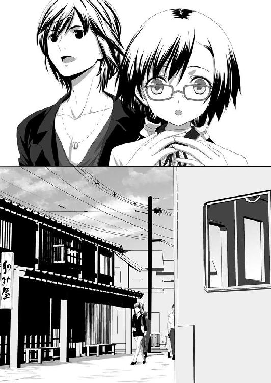
道行く人たちが二人を振り返り見ては、なにかヒソヒソと話している気がして仕方がなかった。
「とにかく、地図を探そう」
「地図と言うても......。警察署とかに行ったら怪しまれそうやし......」
どうすべきか迷った二人の耳に電車が走る音が聞こえてきた。
「鉄道があるのか......」
「駅に行けば地図があるかもしれませんなぁ」
「それだ」
二人は音を頼りにまずは線路を探した。
線路に近づいていくと大きな街道にぶつかり、道路標識に最寄りと思われる駅の名前が記されていた。
黒須町駅──
二人ははやる気持ちを抑えながら、ゆっくりとした足取りで駅に向かって歩き出した。
高度成長期の町ということもあるのだろう。古びた印象は町のデザインだけであり、実際に建物が古いわけではない。
「あのハガキの消印を信じるなら、この町の時間は昭和四五年で止まっとるんではないどすか？」
街道を走る自動車も自転車も確かに昭和四〇年代中期のデザインであり、平成の時代ではマニアくらいしか乗っていないようなオート三輪などが平然と道を走っていた。
「頭がおかしくなりそうだ......」
町中では駄菓子屋があり、子どもたちが五円や一〇円という単位でお菓子を買っていく姿を目撃することもできた。
古き良き時代──
戦後の混乱と復興も終わり、高度成長期に入った時期の日本の姿。護人たちが本や資料という知識の中でしか知らない世界がそこにあった。しかし、その知識の中と異なるのは、人々の顔つきにすべて陰鬱ななにかを感じさせるものだった。
成長期にありがちな前向きさと力強さを感じることができない。
子どもですら足を引きずり猫背気味になってうつむき加減で歩いている。駆け回り、どこでも遊び場とするような元気よさなど見ることはできない。
この空の色といい、人々の姿といい、そこには歪んだ昭和の世界が広がっていた。
「これが黒須町駅......？」
どことなく東京駅を意識した洋風建築の駅舎は、昭和初期の流行を残した建物に見えた。
線路は単線だがホームは島式の駅の区間だけ複線になる形式の田舎に見られがちな構造をしている。さらに駅舎からホームに渡る跨線橋はなく、改札口の目の前に構内踏切が作られ、ホームに渡る時は一度線路を横断する必要があった。
当然、自動改札などはなく、改札は駅の窓口で切符を切ってもらう必要があり、列車が来る直前くらいまで、駅のホームに入れないように木製の格子戸が閉められるようになっていた。
駅の待合室は広く作られており、いくつかの木製ベンチが並んでいた。そこには二人の老婆が座っておしゃべりをしていたが、護人たちの姿を見た途端に声を潜めて、ジロジロと遠慮ない視線を主に和泉に向けてきていた。
彼女たちの視線を無視して護人は待合室を見回した。驚いたことに、硬貨しか使えないものの券売機は自動化されていた。
──この時代の最新型ということか？
地方にある都市にしては珍しく、最新鋭の設備が整っているように思えた。
「護人はん、こっちや」
地図を見つけたのは和泉だった。
ようやく自分たちの居場所と目的地が分かるとホッとしつつ、護人は食い入るように地図を見つめた。
地形は護人の記憶の中にあるいすみ市、勝浦市、そしてその間にある御宿町に間違いはなかった。問題はその地名がその記憶と異なることだ。
勝浦市は赤牟市となっており、御宿町は大港町となっていた。そしていすみ市がこの世界では夜刀浦市となっている。そして、二人がいるのは夜刀浦市北部にある黒須町駅ということだった。
しかし、夜刀浦という地名を見るだけでなにやら背筋がゾクッとさせられるのは気のせいだろうか？ 護人は思わず身震いした。
だが怯えてもいられない。
こちらの様子を窺いながらヒソヒソと話を続ける老婆たちに見られないようにしながら、護人はスマホを取り出し、ジェスチャーで和泉に写真を撮ることを知らせた。
和泉は頷き、ちょっと身体をずらして護人と並ぶようにし、完全にスマホが老婆たちの視界に入らないようにカバーした。
護人は無音のカメラアプリを起動し、何枚も地図の写真を撮影し続けた。
少なくとも、これで当面は迷わないで済むし、これを持ち帰れば貴重な夜刀浦の資料となる。
撮影を終えてスマホを懐に戻した時、二人は背後に人の気配を感じた。
「どちらへお訪ねですか？」
確かに背後からかけられたその声は、そう言った気がした。
こんな声を出す人間がいるのか？ そう思える唸るようなダミ声に二人は驚き振り返ると、そこには駅員の制服をきた男が立っていた。
だが、その顔がおかしい。
いや、顔というか、その頭骨の骨格からして人間離れしていた。
頭蓋骨の骨格が、頭頂の方が小さく、下あごががっしりした卵のような形をしていた。そして鼻がやたらと平べったく広がっており、その両眼はあり得ないほどに真円近くまでカッと見開いており、突き出した眼球がこぼれ落ちないのがおかしいと思えるほどだった。
顔の輪郭は全体的に平坦なノッペリした印象を受けるものであり、その顔のこめかみ付近にはいくつものシミのようなものが浮かんでいた。そのくせ肌は濡れた魚の皮のように滑光っていた。
なによりも異様なのは、半ば空いたその口元だった。
唇の皮膚が裂けてめくれ上がっており、黒い口腔から覗き見える歯は人間のモノというよりも魚類のモノという方が相応しい尖った大きな歯が並んでいる。唇の割れはひび割れというよりも、その歯のかみ合わせが悪くて引き裂けているような様子だった。だが、本人は痛がる様子もなく、むしろ唇が裂けることに愉悦を感じるかのように、時折自らの唇を歯で裂いてはクチャクチャと音をならしていた。
なにが気色悪いかというと、裂けている唇にはたっぷりのリップクリームでも盛っているのか、あるいはなんらかのコラーゲン質のものを塗り込んでいるかのような、半透明の幕がかかっており、歯が唇を引き裂くたびに粘ついた粘液の糸を引くことだった。
そう、この顔つきがよりオコゼやオオカミウオの方向に進めば、夜刀浦人になるのではないかと思える顔だった。
「え、えと......。夜刀浦町飯綱という所に行きたいのですが」
「飯綱......」
そのドコを見ているのか分からないギョロリとした目で睨まれた。護人はそんな気がしたが、一歩踏み込んだ駅員は地図の一ヶ所を指さした。
「ここから赤牟方面に二つ先進んだ所に宇神城下駅という駅があります」
「のきがみじょうか駅......」
宇神と書いて『のきがみ』読むとは護人も和泉も知らなかった。
「そこで夜刀浦の中心街に入れます。駅を降りて南に下り、糸神川を渡ってしばらく歩くと、武家屋敷町跡停留所というバス停があります。その周辺が飯綱になります」
「あ、ありがとうございます。えっと、そこに向かう電車は、いつ来ますか？」
「あと、一五分後です。改札は、五分前に開きます」
淡々とした調子でそれだけ言うと、駅員は会釈をして足を引きずるように歩きながら駅員室の方に戻っていった。
「一五分後......」
思わず二人同時にもらしてしまった言葉。
それは、この場所にあと一五分もいなければならないのかという苦痛混じりの呟きだった。
「ねえ。気づいた？」
小さな声で訊ねてきた和泉に、護人は怪訝そうな目を向けた。
「なにに？」
「あの駅員はん。話しとる間、瞬きひとつせいなんだんどすよ」
護人は振り返って確認したくなる衝動を懸命に堪えた。
「どういうことだ？」
「あれだけの長時間、あんなに目を見開いたまんまで瞬きひとつせんなんて、人間技ではないかと......」
──アレが外の世界に出てくると、夜刀浦人となるのか？
そんなことすら考えてしまうほどに、あの駅員は今まで刃を交えてきた夜刀浦人を意識させる顔つきをしていた。
そう、そこまで考えた時、護人の脳裏にもうひとつの疑問が浮かび上がった。
〝ここは夜刀浦と呼ばれる土地であるにもかかわらず、
この駅にたどり着くまでの間、夜刀浦人の姿を見ていない〟
あの祠からこの駅にたどり着くまでの間、何人もの住人たちとすれ違ってきた。
しかし、神祇官たちが夜刀浦人と呼ぶ亜人の姿をひとつも見ていないのはなぜか？
護人が神祇官になってから幾度となく顔を合わせてきた夜刀浦人。戦後の遭遇記録から計算した出現数を考えるなら、少なくともこの町に千人単位はいなければおかしいことになる。
しかし、町の規模と今まで見てきた家並や風景から察するなら、人口はせいぜい五万以上一〇万未満という地方都市レベルになる。そこに千人単位の夜刀浦人が生活するなら、一度くらいは顔を合わせていなければおかしい。
──どこかに隔離されているとか、あるいは専用の生活圏があるのか？
もしも、夜刀浦人専用の町があるのなら、そこに足を踏み込みすぎないようにしなければならない。護人と和泉の目的は夜刀浦の情報収集だが、とにかくこの情報を持ち帰ることが重要なのだから。
「護人はん、隅っこに行って座っておりませんか？」
「え？ ああ、そうしようか」
和泉はあまりにも地図の前にいすぎて怪しまれることを危惧して、護人の腕を引っ張った。
鉄道を利用する客はそれなりにいるのだろう。
駅の待合室には徐々に人がやってきたが、いずれの人たちも護人と和泉を見ては立ち止まり、遠巻きにするようにして近づいて来なかった。
「そだ、切符買わないとあかんどすよ」
「ああ、そうか......」
二人は立ち上がり、券売機の前に立ってその値段を見て愕然とした。
三〇円──
初乗り運賃で行ける範囲の様子だったが、その物価の低さに驚きを隠せなかった。
現在の運賃で考えるなら一四〇円圏内の区間料金に相当する。
そして値段もさることながら、券売機のデザインの古さも相当なものだった。四角いプラスチック製のボタンしか並んでいない鉄道券売機など、彼らは映画の中以外では見たことがない。
「ちょっと待て......最大の問題があるぞ」
「なに？」
「お金だ......」
「あ......」
二人が持っているお金は平成の日本のお金。
この世界で果たして使用できるのか？
「大丈夫。一〇円玉のデザインなんて変わってへんだし。問題ないどすよ」
「いや、そうなんだけど......」
和泉は恐れることなく券売機に小銭を入れてボタンを押した。
問題なく厚い紙製の切符が排出された。
その瞬間、なんとなく二人を観察するように見ていた待合室にいた人たちは、興味をなくしたように二人を見なくなった。
要するに、券売機で使える硬貨を持っていることで、奇抜な格好をしているだけのこの世界の住人という認識をしたのかもしれない。
そんなことを感じながらも護人はワザワザ百円硬貨で切符を買って、二人は元いた待合室の隅にある席に腰掛けた。
「近衛さん。いくら小銭を持ってる？」
「小銭入れにある程度やけど......どうかしたん？」
「同じか......」
護人も財布の中に数百円程度しか持っていなかった。
「この世界で使えるお金は、百円までだ」
「そないなこと......」
分かっているというように和泉は頷いた。
切符の日付を見れば今がいつの時代なのか正確に理解できた。
４５．２．１０
鉄道の切符は和歴を使用しているために、明らかにここが昭和四五年であることが確認できた。そしてなによりも、あのハガキに押されていた日付と同じということも......。
時が止まった世界──
どういう理由なのかは分からないが、この夜刀浦の世界は昭和四五年二月一〇日で日付が止まっていた。
つまり、その時代には五百円玉などなく、当然、今現在の紙幣など使えるはずもない。今の手持ちの小銭がなくなれば買物もできなくなる。
頭の中が混乱しそうになるのを二人は懸命に抑え、記憶の奥底にある昭和と平成の違いを再確認する必要があった。
物価、文化、情報と、さまざまな混乱が頭の中を支配し、ちょっとでも気を許せばおかしくなりそうな気がして仕方がない。
一人でここに連れ込まれていたら、正気を保てる自信が二人にはなかった。
状況を共有できる相手がいるからこそ、正気を保てる。
「護人はん......。離れへんようにしよ」
「え......？ ああ、そうだね」
「ところで、なんで百円で切符を買ったん？」
「え？ ああ、この時代の硬貨が欲しかったから。自販機なら平成硬貨が使えるけど、リアルに手渡すなら昭和硬貨が必要だろ？」
「そっか。なら、ウチも次はそうしよう」
確かに、この時代の人が見たらおかしな格好に見える人間が出したお金は、本物か確認するだろう。その時、年号が平成では困ってしまう。実際、護人が手に入れた十円玉は昭和三三や四〇年と年数こそばらばらだったが、年号はすべて昭和だった。
──三三年のギザ一〇か......。確か、コレクション性のある十円玉だったな。
護人が価値ある十円玉に気づいた時、さっきの駅員が現れて改札口の格子戸を開けた。恐らく五分後に電車がくるのだろう。待合室のイスに座っていた老婆たちも立ち上がり、ホームに向かう準備をはじめた。
二人は立ち上がり、改札に向かう人の列の最後尾についてホームに向かった。
線路を横断し、ホームに向かう。
ほどなくやってきた電車は、三両編成の当時としては比較的新しいと思われる列車だった。乗り込んで電車の床が木製であることに驚いたが、天井についている冷房器機が扇風機ということにも驚かされる。あまり物珍しそうにしているのも怪しまれるので、二人は空いている座席に座った。
しかし、ここでも二人は乗客からの奇異なものをみるような視線にさらされた。同じ駅から乗り込んだ者たちはもう気にもしていない様子だったが、電車に乗っていた人たちは違う。皆、一様に二人を見ては、ヒソヒソと声を潜めてなにかを話していた。
──警戒心が強い......というだけじゃなさそうだな......。
ヒソヒソと話している人の中には、次の駅であわてた様子で──それでも二人から目線を離さずに駅を降りる人の姿もあった。
「ドコかに知らせに行くんだと思うかい？」
「そうやな。多分、ウチらみたいなのを監視する所があるんやないかな？」
「監視......？」
「そう。だって、ウチらだけがタイムスリップしたとは考えられへんやろ。ウチらみたいな時間旅行者はいるはずそやし、そういうことに対処をする機関があってもおかしくないでしょう」
「そうか......」
確かに和泉の言うとおりの機関があってもおかしくない。
時間が進まない世界である以上は、そうやってこの世界は人口を増やしているのではないかと思うところもあった。
「だけど、捕まるわけにはいかないよな」
「そやね」
本当に次の駅までの区間は短いものだった。
そのために先ほどの駅で降りた人の伝令が間に合わなかったのか、それとも単に取り越し苦労だったのかは分からないが二人は誰に咎められることもなく、駅員に教えてもらった宇神城下駅にたどり着き、指示どおりに武家屋敷町跡停留所というバス停を探して、夜刀浦町の市街地に足を踏み入れた。
夜刀浦町は夜刀浦市の中心街だけあって、商店街もそろっており、人通りがかなり見られた。だが、二人が通るとやはり人は遠巻きにして観察するような視線を向け、ヒソヒソと話をはじめる。
着ている服装が服装だけに、この土地のものを買ってどこかで着替えようかとも考えたが、それをするには使えるお金が足りなかった。お札が使えないというのが致命的だった。
なんとか人通りの少ない場所を選んで電柱に書かれている住所とスマホで撮影した夜刀浦地図を頼りにバス停、あるいは飯綱を探して二人は彷徨った。
切符に書かれていた季節は二月だったにもかかわらず、半袖のシャツでいたいくらいに気温は暑く、湿度が異様に高い。同時に、あの生臭い臭いが空気にたちこめていた。
日差しも傾かず、時間の経過がまったく分からない。
どれだけ歩いたのか分からないが、二人がヘトヘトになり、やっとのことでたどり着いた場所は、木造平屋の２ＤＫくらいの間取りの家だった。
そう、ハガキの差出人である青木浩三の家。
人がいるような気配はあり、家の中からは時折ドカドカと歩く音が聞こえていた。
果たして、この家を訪問すべきか？ 戸口の前まできて護人は迷った。それは和泉も同じだった。
もしも、この青木浩三という男が、ここの住人と同じ態度を取ったらどうすればいいのか？ そして、ここを訪ねたことでこの町の住人に捕らえられたら？
そのことを考えるとどうしても最後の一歩を踏み出すことができなかった。
「どうする？」
「............」
「ここでじっとしていても......仕方ないよな？」
「いざとなったら、二人で逃げ出せばええだけどす」
頷き答えた和泉の言葉に背中を押され、護人は玄関脇についていた呼び鈴を押した。
キンッコンッ！
電子式のブザーではない、ややくぐもった金属板を叩く音が響いた。
ドカドカ歩く音がして、ややあって玄関のドアが細く開いた。
「どなたさん？」
その声は若い男の声で、あの駅員のようなだみ声ではなかった。
「青木浩三さんのお宅ですか？」
「そうだけど......。あんたは？」
なんと名乗ったらいいのか分からず、護人はハガキを差し出した。
「このハガキに見覚えは？」
「え？ おおおおおっ！ 俺が出したハガキだよ！ ちょ、ちょっと待ってくれよ」
一度ドアが閉まってチェーンを外す音が聞こえ、再び開いたドアから顔を出したのはヒッピースタイルでロン毛の二〇代半ばと思われる男だった。
「ま、まぁ、入ってくれよ。話はそれからだろ」
男──青木浩三に手を引かれて護人がまず家に入り、和泉がそれに続いた。
昭和モダンな部屋かと思いきや、通された部屋はガランとした感じがして意表を突かれた。畳にちゃぶ台、そして座布団としきっぱなしと思われる布団が一組だけ。テレビもラジオもなかった。
「えと、あんた。名前は？」
「大泉護人です」
「近衛和泉どす」
「そ、そか......」
青木はソワソワした様子で護人と和泉の姿を見ていた。
「そ、外の世界では、今、そんなカッコが流行ってんのか？ やっぱり、アメリカのファッションかい？」
外の世界という言葉。それは、護人と和泉が求めて止まない回答のひとつだった。
「青木さんは、外の世界を知ってるのか？」
「なにをバカなこと言ってんだよ......。俺は、外の世界からこの妙な町に来ちまったんだよ！ な、なあ。外の世界の話を聞かせてくれよ！」
「ちょ、ちょい待ってや。情報整理させて！」
思わず和泉がそう声を張り上げたものの、どう整理したものか分からなかった。
なにから質問したらいいものか......。
とにかく、青木が言う外の世界が自分たちが今までいた世界と同じ場所なのか確認しなければならない。だが、どうやってそれを確認すればいい？
「あんたが言う外の世界って、どんな所やったん？」
「ええ？ だって、あんた......そこから来たんじゃねえのか？」
「一緒かどうか分かれへんから聞いとるの」
面倒臭いな......というような調子で頭をぼりぼりとかいた青木は、天井を見上げながら遠い記憶を探すような調子で話し始めた。
「もう、ここにきてどれくらいの時間がたってんだか分かんないんだよなぁ......。夜もないし......。永遠に夕暮れ時の世界って......すべてがあやふやな感じでな......」
そうポツリポツリと青木は語りはじめた。
青木は千葉県鴨川市の住人らしかった。彼は初の国産人工衛星『おおすみ』を見るために、実際には見えもしないことも知らずに、夜中に公園に向かい、空に夢中で足下を気にせずにいたら川に落ち、ここに流れ着いたのだという。
考えてみなくても、青木は七〇年代の人間。どう考えても護人や和泉とわかり合える接点などなかった。
「自分がなぜここに来たのかもわかんねえんだ。最初のうちはよそよそしかった他の人たちも、次第に優しくなって、働き口とか紹介してくれてさ今じゃギリギリだけど生活して行けてるんだ......」
「仕事は......なにを？」
「港で働いているよ。魚が大量にいつも上がってくるんで、人手が足りないのさ。それでも、寂しくってな......友だちにハガキを出したんだけど、届かなくてよ。そういえば、なんであんたはそのハガキを持ってんだ？」
「え......ああ。俺の家に間違って届いたんですよ」
「なんだ......そうなのか......」
青木はガッカリしたような表情を見せた。しかし、すぐさま顔を上げて質問しはじめた。
「なあ、もういいだろ？ 教えてくれよ！ 万博！ 万博はどうなった？ あんたらは行ったのか？」
「万博？ つくばのですか？」
「筑波？ そんな田舎知るか！ 俺が聞きたいのは大阪万博だよ！ 月の石とか来たんだろ？ 盛況なのか？」
護人も和泉も逆にポカーンとするしかなかった。
「なんだよ。万博も知らないのかよ！ じゃあ、じゃあさ。植村直己のエベレスト登頂はどうなった？ 成功したのか!?」
演技と疑う気になれば疑えなくはない。しかし、外の世界の情報に飢えている彼を見ているだけでも、この夜刀浦に最初からいた人には思えなかった。
「大阪万博は大盛況でしたよ。あと、植村直己さんは、エベレストに無事に登頂できました」
「そうか！ やった、やったな！」
よほど外の世界の情報が嬉しかったのだろう。青木は泣き出していた。
「ねえ、青木はん。おせてください。外の世界に出る方法はないんどすか？」
「ない。あったら、俺がさっさと出て行ってるよ！」
泣きながら語ってくれた青木の情報を整理すると、この夜刀浦という世界は本当に夜がなく、いつもこの夕暮れ時の逢魔ヶ刻のような明るさの世界なのだという。
この町に流れ着いた当初、青木はなんとか脱出しようと電車に乗ったりもしたらしいが、赤牟まで行くとそこで記憶が途切れ、いつの間にか駅の待合室にいるのだという。
つまり、閉じた世界の大きさはその赤牟という町までということになる。
青木はもう慣れたというが、いつも魚が腐ったような生臭さが漂っており、時折、その臭いが異様にきつくなる時がある。
「そういう時は、家から出ちゃいけないんだ。あまりの臭さに、意識が薄れちまって、倒れちまうからな」
「そんなに......臭いんですか？」
「ああ。魚の内臓とかをため込んで腐らせたって、あんな臭いにはならないと思う」
想像もつかない表現に護人と和泉は顔を見合わせた。
その非常に臭い時に儀式かなにかをしているのではないか？ あるいは、その時こそ夜刀浦人が外の世界に出て行く日なのではないか？ そんなことも考えられた。
「どんな日が......その臭い日なんですか？」
「そうだな。この赤い空がドス黒い赤色に染まってくると、そういうキツイ臭いが漂ってくる」
「臭いはどこから？」
「わかんねえなぁ......」
「そうですか......」
もうこれ以上はこの男から情報は得られない。そう判断した二人は、もっと外の世界の話を聞かせてくれとせがむ青木に丁重にお詫びをし、人を探しているからと断り、青木の家を出た。
「なぁ、護人はん......」
「なに？」
「青木はんに、外の世界がもう四〇年以上も進んでいることをおせてあげいでも、よかったんかなぁ......」
「教えてあげたところで俺たちにはどうすることもできないし、なによりも彼が余計に苦しむんじゃないかな？ こんな浦島太郎みたいな生活をしていて、世界から取り残されたなんて知ったら......」
「そうやね......。なんか、悲しいなぁ......」
しかし、そう青木のことを哀れんでもいられないのが護人と和泉だった。
時間の流れに違いがある以上、ヘタにここに居座り続けると、外の世界に戻った時は数十年たっているという可能性すらある。
「なるべく早く戻らないといけないな......」
「でも、なんで時間が止まってるんやろ？」
「なぜ止めておく必要性があるのかも分からないもんな......ん？」
曲がり角を曲がろうとした時、行く先から大勢の人が群れてこちらにやってくることに気づいた護人はあわてて和泉の手をつかんで建物の間の物陰に隠れた。
「どないしたん？」
「シッ！」
数秒後、目の前を通り過ぎたのは一見するとごく普通の男たちだった。しかし、その姿はどこか人間ではない、異質さを備えていた。
目が真円のように見開かれたままとか、歯が魚類を思わせる尖った歯だとか......。
そう、このまま異変を続けていくのなら、いつかはあの駅員のような姿になってしまう。そんなことを想像させる姿顔立ちをしていた。
「あいつら......青木さんの家に行くな......」
「ウチらがつけられたってこと？」
「こんなに時間がたっているから、つけたのかは分からないけど......」
嗅覚が優れているというのであれば、今、この物陰に隠れている護人たちを発見できるはずだった。それがないというのなら、嗅覚で後をつけてきたということは考えられない。
「最初から、青木さんの家に目星をつけていたということか？」
「でも、ウチらが青木はんの家に行くことを予想でけるわけないでしょう？」
「どうだろうか......」
夜刀浦人が得体の知れない呪術を使えるのなら、予想できるかもしれない。
だが、すべてが未知数だった。
様子を窺っている間に、先ほど通った一行が再び戻ってきた。
その中に青木はおらず、彼が自分たちとかかわったことで捕まったわけではないことを知り、一安心した護人たちはしばらくその場で様子を窺ってから、町外れの方に向かって移動した。
参
「どう見る？ 青木さんの家にあいつらがやってきたのは、俺たちを探してのことなのかな？」
「どう見るって言うてもなぁ......」
海際の町外れの廃屋と思しき家の中庭に潜み、二人は小休止していた。
たとえ自動販売機で買った物であっても、この世界の物は自分たちには毒になるかもしれない。そう考えるとこの世界の食物に手をつけるのが怖くなり、自動販売機を見つけても持ち込んできていたペットボトルの水を飲み、食料は固形食料のパックを二人で分けた。
この水がなくなったら、缶ジュースを自動販売機で購入し、それに濾過ストローを使って水分補給をするしかないかもしれない。
果たして、泥水をも真水に浄化する浄水フィルターが効果を発揮するだろうか？
あの異形の顔つきに変貌してしまわないだろうか？ そんな状況を想像するとゾッとしてきて、この水がなくなったらと思うと持ち込んできた水を飲むのもためらわれ、自然と食事の速度も遅くなる。
「どう見るって言うても、ウチにはさっぱり分かりません。どうやってこの世界に入り込んだのかすら分からんし......」
「そうだよな......」
「このまんまここで小休止して、その後、なんとか脱出できそうな所を探すかないんやないかな？ どのみち、追われることに変わりないし」
「そうだな......」
とにかく、あの集団が青木の家に向かいながらも青木を取り押さえなかったところをみると、彼らは二人を捕らえにきた集団と考えなくてもよさそうだった。
ならば、まだ追手はかかっていないと考えてもいいのではないか？
「脱出口か......」
あの祠で拝むことが、この世界への扉を開くことにつながるのだろうか？
そう考えて護人は頭を振った。
祠を拝んだ程度でこの世界に引きずり込まれるのであれば、もっとたくさんの人が行方不明になっているはずだった。なによりも、青木の夜道を歩いていて川に落ちたらこの世界に流れ着いたという話が通らなくなる。
「とにかく、帰る手段を探さないとならへんどすな。情報は、持ち帰ってこそ意味があるものどすからねぇ」
「そうなんだけど......ん？」
空を見上げた護人に続いて和泉も見上げ、息を飲んだ。
黒く渦巻く雲が空に立ちこめはじめ、空の色がドス黒い赤に染まりはじめた。
「あれって......ウウッ！」
それだけ言いかけてヒドイ臭いを吸い込み、和泉は思わず咽せた。そして堪えきれずにハンカチで鼻を押さえた。それは護人も一緒だった。
目の前に腐乱してしばらく放置した肉を押しつけられても、こんな臭いにはならないだろう。
必死で嘔吐感と戦いながら、護人はブロック塀の隙間から外を覗き込んだ。
二人が隠れ潜んだ廃屋の中庭は放置された畑一枚分だけ道から離れた場所にあり、風抜き用の穴あきブロックから外の様子を覗いていても、ほぼ気づかれることのない場所だった。
その穴から覗いていると、周囲の家々から一人、また一人という感じで人が現れ、操り人形のようなぎこちない歩みをしながら港の方に向かって歩き出した。
──まるで、ゾンビだ......。
どこを見ているのか分からない顔つき。そしてぎこちない歩みは、ホラー映画に登場するゾンビそのものだった。しかし、彼らは生きている人間のはずだった。
少なくとも、あの奇顔の持ち主たちがいるようには思えない。
彼らは一様に、何か呪詛めいた言葉を呟きながら歩いていた。
ふんぐるい......むぐるうなふ......。
そんな言葉をそれぞれが呟いているように感じたが、よく聞き取ることができない。
いや、聞き取ろうとするとまるで鼓膜がその言葉を受け入れることを拒否するように怯えて、うまく音として伝えてこない気がした。
「これから......なにがはじまるんだ？」
「ああっ！ アレを！」
同じく風抜き用の穴から外を見ていた和泉が驚きの声を漏らした。
ぎこちない歩みをする町の人たちの中にいる青木の姿を和泉が見つけた。
「青木さんも......なにかに操られていたのか？」
せめて助け出すことはできないか？
そう護人が考えた矢先、廃屋の方で木製の戸を引き倒すような音が響いた。
同時に複数の足音も響く。
「くそっ、嗅ぎつけられたか！」
和泉はバッグの中から古代の小剣と同じ形をした小剣を二本取りだして両手に構えた。
「護人はんは退路を探して！」
廃屋の雨戸が外に蹴破られた瞬間、和泉は跳んで姿を現した夜刀浦人に斬りかかった。
和泉はハリウッド映画のワイヤーアクションさながらに身体を渦のように回転させ、両手の小剣で斬り裂く。そして、着地するや身を小さく丸めて転がり、続いて入ってこようとしていた夜刀浦人の両足の腱を断ち切った。
「ふたつ」
もう一人。玄関のところに立っていた夜刀浦人があわてた様子で襲いかかってきたが、和泉は軽く身体を捻りながら足を振り上げ、その脳天に踵落としを喰らわした。頭骨が砕ける鈍い音が響くが、逆手に構えた小剣でその首を斬り落とした。
「みっつ」
そして、足の腱を斬られて立ち上がれないでもがいていた夜刀浦人の頭に、二本の剣を突き立ててとどめを刺した。
「近衛......強いな」
いつの間にか護人は呼び捨てにしていたが、別段気にした様子もなく和泉は笑った。
「おおきに。でも、ほめ言葉は後にしてな」
豪快に戦う卯月とは真逆の無駄な動きのない、流れるような戦い方をする和泉。
その戦い方に見とれそうになって首を振るや、護人はあわてて退路を探した。
戦いの騒ぎを聞きつけたか、ぎこちなく歩いていた町の人たちの一部が、護人たちに向かってやってきた。畑の側に退路はない。
「近衛！ 塀に登って逃げるぞ！」
「なら、護人さんがお先に！ ウチが殿を務めます！」
護人はいくつかの祝詞を唱えて刀印に構えた指で三度和泉を指した。
「鉄手、硬胴、強脚をかけた。防御が少しはあがると思う」
「おおきに！ はよう行って！」
和泉に急かされて護人はブロック塀の上に上がり、その上を走った。
和泉もその後に続く。
これだけ足場が悪いところであれば、青木たち町の人は追いかけてこられないだろう。そんな思惑から護人が選んだルートだった。
確かに、その思惑は当たって後をついてくる追手はいない。
いないはずなのだが、なぜか護人の背筋にザワつきが走っている。
──なにかがいる......。
塀の上で立ち止まり、護人は辺りの様子を窺った。
左右どちらも平屋の家であり、塀から屋根に飛び移ることは容易な距離だった。まして、簡略衣を身につけている身ならなおさらだ。
しかし──
「立ち止まってどないしはったん？」
「耳を澄ませろ......」
どこかから......含み笑いをするような声が聞こえないだろうか？
最初、護人は幻聴にでも襲われたかと思った。
クスクス......とかフフフと笑う声が聞こえる。緊張のあまり、自分の耳がおかしくなったかとも思ったのだが、護人の耳に聞こえている声を和泉も捕らえたらしい表情を見せたことで、それが幻聴ではないという確信を得た。
「なんだ......この笑い声は......」
クスクス......ふふふふ......。
人を嘲るような女の含み笑い。
そんな声が聞こえる。しかし、姿はどこにも見えない。
「ドコに!?」
バキンという音と共に古くなった屋根瓦が砕け、とっさに二人はその方向に目をやった。しかし、そこには誰もいない。
クスクス......ふふふふ......。
「音だけやね......」
その声は徐々に近づいてくる。しかし、姿は一向に見えない。
──ドコにいる？
二人の死角になっている家の隙間にいるのかとも考えたが、声の響きからそれはないと護人は頭を振った。明らかに、素通しで見える位置にいない限り、こんなに声は響いてこない。
またもや屋根瓦が割れた。しかし、姿はない。
「護人はん......。これ、姿がないんやなく......」
「ああ......。見えないんだ」
ヒュッと空気が動く音を感じて二人はあわてて飛び退いた。
わずかに出遅れた護人の腕をなにかが掠め、鋭いナニかが服を引き裂いた。
「護人はんっ!?」
「大丈夫！ 掠めただけだ！」
掠めたといっても本気で鋭いカミソリのようなもので削られ、腕からはわずかだが血がにじみ出していた。
その時、空中にナニかが微かに現れた。
ゆっくりと、微かに赤い半透明ななにかが......。
「なんだ......あれは......」
クスクス......ふふふふ......。
その声は、ソレが出現しはじめた場所から聞こえてきた。
ソレは例えるなら安物のイチゴのゼリーを薄めたような色をした、細長い直径五センチほどのナニかだった。
触手......というべきだろうか？
その先端はヤツメウナギの頭を思わせる形をしており、鋭い牙がビッシリと生えた口を備えていた。
それがニョロリと蠢くたびにクスクスとかフフフというような、女の忍び笑いに似た音が響いた。
ほんの数秒間だけその細長い身体が宙に浮かんで見えたが、すぐさまそれはぼぅっと消え始めた。
「こいつ......血を吸うとその姿を現すんだ！」
「見えない敵なら逃げるが勝ちや！」
二人は屋根に飛び乗り、他から姿を見られることもお構いなしに走り出した。
それを追うように、なにかが屋根瓦を砕きながら走り迫ってくる。
それは、巨大な猛獣かなにかがそこにいるような印象だった。
一瞬だけ見えたあの赤く細い蛇のようなモノ。しかしそれは見えないナニかの身体の一部であり、全身はもっと大きな──少なくとも、牡ライオンくらいはありそうな巨体なのではないか？
割れていく屋根瓦からそれが想像できた。
しかし、姿全体が分からなければ対処のしようがない。
結果的に逃げるしか道がない。
しかし、屋根瓦という不安定なモノの上を走っていくのなら勝機はあるかもしれない。
そう考えた和泉はわざと屋根瓦が浮くように走り、そして小剣を使って瓦を弾いてズラし、そして浮かせた。
案の定、浮いた屋根瓦を踏んだソレは足を滑らせ、同時に大量の屋根瓦の雪崩を引き起こして下に転げ落ちた。
「さっさと逃げましょ！」
これで時間を稼げる。
二人は走る速度を速めて忍び笑い声を振り切った。
「聞こえるか？」
「しっ......分からへんわ......」
かなりの距離を稼いだ二人は、手近な物陰に隠れて様子を窺った。
しかし、しばらくの間聞き耳を立てていてもあの忍び笑いの声は聞こえてこない。
二人はホッとしてそのまま地べたにへたり込んだ。
「なんだったんだ......あれは......」
見えない化物。
吸血すると、その血液の色が反映されるのか赤色半透明な姿を現す。吸った血液の量によるのか、姿を見せたのは本当にわずかな時間であり、現した身体も触手一本だったが。
「大きさは三、四メートルというトコかな？ もっとおっきいのかもしれへんけど......」
「そんなでかさか......」
触手一本の直径がだいたい五センチほど。触手を見た当初は巨大な蛇かとも思ったが、あの動きはイソギンチャクのそれに似ていた。しかし、物理的にあんな巨大な触手を地上で振り回すことができる生物はいるはずもない。
「見たことも記録で聞いたこともない、御霊か......」
「妖怪......妖し......。言い方は色々やね。ウチもあんなにおっきいの、京都で遭遇したことあらへんかったわ」
「アレは、夜刀浦人の飼い犬だと思うかい？」
「たぶん......正直、分からんけど......」
夜刀浦人に飼育されている怪物でもない限り、こんなにも都合良く現れたりはしないだろう。
正直なところ、姿が見えないのでは手も足も出ないのが現実だったし、現在の装備では超近接戦闘しかできない。姿が見えない敵に対して、この装備で挑むのは無駄に命を捨てるような状態だった。
だが、こんな状態では夜刀浦からの脱出方法を探すどころではない。
──くっそ......。どうすればいい......。
気持ちの焦りが苛立ちを生む。
そんな時、護人の耳があの忍び笑いとは別の声を捕らえた。
大勢の人々が唱える念仏のような声──
潮騒に混じり、海風に乗って響いてくるその声は、地獄の底から亡者が呼びかけてきているような、そんな声音にも思えた。
「あの声......」
「ああ......。さっき、町の人たちが唱えていた呪詛のようなもんだ」
和泉の耳も捕らえていたソレは、海風に乗ってくることを考えると浜辺の方から聞こえてくることになる。
しかし、そちらに向かおうにもドコにあの透明な化物が潜んでいるのか分からず、動くに動けない状況だった。
「賭け......だな」
「え？」
「ヤツが現れたら、ありったけの力で斬りかかってくれ」
「了解したけど......。なにをする気なん？」
「まぁ、声を出さずに見てなって......」
護人は三握剣を抜くと、出血が止まりかけていた腕の傷の部分をその刃で軽く切った。
「なにしてん！」
護人は答えず、ジャケットの袖を裂いてそれに血を染み込ませた。そして、ある程度血を吸ったその袖を近くの道路に投げ捨てた。
「すまん、ハンカチくれ。血止めしないと意味がない」
「あんたバカどすか!? まったく！」
和泉がハンカチで血が流れ出ている護人の腕を押さえている間に、護人は小声で祝詞を唱え、構えた刀印でそのハンカチを軽く叩いた。
「治癒の巫術どすか？」
「そう、止血効果程度しかないけどね......。多少血を失ったけど、吸血性の怪物なら血の臭いに引き寄せられるかもしんないからね」
服に染み込ませた血の量が多少なんてものではないことくらい、重く湿ったジャケットの袖を見れば誰にだって分かった。
「余計な心配をかけへんでください。アレがきても、ウチが対処しはりますからほんで休んでいてくださいよな」
「それは......」
護人が何か言いかけた時、和泉がその口を手で塞いだ。
その目線は先ほど護人が投げた血が染み込んだ袖にそそがれていた。
クスクス......ふふふふ......。
微かに、例の嘲笑うような忍び笑いが聞こえてきた。
「どうやら、罠にかかったようどす。案外、頭が悪いヤツなのかもしれまへんなぁ」
徐々にその忍び笑いは近づいてきた。
そして、なにもいないはずなのに血に濡れたジャケットの袖が宙に浮いた。
ゆっくりと空中に姿を現す数本の触手。
その瞬間、和泉は両手に小剣を構えてダッシュした。
そして間髪を入れずに護人は祝詞を唱える。
「ひ・ふ・み・よ・い・む・な・や・ここの・たり！ ふるへっ！ ゆらゆらとふるへっ！」
和泉はその祝詞で自分の力が増加していくのを感じた。
袖に染み込んだ血を吸って赤色半透明の触手数本を空中に浮かび上がらせたソレは、突進してくる和泉に気づいたものの回避行動を取るには遅すぎた。
逆手に持った右手の小剣を突き出すようにして触手の一本を斬り落とす。その勢いを活かして身体を回転させ、左手の小剣で身体があると思われる空間を薙ぎ払った。
「キッシャアアアアアアッ！」
手応えはあった。見えない身体に深く突き刺さったと思われる小剣の柄を捻ってから手放し、バックステップで離れながら和泉は柏手を二回叩いた。
その直後、小剣が小さな爆発を起こし、見えない怪物の絶叫が響いた。
「まだやっ！」
和泉は空いた左手に鉄扇を開いて盾のように構え、いつ襲いかかられてもいいように猫足立って低く身構えた。
しかし、爆発のダメージが大きかったのか、それとも予想外の反撃にたじろいだのか、見えない怪物はそのまま引き下がっていった。
「あれが体勢を立て直す前に、逃げましょう！」
「そうしよう！」
長居は無用とばかりに走った二人は、聞こえてくる呪詛のような声音を頼りに海辺へと向かった。
そこに脱出口があるとは限らない。
しかし、護人は自分の勘を信じて走った。
もしもこれから儀式のようなものが行われるのだとしたら、それはここから夜刀浦人を外の世界に送り出すための儀式ではないか？ それに上手く乗じることができたら、ここから脱出できる。
もしもその勘が間違っていたら──
──その時は、また考えるさ......。
果たしてこの危険を冒した侵入が意味のあるものだったのかは分からない。
得られたものは青木が実在したこと。そして夜刀浦という世界があったことと、この世界の地図だけ。例え得られた情報がそれだけでも、まずは持ち帰らなければ意味がない。
予想どおり、浜辺では村人たちが座り込み、海に向かってしきりに念仏を唱えるように聞き慣れない不思議な呪文を唱えていた。
「ふんぐるい むぐるうなふ くとぅるふ るるいえ うが＝なぐる ふたぐん......」
途切れることなく呟き続けられる呪詛。
耳を塞ぎたくなる呪詛。
それは聞く者に苛立ちを募らせるためではなく、その場所に行って共にその呪詛を唱えたくなる衝動をかき立てられるためであり、それを懸命に抑え込むために耳を塞がざるを得なかった。
やがて、必死に衝動を抑え込みながら浜辺に集う人々の様子を観察していた二人の目の前で、数人......いや数十人の人たちが苦しそうにもがきはじめた。その中に、あの青木の姿もあった。
その人たちは砂をつかみ、激しくもがき、のたうっていたが、周りにいた人たちは気にした様子もなく呪詛を唱え続けた。
「いったい......なにが......？」
やがてのたうち回っていた人たちは異形へと変貌しはじめた。
カッと見開かれた目のまぶたは、あり得ない大きさにさらに開き続け、目玉が中から飛び出すように押し出されてきた。
顔が腫れ上がり、口が裂けてボロボロと歯がこぼれ落ちる。そして、一切の人の歯がなくなった口腔には、新たに肉食の魚の歯を思わせる尖った歯が生え始めた。中でも犬歯が乱杭歯のように飛び出した。
吐き気をもよおさせるような音とともに繰り広げられる異形への変異。
彼らの変異──いや、変態と同時に、世界にもうひとつ変化が訪れようとしていた。
突如、空に巨大な漆黒の渦が現れた。
黒い煙がグルグルと楕円を描いて作り出される渦。
最初は小さな渦だったが、呪詛が声高に唱えられるに従い徐々に拡大しはじめた。
「あれは......」
目的のものかも知れない。
固唾を呑んで護人はその渦の様子を観察し続けた。
渦は徐々に大きくなりながら、ゆっくりと下に降りてくる。その降下先は浜辺に作られた今にも朽ちて落ちそうな木製の桟橋の先。
桟橋の長さは約五〇メートル。呪詛を唱え続ける人々の間を縫ってここから走っていっても、邪魔さえなければ飛び込むことができるように思えた。
問題は──
「ドコに出るか分からないということか......」
「え......？」
「あの渦に飛び込めば、ここから出られるかもしれない」
そう囁いた護人の顔と渦を和泉は交互に見比べ、小さくため息をついた。
「なんだよ？」
「やっぱり護人はんも関東もんってことやな。思いついたが即行動。落ち着いて考えるヒマもないし......」
「だってこのままここにいたってどうなるか分かんないだぞ？ 食べ物だってロクにない。水だってつきかけてる。ここの食べ物を食べて、あの呪詛を唱えられたら、俺たちが夜刀浦人に変貌しないって保証はひとつもないんだぞ？」
「そないなの分かってます。でも、アレに飛び込んで、ドコに行くか行く先は分かってますん？」
「分からないよ。でも、ここよりマシだと願いたいな」
「願いたい......。もう、頭クラクラします」
「じゃあ、残るか？」
「行きますよ。二人一組、離れへんって約束したでしょ」
和泉が仕方ないなぁと言うように肩を竦めてみせたので、護人は頷いた。
後は、あの渦がもう少し下がってくるのを待つだけだ。
しかし──
二人の耳は、背後に迫ってきたあの忍び笑いを捕らえた。
振り返ると砂浜の砂を跳ね上げながら走ってくる足跡がこちらに迫ってくるのが見えた。
「くっそ。一難去ってまた一難かよ！ 走るぞ！」
護人と和泉は手に手を取って桟橋に向かって走り出した。
呪詛を唱えている人々はそれに夢中で止める素振りもなく、夜刀浦人になりかけの者たちもまだ変態のもがきから立ち上がれないでいた。
唯一の難関は、まだ渦の位置が高いということ。それだって巫撃装衣の簡略衣を着ている身ならば、届かない距離じゃなかった。
二人は全力疾走で桟橋を走る。
その後を、獲物を見つけた肉食獣の勢いで砂を跳ね上げて走る透明な怪物がいた。いや、駆け抜けていく巨大な足跡があった。
和泉はそれに気づき、さらにスピードを上げようとした。
しかし──
「くっそ。血が、足りない......」
大量の出血に護人の息切れが激しかった。
「護人はん、ちょい我慢してな！」
「はぁ？ なっ、ちょっ、ちょっと待てっ！」
護人が暴れる隙も与えず、和泉はヒョイッという調子で護人をお姫様抱っこでかかえ上げ、スピードを上げた。護人の調子に合わせていたら透明な怪物に追いつかれてしまうが、本来の和泉の足の速さなら逃げられない速度ではない。
そして加速をつけて和泉は一気にジャンプした。
「た、立場が逆だろおおおおおおおおおおおおおおおおおおおっ！」
締まらない護人の叫びを残して、二人は漆黒の渦の中に飛び込んだ。
壱
宮ノ森神明宮・地下神楽殿──
護人と和泉を送り出して二日が過ぎていた。
その間、神奈は弓削と卯月の指導を受けて必死に御先神の召喚練習をしていた。
「なんでだぁ？」
神楽殿の床にどっかりとあぐらをかいて座り込んだ弓削は、首をひねってガシガシと頭をかいていた。
「オイラにもわかんねえな」
その隣にちょこんと座って、イナも疲れた素振りを見せていた。
卯月や弓削がやってみせたとおりの手順で神奈は召喚をしていた。二人がかり（プラス一匹）で確認しているので、手順が誤っていることはない。
しかし、かれこれ数時間も召喚巫術と格闘していたが、未だに呼び出しに応じる様子はなかった。
さすがの神奈も精も根も尽き果てた様子で、肩で息をしながら床に突っ伏していた。
「神奈の神威はバカみたいに高いはずだから、呼び出せないわけはないんだけどなぁ」
ロクに装備の説明も受けないうちに出撃して御霊を倒し、その後、魍魎をも倒してしまったという、撃墜数こそ少ないものの、スコアの計算をしたら神奈は相当高い戦闘力の持ち主のはずだった。
しかし、なぜか御先神がやってこない。
「おかしいなぁ......」
弓削はタブレットＰＣを使って、源からデータでもらった神奈の能力調査書に目を通していた。そこには学力も含めて数値化された神奈の能力が出されており、得手不得手がある程度把握できるようにはなっていた。
しかし御先神を出すことができない神祇官は、前代未聞だった。
普通は誰でも出せるもの。そういう考え方が定着するくらいなのだから、この神奈の異端ぶりに誰もが首を傾げるのも分かるだろう。
「神親性が高いというのも問題なのかもしれねえなぁ......」
「どういうことだ？」
チョロッとやってきてタブレットの画面を覗き込んだイナをつまみ上げ、肩に乗せてから弓削は話した。
「神親性が高いということは、それだけ霊だの神様だのと仲良くなれるわけだ。お前さんみたいな妖しとかとも一緒だな。逆に言うとナメられている可能性もある」
「舐めてる？ ミサキが？」
「ああ。今のお前さんみたくな」
イナは弓削の顔を見て、そして突っ伏している神奈を見て、ふぅ......とため息をついた。
「仕方ないかもしんねえなぁ......」
「ま、可能性のうちなんだがな......」
やれやれどうしたものかと弓削が頭をかいて立ち上がった時、神楽殿に源が姿を見せた。
「どうしたんすか？ もしや、課長自ら五祝の訓練ですか？」
床に突っ伏したままでいる神奈を見て苦笑した源は、笑いながら首を振った。
「いや、そちらは任せるよ。それよりも、調査任務だ。天野、五祝を起こして全員詰所まで戻ってくれ」
「了解しました」
卯月と弓削は、まだヒーハーヒーハーしている神奈を見た後で顔を見合わせ、まだまだ先は長そうだと肩を竦めて苦笑した。
「栃木に行くんですかぁぁぁぁっ!?」
詰所に戻った三人を待っていたのは、栃木市への調査出張という新たなお仕事だった。
「でも三人で行ったら、東京はカラッポになっちゃいますが......いいんすか？」
「弓削と天野を行かせて五祝を残してもなにもできんし、かといって弓削と五祝でもムリだろう。三人で行けばバランスよくなるんじゃないのか？」
「課長......それって、どっちに転んでもあたしがお荷物ってことですよね？」
「まぁ、そうとも言う」
苦笑しながらとは言え、ストレートに肯定されて神奈はガーンとなった。
「まぁ、新人なんだし仕方ないだろう。ただ、地元ということで、行けば役に立つだろうし、気楽な気分で行ってこい」
「はい......気楽な気分でお荷物してきますぅ......」
「ああ、そうしろ」
ちょっとばかり嫌みを言ってやろうと思ったにもかかわらず、源がにこやかに切り返してきたので神奈はトホホと頭をたれた。
「で、栃木になんの調査なんですか？」
「ああ、これだ」
源は壁際に置かれた一〇〇インチのモニターに栃木市中心部の地図を表示した。
地図にはいくつかの赤マルがついていた。
「この地図に印を付けた場所だが、太平山謙信平、栃木神明宮、栃木城趾、東之宮神社、今泉神社、そして下野国庁遺跡上にある府津之宮神社だ」
「謙信平？ 関東なのに上杉謙信の名前っすか？」
「そこは、上杉謙信が関東制覇にきた時に物見したという場所ですよ」
「ああ、そうなんだ」
「さすがに、地元だけあって詳しいね」
卯月にほめられ、神奈はペロッと舌を出した。
「へへへ。そこのお茶屋さんズのお団子と焼鳥と卵焼きが美味しいんですよ」
「食い気が優先で覚えてたのか......」
「まぁ、そんな感じで土地勘のある五祝を連れて行けば役立つだろ」
「それはそうっすけど......。ココでなにが？」
「分からん」
微妙な返事に、全員真剣な顔をして源を見た。
「今挙げた場所でおかしな儀式痕が発見された。場所的には真一文字でもなく、六芒星を描くなんてこともない。ただ、ひたすらになんらかの儀式を行い続けた形跡しかなかった」
「それを......調べてこいと？」
「そう。ついでに言うと、栃木市はあの磐座から流れ出た血が指し示した方向でもある」
弓削は報告書を読んでいて分かっていたし、あの現場を見た二人はなおさら緊張した面持ちを浮かべた。
「へたすれば遊びに行くなんてもんじゃ済まされない状況になるかもしれん。だからこそ、三人で協力しあってほしい。あと、イナもな」
名指しされ、机の上に乗っていたイナも胸を張って見せた。
「任せとき！」
「各場所には、なんらかの神楽を舞った痕跡が残されているだけで、具体的な陣などは残されていない」
「神楽の痕跡？」
神楽を舞った痕跡など残るはずもない。
実際、現場には忌竹のような枯れた竹を四方に建てて、綱張りをしたものも残されていた。ただし、おかしなことにその綱に紙垂の紙が下げられておらず、七五三縄にはなっていない。なにより、枯れた竹という所も気がかりではある。
「目撃者がいるんだ」
「目撃者？」
この一連の儀式事件において不可解な部分は、目撃者が多数いることだった。
謙信平では、夜景を見に来ていたカップルが不可解な儀式を行っている人たちがいると一一〇番してきたらしい。
栃木神明宮では儀式があったらしい翌朝に、昨夜、火を焚いて神楽を練習していたようだが、消防署に許可を取ったのかという苦情の電話と、朝、出仕してきた巫女が境内の参道で焚火をした人がいたらしいという報告をしていたことから発覚した。
そして、市街地のまっただ中にある栃木城趾公園では、まだ薄暗い早朝に犬の散歩をしていた人がその薄気味悪い神楽を発見し、警察に報告したという。
最後の通報は神楽の報告こそなかったが、府津之宮神社のそばにある民家から焚火をしたらしい焦げ臭い臭いがしているという通報であり、駆けつけた消防隊によって儀式に使ったと思しきモノが発見された。
その他の場所は人通りからやや奥まった場所にあるために、発見されなかったのだろう。
ともかく、その目撃に共通するポイントは、石仮面を被った四人の巫女がいるということだった。
「石仮面の巫女？」
神奈は石仮面と聞いて少年マンガくらいしか思いつけなかったが、弓削は分かったらしく、そばにあった紙にペンで石仮面を描いてみた。
それは、逆三角形の仮面──
「コレっすか？」
「そうだ、よく分かったな。茅野市湖東の中ッ原遺跡から出土した、全身がほぼ完存する大型土偶。通称『仮面の女神』の愛称を持っている土偶だ」
「ちょっと待ってくださいよ。いくらなんでもこんな仮面を被って神楽なんか舞えませんって」
そう〝仮面の女神〟と称される土偶の仮面には、紐を使った飾り（あるいは固定具）こそついているが、視界を得るための穴はない。そんなモノをつけて神楽を舞うことなど、卯月の指摘がなくてもムリだと分かる。
「あのぉ......」
「どうした、五祝？ 質問があるなら言ってみろ」
「はい。どうして皆さん、目撃証言が夜とか暗い早朝なのに、石仮面って分かったんでしょうか？」
「それについては、最後の府津之宮神社を現場検証に行った連中が発見したもので分かったことだが......」
源はビニール袋に入った石板の破片を取り出した。
厚さが四センチもあるようなやや湾曲した三角形の分厚い石板。部位的には顎に当たる逆三角形の角の部分らしく、それは卯月がネットで見つけた〝仮面の女神〟の仮面にソックリだった。きちんと紐を掛ける尖りもあり、大きさから言うとアゴから鼻の辺りを覆っていた部分に思えた。
問題は、裏側と思しき反った面に、ドス黒い赤っぽくも見えるものがびっしりとついていたことだった。
「裏面には乾いた血がこびりついているそうだ」
「えええっ！」
「科捜研の推論では、この仮面を被ることで自動的に鼻の骨が折れるらしい。そこで大量の出血が始まる。さらにこんなもので踊れば、前歯も圧迫と衝撃に耐えきれずに折れてしまうだろう。結果、顔中が血だらけになるそうだ」
「つまり、三角形の仮面を被っていたという目撃証言と、この破片が見つかったことで、石仮面だったと？」
「そうなるな。巫女という報告もあれば、白装束という報告もあり分からないことだらけだ。ということで相手も巫術を使ってくる可能性がある。十分に注意してくれ」
「了解しました。とりあえず、チームリーダーは卯月ってことでいいっすか？」
「な、なんでよ！ 弓削さんの方が年上でしょ？」
「年功序列っていうよりも、場慣れの問題だな。オレはこっちに慣れてないからさ、卯月が指揮してくれっと楽でいいんだけど......どうっすか？」
源は苦笑して頭を振った。
「いや、天野は突撃隊長でもあるからな。後方で司令塔の役割を果たせるのは、弓削だろう？」
源の判断に卯月は納得しているように頷き、弓削はハァ......とため息をついた。
「装備に関してだが、最悪の場合は輸送するが、具足は一通り持って行くように」
「そんな......重いし。第一、警察に見られたら......」
確かに、卯月の武器である長巻など持ち歩いているのを警察に咎められたらタダじゃ済まされないし、八握剣ですら銃刀法違反に触れてしまう。
しかし、卯月の反論に源は笑って首を振った。
「すでに警察には手を打ってある。明日の朝一番の特急で栃木駅につけば、迎えが来るように手配した」
「え......」
手配済みと聞き、卯月は神奈と顔を見合わせた。
「特急のコンパートメントの予約もした。行くまでは、身体を休めながら行ってこい」
「はいっ！」
こうして、思わぬタイミングでの神奈の帰郷がはじまった。
弐
特急のコンパートメントは極楽な旅だった。
完全にドアが閉まる個室なので、一見オコジョにしか見えないイナが室内にいても見とがめられることは少ない。
「はぁ......こんな豪華な旅は、中々できないわぁ......」
シートにふんぞりかえって座っている卯月の向かい側では、『お清めお清め』とワケの分からないことをいいながら、朝から意気投合してビールを酌み交わすイナと弓削の姿があった。
「しっかし......見渡す限りの田園風景ね......」
車窓を流れる風景は卯月の言葉どおり、見渡す限り田んぼと畑。たまに島のように民家が点在しているという世界だった。
「そうですね......。利根川近くはそんな感じですよ。越えるとハート型をした人造湖の谷中湖があって、時々そこで気球レースとかやってるんですよ」
「谷中湖？ 赤間遊水池のことか？」
「そうだけど......イナは知ってるの？」
「オイラが若かった頃だな。田中正造って政治家が鉱毒問題で日本政府とやりあってた場所だなぁ......ヒック」
「イナ。お前は革命の闘士か？」
「オウッ。オイラは、田中正造を守るために当時の警察官をちぎっては投げ、ちぎっては投げ......」
「酔っぱらいは放っておこう。で、そこを越えるとなにがあるわけ？」
「アハハ。また、田園風景です」
「マジかよ......。あたしの田舎とドッコイドッコイだな......」
「アハハーッ！ つまり、卯月はそんな田園風景の田舎をバイクでスッ飛ばして、レディースでござーいってやってたんだな！」
「うっせ！ このイタチめ。しばくぞ！」
そんなやりとりをしながら栃木駅に一行がたどり着いた時には、グデングデンに酔っぱらってるオコジョと、適当に酔っぱらってるオッサン連れの女の子二人組という状況になっていた。
「ったく......。せっかくの神奈の帰郷だってのに、だらしがない男たちだね......。それにしても、なんか普通の駅だな。蔵の街って言うくらいだから、駅も蔵風になってんのかと思ったけど......」
「普通の駅で、駅前もごく普通のその辺にある町です。ただ、駅前に学習塾が山のように集中しているっていう不思議な街ですが......」
「なんで......そんな？」
「県内でも屈指の進学校がいくつもありますから......」
「はぁん......。で、神奈の学校は？」
「えっと。東武線を宇都宮方面に向かって四つ目の駅の所にあります」
「いや。頭の良さは？」
「あはははは......下の上くらいです......はふぅ」
汗をかきかきそう答えた神奈に、弓削の荷物の上でムクリと起き上がったイナがケタケタ笑いながら呟いた。
「らいじょーぶらいじょーぶ。卯月の学校らんか、関東でも下の下らからよぉ......ウィック......」
「弓削さん。そいつ外に出る前に水洗いしてサッパリさせてやって」
「おう......」
こうして洗濯されてサッパリしたイナを連れた一行が駅の改札から出ると、そこは観光地というよりもごく普通の住宅街という趣の駅前だった。
「で......お迎えがきているはずなんだけど......」
「はわぁ。もしかして、神祇官ご一行様のみな様ですか？」
アニメにでも出てきそうな甲高い声に振り返ると、コスプレした中学生としか思えない体つきの女性警官の格好をしたメガネをかけた女の子が、ワタワタと危なっかしい足取りでこちらに駆け寄ってくるのが見えた。
いい言い方をするとスレンダーなスタイル。悪い言い方をすると絶望的な幼児体型の女の子だった。
「ご一行様のみな様？」
「不思議な日本語が栃木弁だと思わないでください！」
ワタワタと駆けているはずなのに、やたらと到着に時間がかかったのも気になったが、とりあえず卯月が代表して神祇官の身分証を提示した。
「神祇官の天野です。お世話になります」
「はわああ！ あ、はい、えと。わわたくし、阿久津早苗と申します。当年二二歳の交通課警察官です。本日は一日、よろしくお願いしますぅっ！ アイタタタ......舌かんじゃった......」
二二歳？ ウソでしょ？ という思いが卯月の脳裏によぎったが、それをなるべく顔に出さずにニッコリと微笑み返した。
「阿久津さん。でしたっけ？ 珍しいお名前ですね」
「そ、そうですか？ 栃木では、けっこう普通な名前ですよ」
「そうなの？」
「一学年に二、三人くらいいる名前です」
神奈が補足したのを聞いて、阿久津早苗は神奈の手を取った。
「栃木出身の方ですか？」
「は、はい。そうです。高校卒業した今年の四月の頭まで栃木にいました」
「そうなんだ。って、高校生！」
「いや、もう卒業しましたってば......」
「そ、そうだよね......」
そう言った早苗は、神奈のことを上から下までキッチリ見て、そしてちろーりと自分の体型を見てがっくりとし、深いため息をついた。
「えっと......。どうしてあたしらが神祇官だって分かったわけ？」
「ああ。男一名女二人、イタチ一匹の変わった取り合わせで、一人は長刀入れの袋を担いでいると言われましたので......」
ベロンベロンに酔っぱらった挙句、弓削にトイレの洗面所でダバダバと洗われてしまったイナは、イタチと言われて反論する余力もなかった。
「なるほど......」
またペットにフェレットを飼っている人がこの取り合わせでいるかもしれないが、それに長刀入れの袋を担いでいる人間まで特徴づけられたら、間違えることはほぼないだろう。
「あ、相方がクルマの所で待っているので、どうぞこちらへ」
そう案内されたパトカーの前に立っていた女性警察官を見て、卯月の顔が強ばった。
ハニーブラウンに染めた長い髪のややキツそうな顔をした美人。彼女を見るだけで、ちょっとダレていた弓削などシャッキリしていいお顔を作るくらいなのだが、卯月は顔を強ばらせ、あっちゃーと言うように額に手を当てた。
「あん？ きたのね。あたしも交通課の......ゲゲゲッ！ なんで〝土浦の鬼姫〟がここにいんだよっ！」
土浦の鬼姫。そんな特定地名が関係しそうな名前をつけられる人間は、ココには一人しかおらず、自然と神奈と弓削の視線は卯月に注がれた。
「それはこっちの台詞だ！ 〝白蛇の女王・鋭璃火〟とか自称してたテメエが、なんでポリになんざなってんだよ！」
睨み合う二人に周りはポカーンとさせられたが、状況を察した弓削がゴホンと咳払いをした。
「オリジナリティは、そっちの白蛇の女王・鋭璃火さんの方が上っぽいな」
「うっせ！ あたしは自称してねえよ！」
「はっはー！ 仲間に裏切られて、あたしの方がオリジナリティあるとか言われているようじゃ、世も末だねぇ」
「その台詞は、あたしに一度でも勝ってから言うことだね！ 下野白豚珍走団が！」
「あんだと、コラッ！ この場でケリつけようってか！」
「えっとぉ......」
睨み合い、今にも額まで押し付け合いそうな卯月と白蛇の女王・鋭璃火の脇に立ち、卯月の服の裾を引っ張った神奈は、火花を散らしあう二人の顔に顔を近づけて囁いた。
「こんな駅前で婦警さんがレディース言葉むき出しで睨み合っているのはマズイですよ。あと、卯月さんも一般人が銃刀法違反で咎められてキレて婦警さんに喰ってかかっているように見られちゃいますよ」
その言葉にハッとしたのか、睨み合う二人はひとまず矛を収めて身体を離した。
「あんた、鬼ひ......ゲフン。卯月の同僚？」
「いえ。後輩の五祝神奈です」
「睨み合いの最中に顔突っ込んでくるなんて、いい度胸してんね？ あたしは百目鬼恵里香。よろしくね。じゃあ、さっさとクルマに乗ってくんな！」
しかし、五人乗れるように大型のクルマを用意したとはいえども、男を入れた三人が後ろに乗るのは正直キツイ。ということで助手席に弓削が乗り、後ろに卯月、神奈、恵里香と乗ることになったのだが、卯月と恵里香は顔を合わせようとはしない。
結果、間に挟まれた神奈は針のむしろ状態の乗車だった......。
「とりあえず、時系列的に並べて、一番最初と思われる太平山から行きますね」
「お願いします......」
てっきり運転席には早苗ではなく恵里香が座るものだと思っていた弓削は、早苗が座り、さらに革製の使い込んだドライバー･グローブを彼女が手にしたのを見てギョッとした。
──ど、どう考えても、婦警さんのコスプレをした小学生が座ってるようにしか見えねえんだが......トンデモ運転するんじゃあるまいな？
そんな弓削の心配をよそに、早苗は丁寧にクルマを発進させた。
そして弓削がホッとした瞬間、悲劇は起きた。
「あ、パトライトつけますね」
「は？」
覆面パトカーだったクルマの屋根にパトライトをヒョイと乗せた瞬間から、早苗はスーパーライセンスを持つようなドライバーの顔つきに変貌した。
サイレンの音が鳴り響き、クルマが端によって道を空けるなか、ステアリングを丁寧に切って早苗は一路太平山に向かって突っ走った──
「みなさーん、つきましたよ」
その呼びかけで神奈が気がつくと、もう謙信平に到着していた。
栃木駅を出てからほんのわずかしかない気がするが、明らかにそれは意識を失っている時間があったことと、異様な速度で太平山の峠道をドリフト走破された結果だった。
「早苗！ 緊急時以外はパトライトつけんなって言ってんだろ！」
「で、でもエリカ先輩、今は緊急時じゃないんですかぁ？」
激しいドリフト走行のせいで、クルマから降りた神奈も卯月も、身体がフラフラしている気がして仕方がなかった。
「どこも、後輩育成ってのは大変そうだな......」
「え？ あ、あたし、大変な後輩でしたか？」
「いや、手がかかるっていう大変じゃなく、やることが多いって意味だよ」
そうごまかした後、卯月は山腹にあるただの展望台でしかない謙信平を見て首を傾げた。
「なんだって、こんな場所で儀式を行ったんだ？」
謙信平の謂われ書きを見ても、そこに宗教的ななにかがあるような謂われは記録されていない。
相越同盟の場所である大中寺が麓の方にあり、そこを訪れた際に謙信がここまで登り、関東平野を見渡したのだろうという場所であることは卯月にも理解できた。
「見晴らしはいいな......」
「そうですね。春霞がかかっていない時なら、スカイツリーまで見えるらしいですよ」
「神奈はあまりここには来ないの？」
そばに来てワクワクしている調子で景色を眺めていた神奈に、卯月は訊ねた。
「母がここの卵焼きが好きなんで、それを食べにしょっちゅう来てましたけど、景色を眺めたのって中学の遠足以来ですね」
「そっか......。地元にいると、そんなもんかな」
「そんなもんです」
二人が景色を眺めている間、イナを連れた弓削は儀式があったと思われる場所に近づいていた。
そこは駐車場であり、確かに火を燃やした痕跡が未だに残っていた。
周りには土産物屋があり、正直なところ儀式を行うには不適切と言わざるを得ない場所だった。
「ここから、太平山神社までかなりあるんすよね？」
そばで調査の様子を興味津々という様子で見ていた早苗に訊ねると、早苗は首を傾げた。
「クルマだと遠回りになるので時間がかかりますが、歩いていくなら参道を突っ切れますのでそれほど時間はかからないと思います。もっとも、急斜面の石段ですから体力に自信があればの話ですけど」
「そんなに急なのか......」
それを考えると、余計にこの場所で儀式を行った理由が分からない。
神社などが建立されている場所は、地相学や宗教学的にも意味のある場所なので、そこでなんらかの儀式を行うというのは理解できた。
しかし、こんな何もないような場所で、果たして儀式を行う意味があったのか？
「なんか分かるか？」
こっそりと弓削はイナに訊ねたが、イナも首を傾げるばかり。
「弓削さん。地形的な理由もここじゃわかんないわ」
神奈を連れて弓削のそばに戻ってきた卯月はそう報告し、神奈と早苗、そしてチラリと恵里香の顔を見た。
「あのさ、上杉謙信がここに何かを埋めたとかそういう話はないわけ？ 埋蔵金伝説でも構わないんだけどさ」
それに対して栃木在住＆出身組も首を傾げた。
そんな伝説は特にない。
さらにこんな見通しがいい場所に埋蔵金を埋めるなどという酔狂な領主もいないだろう。どうせ埋めるなら、山岳地帯が連なる北西側の斜面を選ぶはずだった。
「オイラの推理だけど......クンクン......」
何かを言いかけたイナは、臭いを嗅ぎつけたように後ろ足立ちになり上半身を土産物屋の方に向けた。
「と、とりあえず、飯食いながら話さないか？ ホ、ホラ......神奈のお薦めの卵焼きと焼鳥と団子も食べたいしなぁ。な？」
ため息をつきつつも同意した神奈たちは、ちょっと早い昼食をそこで取ることにした。
注文して、空いていた屋外のテーブルに陣取る。
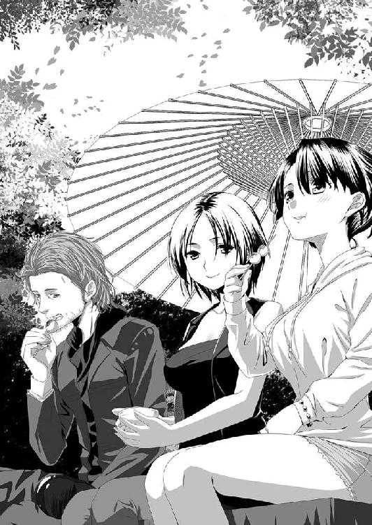
季節的にお花見の時期を過ぎており、サツキ見物も紫陽花見物にも時期が早すぎるせいだろう。客はまばらにしかおらず、難しい話をしていても何ら問題はなさそうだった。
「で、イナの推理ってなんだよ？」
前足で上手に団子を空中に放り投げてパクッと食べていたイナに、焦れた様子で卯月が質問した。
「ンああ？ ああ、まずはっと......」
そう前置きして、イナはテコテコと早苗と恵里香の前に歩いて行き、クルリッと飛び跳ねた。猫騙しのようなパチッという音はしなかったが、二人とも一瞬なにが起こったのか分からないというように、頭をフラフラさせていた。
「これでよし」
「なにしたの？」
「ああ？ 神奈は初めてか。これはオイラがしゃべっていても不思議に思わない術だな」
確かに、この状態でイナがしゃべっていたら、二人に騒がれかねない。実際、卯月がイナに質問した時も目を丸くしていたし、術を掛ける前もパニック寸前な様子だった。
「さてっと。上杉謙信っていえば〝ワシが毘沙門天だ！〟なんて豪語しちゃうような神がかった戦国大名だろ。そんなヤツが、ただここに物見遊山に来ただけなんて、おかしくねえか？」
全員が顔を見合わせた。
確かに、この土地の謂われに書かれているような絶景を楽しんだという謂われは、何となく違和感が残る。仮に関東に初めて訪れた時ならまだしも、相越同盟を結んだ時は、もう何度も三国峠を越えて関東侵攻を行った後であるし、小田原攻めを行った後である。
確かに、関東平野の広さに驚いたという時期ではないような気もする。
「つまり......どういうこと？」
「これだけ関東平野を一望できるのなら、そこに睨みを利かせる何かを埋めたっておかしくねえだろ。おっと、焼鳥がきた」
店員が焼鳥と卵焼きが盛られた皿を持ってきたために、イナは黙って行儀良くテーブルの隅っこに座り込んだ。
「確かにイナの言うとおり、関東に睨みを利かせるにはいい場所だな」
「でも、埋蔵金の伝説とかなんかないですよ。ねぇ？」
そう神奈に促されて、早苗と恵里香は腕組みして考え込んだ。
しかし、上杉埋蔵金伝説などという話はやはり聞いたことがない。だが、謙信なら睨みを利かせるための仏像などを埋めたということはあり得そうな話だった。
「学校じゃそんなこと習わないしなぁ......」
「まぁ、埋めたモノもどうせ剣とか毘沙門天の像とかそんなもんだろうけどさ。それくらいなら大々的な工事をしないでいいから簡単だし、記録にもロクに残ってねえんじゃねえかな？」
「で、それを探すために神楽を踊ってた、と？」
「ムグムグ......可能性として、ありえるだろ？」
確かにイナの言葉どおり、可能性としてはあり得た。
実際、栃木城趾でも何かをしていたところをみると、単なる宗教的な儀式というよりもナニかを探すための儀式と考えた方がよさそうだった。
「その部分ではイナの推理は当たらずとも遠からずで結論は出ずという感じか......。どちらにしても、ここから問題のナニかは発見されなかったから、他の神社なり城跡で儀式を繰り返したわけだしな」
深夜二時にここで儀式の目撃証言があり、深夜三時半頃に栃木神明宮で次の儀式が目撃されている。その次は早朝五時近くに栃木城趾公園での目撃だった。
「関連性がまるでつかめないな......。仮に謙信由来だったら、栃木城趾も関係するんだろうが......」
そんな会話が交わされる中、神奈は空中戦を見ているような気分で飛び交う会話を聞きながら、団子、焼鳥、卵焼き、そして誰かが追加で注文していたそばを食べていた。
──ハッキリ言って、ついていけないぃぃぃ......。
もう、地元民であるにもかかわらず、まったく会話について行けないのが悲しくもあり、情けなくもある。同じようにポカーンとしている婦警さんズがいるわけだが、彼女たちは道案内兼ガイドでしかなく、話についていけなくても仕方がない。
神奈は神祇官なのだから、せめてもう少し日本の歴史に詳しくなっておこうと決心した。
その後、安全運転で栃木神明宮に向かった一行は、神社に参拝してから問題の儀式痕の調査に入った。
栃木の御伊勢様として親しまれているこの神社は、第二公園という児童公園兼庭園公園に隣接する広大な敷地をもつ神社であり、栃木に生まれた子の多くはここで初宮詣していた。もちろん、神奈もここにお宮参りしていた。
同じ神明宮ということで、社殿の作り方は宮ノ森神明宮と似たような形をしている。
「御祭神は、素盞雄命様か......」
卯月の呟きに神奈は頷いた。
「そうですね......。子どもの頃は、よく隣の公園に遊びにきたりしました」
「公園......」
今も公園には子どもたちを連れた母親たちの姿が見られた。
しかし、児童公園だけあって夜間に人が訪れることはまずない。
時間も時間だったわけだし、この場所でなんらかの儀式を行うことは可能にも思えるが、周囲は民家に囲まれており、火など焚こうものならたちどころにばれてしまうだろう。
「なぜ、結界もはらずにこんな場所で儀式を行ったんだ？」
儀式が行われた場所は参道であり、その正面にはまっすぐに道が続いている。
火を焚けば住宅街はおろか、角度によっては市の大通りである例幣使街道からその様子を窺うことも可能だった。
事実、周辺住民から深夜に火が焚かれたということで消防署に通報があったわけだし、そんな危険を冒してまでやる価値があった儀式なのだろうか？
誰もの頭にその疑問は残される。
そして次に向かった栃木城趾は、儀式を行うにはもっと危険がつきまとう場所だった。
城趾とは言葉だけで、城の基礎となったらしい盛り土の山が残っている程度の城趾であり、そのほとんどは住宅によって浸食されて、どんな城がそこに建っていたのかも推測することすらできない公園になっていた。
焼け跡の痕跡がここはかなり残っていたことから、保存のための立ち入り禁止のテープが張られて今も警備の警官がついていた。
「戦闘城砦だったというお話ですね。出城って言うんですか？ ともかく、小山氏と争いがあった時は、ここに立てこもって戦うというだけの小さなお城だったという話ですけど......」
そう早苗が説明したものの、タブレットＰＣで調べた地図には周辺に城内町という地名が残されており、それなりに規模の大きな城砦だったことが地名からはうかがえた。
そして、次に儀式痕が発見された東之宮神社は事前調査で栃木城の鬼門封じの神社として勧請された神社ということが分かっていることから、少なくとも東西に二、三〇〇メートル、南北に四〇〇メートルくらいの規模の城砦があった可能性は考えられる。
「出城というには......でかい規模だな......。今は、その痕跡すら残ってないけどな」
「兵どもの夢のあとってか......。今じゃ子どもの遊び場で、夏休みにはラジオ体操が実施されるような場所だよ」
ほとんど黙ってついてきていた恵里香が珍しく口を挟んできた。
「詳しいね」
「あたしの家、すぐそこなんだよ」
聞き返した卯月に、嫌そうな顔をして恵里香が指さした。そこには一戸建ての家が建っており、百目鬼という表札までかかっていた。
「あっは......ホントだ」
「ええっ！ じゃあ、あたしと小中一緒ですね？ 先輩だったんだ！」
思わず自分の手を取ってきて喜んでいる神奈に、仕方なくあやすように手を合わせながら恵里香は卯月に向かって話を続けた。
「あんたがマトモな仕事をしているらしいっていうのを目の当たりにして、ちったぁ見直してやってんだから、さっさとこの怪現象を片付けてくれよな」
卯月は照れたようにポリポリとほっぺたをかいてから、無言で城趾公園の中の広場に残された焼け跡を確認しに走っていった。
「はっ、照れてやがるぜ」
「って......エリカさんも顔真っ赤ですよ？」
「うっせ！ あ、あたしはただ、まっとうな仕事についたあいつをほめてやっただけだ」
早苗に指摘されてエリカはそっぽを向いてしまった。
そんな女の子たちのやりとりを見て、弓削はイナと顔を見合わせてヤレヤレと肩を竦めた。
「神奈っ！ ちょっときて！」
「はいっ！」
焼け跡を調べていた卯月の叫びに、神奈は警備の警官に敬礼してテープを乗り越え、公園内の中央に入った。そこには、二本ずつ並べた薪を交互に組み合わせて正方形に重ねた護摩段にも見えるものの焼け残りがあった。
「なにか感じない？」
「なにかって......？」
「なんでもいい、感じたものを教えて。ここまでくると、神奈の直感も頼らないとなにも見つけられない可能性が出てきちゃうからね」
「あたしの......直感......」
そう求められて神奈は辺りを見回したが、別段コレというものは感じられない。
ミシャグチと出会った時のような感覚も、御霊と遭遇した時のような感覚もなかった。
それでもなにかないかと周囲を探し回った時、不自然なものを感じた──
「あ......」
「どうした？」
「鳥が......鳥の鳴き声が聞こえません」
「なんだと？」
そう、考えてみれば謙信平といい、先ほどの栃木神明宮といいあんなに木々があり、自然が残されている場所だというのに鳥の囀り声ひとつ聞こえていなかった。
ここも同じだった。
スズメの鳴き声すら聞こえない。
さらに辺りを見回した神奈は、地面のあちこちに目をやった。
「鳥だけじゃないです！ アリもいません！」
「アリも......？」
アリもいないという声が聞こえたのだろう。城趾公園の小さな堀の様子を見ていたイナと弓削も、足下にアリがいないか確認して回った。しかし、アリはおろか、虫一匹見つけることができなかった。
「鳥もいないし、虫もいない......」
「なにかの前兆現象か？」
「そういえば数日前に、ネットで野鳥の群れが大量移動しているっていう情報が流れていましたね......」
早苗は弓削が持っていたタブレットＰＣを借りてそのニュース記事を表示させた。
確かにＷｅｂの地方ニュースの欄に写真入りで情報が掲載されていた。
「写真の解像度が低くて分かりづらいが......確かにおかしいな。普段は混じって行動しない小型の鳥や中型の鳥がお構いなしに混じって動いているように見える」
一番考えられるのは地震だが、それなら栃木だけの現象にはならず、もっと大々的なニュースになるだろう。
那須岳の噴火があったとしても、那須岳は県北に位置していて県南の栃木市に大きな影響が出るとは考え難い。
やはり、この儀式のせいなのか？
神奈は、人と犬猫といった逃げ出すことのできない家畜しか住まなくなった街の空を怖々と仰ぎ見た。
雲ひとつない青い空が、なぜか神奈には恐ろしいものに感じられて仕方なかった......。
さらにクルマに乗って向かった先は東之宮神社。神奈の実家が近くにある神社だった。
位置的には栃木の中心街から文化会館に曲がる道を道なりにまっすぐ東に進んだ所にあった。途中の道筋の左手に青い天文台のような不思議なドーム型をした施療院があり、さらに神社の向かい側には県南シルバー大学の建物が建っているために道順の目印には事欠かない。
だが、そこは住宅街のただ中にある小さな神社で御祭神の御由緒すらも書かれておらず、常駐の神主もいない社だった。ただし忘れ去られた神社というわけではなく、町内での夏祭りも欠かさず行われ、東之宮さんの愛称で親しまれており、この地域の産土神としての役割を果たし続けている神社といえた。
ちなみに、この東之宮神社は元々は同じ栃木市の皆川城内町にあった神社から、栃木城を建築するさいに鬼門封じのために勧請されてきた神社と伝えられている。
ここの境内は通りからの参道が途中で九〇度曲がっていることから目撃者がなく、事件が発生して市内の神社仏閣を警察がくまなく調査した結果、儀式痕が発見された場所だった。
「ここはあたしが小学生の頃、ラジオ体操してたんですよ」
「ここでねぇ......」
参拝の後で話し出した神奈の言葉に、弓削がしみじみとした調子で応じた。
植木は丁寧に刈り込まれており、小さいながらも大切にされ、信仰が生きている神社であることが見えた。
「なにか感じるものはあるかい？」
「なにかですか？」
栃木城趾でのことがあったせいだろう。弓削に訊ねられて神奈は周囲を見回した。
しかし、コレという感触はなかった......。
ただ、なんとなく力をもらえるような......そんな気配はあった。
「パワースポット的な感じはしますけど......」
そう呟いた時、神奈の耳がなにかを捕らえた。
小さな音──
声なのかもしれない。何枚もの見えない壁の向こうから語りかけられているような、そんな聞き取りづらい音だった。
「なんだろ......？」
神奈の身体がふらつき、鳥居を調べていた卯月があわてて支えた。
「どうかしたの？」
「なにか......語られているような気がして......」
「語り？ どんな？」
耳ではなく、もっと直接的に脳に語りかけられているような音。
それは聞き取りづらい音だった。
なんとかその言葉をつかもうとするが寸前で取り逃がしてしまうような、そんな焦れったい思いを神奈は繰り返し、言葉の断片のみをつかみ取っていった。
「警告されているような......そんな言葉です......」
「警告？」
「東......キケン......帰れ......。そんな言葉です」
「この東ってなにがあるの？」
振り返った卯月が早苗に訊ねると、早苗はあわてて手にしていたメモ用のボードを見た。
「え、えと、残りの事件現場のふたつがあります。ほぼ真東に下野国庁遺跡。北東の方角に今泉神社があります」
「どっちだ？」
「分かりません......。もう、声は......聞こえません」
クラクラする頭を振って自力で立ち上がった神奈は、もう一度社殿を仰ぎ見た。
大きな、自分を見守ってくれているような力を感じつつも、社殿はなにも神奈には語りかけてこない。
明らかに大きい栃木神明宮では神奈はなにも感じなかったのに、なぜここで言葉のようなものを感じたのか？ その疑問が残るが、それよりも東というキーワードが弓削も卯月も気になるところだった。
「どうする。どちらかに絞るか？」
「どうせ行く気だったんだから、どっちも行くしかないんじゃない？」
「今泉神社はすぐそばですよ。クルマで五分とかかりません」
「だったら行こう。行けるか、神奈？」
「はい......」
後ろ髪を引かれるような思いをしながら、神奈はクルマに乗って移動した。
続く今泉神社も静謐な空気が境内を満たしている神社であり、境内の中庭の中央につけられた焼け焦げた儀式痕が風景を台無しにする無粋な存在となっていた。
「でかい中庭だな......」
庭園というほどに整備された庭ではないが、それでも草花や木々の枝打ちなどの最低限の手入れがされて、植物を含めたすべての生き物に均等に神の寵愛を与えられた庭。そんな不思議なバランスの上にできている庭だった。
その庭の中央に焼け焦げた儀式痕が残っていた。
その周囲の草は焼かれ、踏み倒されて庭の景色を台無しにしていた。
「ひどいもんだね......」
「しかし、草が踏み倒されたから分かることもあるな」
イナを神奈に預けた弓削は、草が踏み倒された場所にかがみ込んで地面を調べはじめた。
地面が柔らかい土なのが幸いして、そこには足跡が残されていた。
「足跡の形状から察すると、三人から四人の巫女がいるな」
「いったいなんの儀式なわけ？」
こんな護摩段のような火を囲んで舞いを舞う神楽など卯月は聞いたことがない。もちろん、日本神道に限ったことであり、新々興宗教などに至ればそんなごちゃ混ぜの儀式はありそうだった。
だが、火を焚いて舞いを舞う以外の痕跡がひとつもない。
火に札をくべることもされていないらしく、ただ、火を焚いて舞いを舞っただけ。それも、市内の神社や城跡といった共通点もなにもない場所で。
「火を使い、舞いを舞う。この手の魔術・妖術の類でいうなら、ナニかを召喚する儀式に関係していたりするな」
「もしかして、ミシャグチ君のような昔の神様を召喚していたって言うんですか？」
また、あの御霊に取り憑かれた奴らがなにかを企て、昔の神々を歪めて使おうとしているのではないか？ そんな不安が神奈を襲った。
「分からないが、その可能性は十分にあるな。だが、ここから得られた情報じゃ、断言できない」
また、次の事件現場に行くしかなかった。
しかもそこが最後の現場であり、そこで手がかりが見つからなければ、この調査行自体が無駄以外の何物でもなくなってしまう。
そんな不安をよそに、神奈たちを乗せたクルマは最後の手がかりの場所である下野国庁遺跡に向かった。
下野国庁遺跡は、奈良時代から平安時代前期にかけて下野国を治めていた朝廷の役所遺跡であり、史跡公園となっている場所だった。現在は前殿のみが復元され、朱塗りの柱に白壁という奈良時代の建物の趣を今に伝えている。
なぜそんな中途半端な復元を行ったのかだが、なぜかその国庁の正殿の跡地に府津之宮神社という神社が建立されてしまっているせいだった。しかもその神社は古風な習俗・祭儀を残す日本の民俗学的に貴重な神社のために、無形民俗文化財に指定されていたために移動することもできない。そのために前殿のみという不思議な復元がなされている。
問題は、なぜそんな神社が国庁の跡地に建立されたのかということなのだが、それは未だに明らかにされていない。
クルマから降りた神奈がこの史跡公園の入口に立った時、なにか怖気のようなものを感じて思わず自分の身体を抱きかかえた。
「ぶるるるっ」
同時に、神奈の肩に乗っていたイナも毛を逆立てて大きく身震いしていた。
「大丈夫？」
「神奈こそ、さっき震えてたじゃねえか？」
「なんだか......寒い」
「吹きさらしのど真ん中に建てられているからな......」
確かに、この国庁遺跡の周りは田畑であり、田植えの前準備をしている農作業風景があちこちに見られた。
「そういう問題じゃない気がするんだけど......」
「やっぱり......そうか？」
なにかイヤな予感がする......。
二人（？）の第六感がそう告げている気がした。
それもそのはず、ここはあの仮面の破片が見つかった場所だった。
「ねぇ......空になにか光ってるモノが見えない？」
「光ってるもの？ 見えないな......。ゴミでも反射してたか？」
「うぅん。蛍みたいな......黄色く光ってるなにか......」
「おい、説明始まったぞ」
「え？ あ、うん......」
神奈は空を気にしつつ早苗の説明に耳を傾けた。
「国庁のすぐ後ろにある、府津之宮神社でアレは発見されました。ただ、儀式痕はひとつも見つかっていません」
早苗の説明に全員の視線が府津之宮神社に注がれた。
「府津之宮神社の参道に例の血がついた仮面のカケラが落ちている以外には、なにひとつ発見されていません。面白いことに、神社の境内は掃き清められたかのように落ち葉ひとつなくキレイになっていたそうです」
他と異なり掃き清めたということは、そこで求めるモノを得たということになる。
だからこそ、その痕跡などを隠すために掃いて消してしまったのではないか？
「神奈。武器の準備をしておきな」
「はいっ」
弓削がクルマのトランクから八握剣を取り出し、神奈と卯月に投げる。そして、自分の腰にもそれを差した。
「なんか、剣は和装じゃねえとしまらねえな」
「そんなボヤキはいいから、あたしの長巻も取ってよ」
「へいへい」
クルマの車内に助手席から後席にかけて斜めに渡していた長巻を弓削は丁寧に取り出し、卯月に投げ渡した。
「あんたたちの職業って......いったい......」
まるでヤクザか武士の出入りというその様子に、恵里香が怪訝そうな顔をして卯月を睨んだ。
「あたしらの仕事は、日の丸背負った妖怪退治屋なんだよ。ホラ」
卯月が恵里香に放り投げた物は自分の身分証だった。宮内庁の文字と菊の御紋が証明する彼女の身分。
一瞬、偽造という言葉が恵里香の脳裏をよぎったが、普段見慣れている警察官の身分証と書いてある文字が違う以外に異なる部分はない。しかも、こんなものを偽造したところで意味はないし、なによりも自分たち警察を動かす組織なのだから、偽造などするはずもないように思えた。
「ということなんで、二人は境内に入らないようにして欲しいんすよ」
「ここで、なにがあるか見てろってか？」
「そうなるっすね。じゃあ、卯月、それに嬢ちゃ......ん？」
そう呼びかけかけた時、弓削の表情が強ばった。
「おいっ！」
呼びかけられた神奈は、空を見上げて凍り付いた彫像のように身動きひとつせずに立ったままだった。
参
そこで、空を舞う黄色い光を放つ、蛍のようなものを神奈は見つめていたはずだった。
肩に乗っているはずのイナがいなくなっていたので空から地上に目線を戻すと、周囲は薄いベールのような霧が立ちこめていた。
「ここは......」
神奈が一人立っている場所は、あの府津之宮神社の参道前だった。だが、霧のせいですぐ脇にあるはずの国庁の前殿も見えない。
神社を包む木々と境内、そして境内を区切る鳥居と社殿──
それだけが神奈の視界にあるものだった。
そして、耳が痛くなるほどの静寂が世界を支配していた。
「卯月さーん！ 弓削さーん！ どこですかぁ？」
叫んでも声は霧に吸い込まれるように響かない。
社殿に背中を向けるのはどこか恐ろしさを感じたが、周囲を見ずにはいられなかった。
しかし、背後は真っ白な霧に包まれていて、なにひとつ見ることができない。いや、建物などないのではと思うくらい、霧の中に物の存在を感じ取ることができなかった。
「卯月さーん！」
再び叫んだ時、フッ...と人の気配を感じて安堵しながら振り返った神奈の目先に、真っ黒な少女がいて驚き、思わず後ずさった。
「悲鳴を上げなかったことだけは感心ですね」
真っ黒な少女と言ったが、正しくは黒装束の少女だった。
昔のお姫様か市松人形を思い起こさせる髪型をした一〇歳くらいの少女。古風な黒いセーラー服を着た彼女は、その服とは対照的に雪のような真っ白な肌をしていた。
「そなたがくるのを妾は待っていました。一度、話してみたいと思っていたのです」
幼い姿と声音であるにもかかわらず、しゃべり方はどこか古風で妙に艶のある話し方をしていた。
「あたしを？ なんで？」
「五祝神奈。妾とそなたは表裏の存在......」
「表裏って......あたしたち、全然姿も違うじゃない！」
神奈の反論に少女は目を丸くし、口元を手で押さえてくくく...と声を立てずに笑った。
「幼い精神のそなたと表裏の存在とは、妾としても不服の限りです......」
笑い終えた少女は、まるで視線だけで呪い殺せるような恐ろしい眼光を眼にたたえて神奈を睨みつけた。
「そなたはあらゆる神に愛されし木花咲耶と同じもの。妾はそなたに夢を無残に砕かれ引き合いに出される陰なる者。だが、今宵からはそなたが夢を無残に砕かれし者となる」
「もぅ！ ワケ分かんないこと難しく並べ立てないでよ！ もっと言いたいことはシンプルに言ってよね！ あたし、自慢じゃないけどバカなんだから！」
反論されるとは思ってもみなかったのだろう。少女は一瞬目を丸くして驚き、また口元を押さえてくくく...と笑った。
「バカの自覚があるならなお悦しや......。その足りない頭を必死に使って、妾と相対しなさい。すでに、妾は将門が欲した物を手にしたのですからね」
「もぅ！ まったくワケ分かんないよ！ ちゃんと日本語で話してよ！ あんた上から目線で物を言いすぎですって先生に通信簿に書かれなかったの！ あたしは栃木に帰ってきてからっていうもの、右から左にワケ分かんない言葉を流されて、いい加減ウンザリしてるんだから！ さっきも言ったとおり、シンプルに話をしなさいよ！」
必死にまくし立てて肩で息をしながら、神奈も負けじと少女を睨みつけた。
「栃木は好き？」
「好きよ！ 自分の産まれた土地を嫌いになるような不幸な目にはあっていないもの！」
「ふん......。幸せな娘ですこと......。ほんに妾とは真逆の娘だこと......」
そして、少女はその年頃に似つかわしくない艶然とした笑みを浮かべた。
「ならば最初の不幸はそなたの大好きな場所が、〝禍つ黒神〟に呑まれるところから始まるのですね。ほんに、悦しみだこと......」
「なっ......。ちょ、ちょっとなに言ってんのよ！」
「護りたいのなら戦いなさい。無駄なあがきをすればするほど、妾の溜飲は下がるというもの。憎き五祝の娘よ、こ...」
バチッ！
その少女の言葉の途中で目の前に稲妻が走り、一瞬にして霧が晴れた青空が戻っていた。
「神奈！ 神奈っ、しっかりして！ 神奈！」
目の前には今にも泣きそうな顔をした卯月が神奈の肩をつかんで揺さぶっており、彼女の頭の上には同じく心配顔のイナが乗っていた。
「卯月......さん？ えええええええええええええええっ!!」
思わず叫んだ神奈の肩から手を離した卯月は顔をしかめて自分の耳を押さえた。
「うっせええっ！ 目の前に人がいるのに叫ぶな！」
「卯月だって今叫んでるよぉ......」
二人の大声で目を回しかけたイナは、フラフラしながらも神奈の肩に飛び乗った。
「だ、だって......。ここは......女の子は？」
「嬢ちゃん。まずは落ち着いてなにがあったか話してくれないか？ お前さん、さっきまで凍り付いたような感じで、ずっと空を見上げていたんだぜ？」
「そうそう。仕方ないから、オイラが猫騙しをかけて神奈の目を覚まさせたんだ。感謝しろよ」
「ずっと......空を？」
神奈はハッとして空を見上げ、そして目を府津之宮神社に落とし、崩れ落ちるように座り込んだ。
「夢じゃなかったらどうしよう！」
「お、落ち着け嬢ちゃん！ なにを見た？ ゆっくりでいい、教えてくれ」
「深呼吸しろ深呼吸！ あたしの後輩なら、それで落ち着け！」
座り込んだ自分を護るように囲んだ卯月や弓削、恵里香に早苗。それぞれの顔を見回した神奈は、恵里香の薦めどおりに深い深呼吸を三回繰り返した。
そして気を落ち着けた神奈は、空に蛍のような黄色い光を見つけ、それを見ていたら知らない世界に引きずり込まれていたこと。そして真っ黒いセーラー服を着た少女と出会い、その子に栃木が〝禍つ黒神〟に呑まれるという話をされたことなど、覚えている限りのことをすべて話した。
「〝マガツクロカミ〟って......なんだ？」
恵里香の質問に、弓削も卯月もそんな名前は聞いたこともないので答えられなかった。
「もしかしたら、将門が欲していたものの名前が、そんなものだったという話を聞いたことがあります」
早苗は自分の記憶の深い部分を探るような表情を浮かべ、ポツリポツリと語りはじめた。
「そもそも、この下野国庁を平将門が攻めた理由というのが曖昧なままなんです。当時、下野の国庁にはロクに軍備はなく、本来攻めるべき場所は上野の国庁でした。だけど、将門は下野の国庁を攻めて、その後に上野の国庁を攻めたのです」
「ちょ、ちょっと待て。歴史音痴のあたしに分かるように説明してくれ」
「もぅ。エリカさんは何でも学問は音痴ですね。平将門って知ってます？」
「うっさいな......それくらい知ってるよ。あれだろ？ 帝都を呪った怨霊だろ？」
「..................」
恵里香の回答に、場がシーンと凍り付いた。
かわいそうなモノを見る目で恵里香を見つめてから、仕方なさそうに早苗が説明をはじめた。
「はぁ......。平将門という常陸の武将が朝廷に反旗を翻して関東に独立国を作ろうとしたんです。そして、新皇を名乗り一時期は凄い力を持ったんですけど、討ち取られてしまって反乱は終わったんです。だけど、彼が反乱を起こしたことで、次第に世界は武家社会へと変わっていくんです」
「なるほど......。で、そこになんでこの国庁が出てくるんだ？」
「それを今から説明します！」
早苗の説明によると、常陸国庁を蹂躙して朝廷に反旗を翻した将門は次に下野国庁を襲い、その後に上野国庁を襲った。その時、下野国庁にはロクに兵備がなく、ほとんど無血開城に等しい状態だったという。
なぜ、そんな戦略拠点にもならない場所を襲ったのか？
それは、この場所に〝禍つ黒神〟とされる怪物が眠っており、それを将門は従わせて使いたかったからだという伝説があったのだという。
「もちろん、そんな話は眉唾だと思ってましたよ。でも、それを教えたのは八幡大菩薩の遣いを名乗る巫女で、その巫女はもう一度現れて神託を与え、将門に新皇を名乗らせるんです」
「菩薩の巫女って胡散臭いな」
卯月の感想に早苗は頷いた。
「当時の武士には八幡大菩薩は重要だったから、多分そう名乗っただけなんですよ。で、一説にはその巫女は幼い娘だったって話もあって......」
その言葉が神奈の頭の中で、あのセーラー服を着た少女と結びついた。
「あの子が......その巫女？」
「分かりません。でもその後〝禍つ黒神〟なんてものはドコにも出てこないんですよ。だから、ただのトンデモ文献だと思っていたんですけど。コレって高校時代に見つけた文献でして......」
マシンガンのように話を始めようとした早苗の口を恵里香は押さえてため息をついた。
「ストーップ！ ストップ！ ったく。話し出したら止まらないんだから。しかし、この土地の歴史オタクがいてくれたことで助かったって感じだね」
「本当にありがとう。この情報、課長に調べてもらって裏をと......」
その瞬間、激しい四本の土煙が府津之宮神社の境内で跳ね上がった。
「なにっ!?」
それは、黒褐色のドロドロしたゲル状の物質だった。
まるで火口から流れ出る溶岩のように、ドロドロとそれは境内から止めどなく噴き出し、流れ広がりはじめた。
てけり・り......てけり・り......
どこに口があるのか分からないが、それはそんな鳴き声を漏らしていた。
甲高く、まるで鳥のように響く音を。
そしてボコボコと常に泡立っているその黒褐色の身体の中には、時折、眼球と思しきものが浮かび上がってはギロリとこちらを見据え、そして体内にまた消えていく。
「これが......〝禍つ黒神〟？」
「くっそ！ でかくても弓を持ってくればよかった！ 神奈！ ヘタに近づき過ぎるなよ！ あたしらが着ているのは簡略衣だってこと、忘れるな！」
「はいっ！」
神奈は八握剣を、卯月は長巻を構えて攻める場所を見据えた。
だが、急所と思しき場所はその時々浮かび上がる眼球くらいしか見あたらない。そもそも、こんなヘドロかアメーバーのような塊を相手にどうやって戦えばいいのか見当もつかなかった。
「二人ともまだ攻めるなよ！ イナはそこの二人を護ってろ」
「了解！」
イナが早苗と恵里香の足下に跳んでいくのを確認してから、弓削はいくつかの符を懐から抜き出して空中に放り投げた。
「祓い給い清め給え、護り給い、幸え給え！」
略拝詞を唱え二度柏手を打つとその符が空中で燃え上がり一瞬にして灰と化した。その灰が卯月と神奈に降りかかった途端、二人の身体の周囲の空気が微妙に暖かくなった気がした。
「おまえらの身体の周りに結界を張った。ただし、変なモノに触れていられる時間は一〇秒だ。それ以上は保証しねえ！」
「了解！ いくよ！」
「はいっ！」
卯月は真っ正面から参道を走りソレに近づく。
神奈は跳んで木々を足場に跳び回って牽制と攪乱を行う。
二人がかりで戦う時にはこうすると決めていたフォーメーションだった。
しかし、その泡立つ黒褐色の身体から無数のミミズのような触手が飛び出し、ソレは二人を同時に攻撃してきた。
「このっ！」
卯月は長巻を横薙ぎに振るって参道を伸びてきたその触手を斬り落とした。
斬り落とされた触手はベシャッと音を立ててすぐさま液化してしまう。しかし、残った根本はすぐさま再生し、新たな触手を繰り出してくる。
上空にいた神奈も同じであり、卯月と違って足場が限られている分だけ触手の方が優勢だった。
「ミシャグチ君！」
神奈の叫びに応じて空気が歪みそこから姿なき蛇が、神奈の下から襲いかかってきた触手の群れを喰いちぎってゆく。しかし、すぐさま新たな触手が現れてくる。
「くそっ！ キリがねえ！」
卯月は長巻を風車のように回転させてジリジリとソレに近づくが、神奈は剣一本でありそんな真似はできない。ミシャグチの助けを借りるも、ミシャグチは七丈半（約二二・七メートル）という巨体故に小回りが利かない。自然と神奈が追い詰められていった。
「くそっ！」
弓削はボサボサの髪を結っていた黒い紐を引きちぎり、それを神奈の元に投げつけた。
すると紐は蔓のように木々を伝って空中に広がり、山ぶどうのような実をつけた。その瞬間、神奈に向かっていた十数本の触手が方向を変えてその実に喰らいついた。
続いて弓削は革ジャンの袖から竹串のようなものを数本引き抜き、ソレを地面に突き立てた。
「ひ・ふ・み・よ・い・む・な・や・ここの・たり！ ふるへ！ ゆらゆらとふるへ！」
そう祝詞を唱え、二回柏手を打つ。
直後、地面から直径二〇センチはありそうな竹槍が突き出し、山ぶどうの実に喰らいついている触手を串刺しにした。
「弓削さん、ありがと！」
「いえいえ、どういたしまして！ でも、もうネタ切れだぞ！ 半月は使え......ウソだろ......」
触手は自分を串刺しにした竹槍を浸食し、自分の体内に取り込んでいく。
山ぶどうを食べた分、その身体はほんの少し膨れ上がった気もした。
「冗談だろ......」
ソレが現れた時は、直径は五メートルほどだっただろうか？ 触手があちこちに伸ばされているので正確な大きさはつかめないが、弓削がその姿を見た時はそれくらいの大きさだった。
だが、今はどうか？
弓削の目には、一回り、あるいは二回りほど大きくなっているようにも見えた。
てけり・り......てけり・り......
地面から突き出した竹槍を同化させたソレの配置は、本体に斬りかかろうと少しずつ前進する卯月を取り囲んでいる状況であり、このまま卯月が進めば四方から攻撃されることになる。
今、それが分かっているのは、高い木の上にいる神奈しかいない。
「ミシャグチ君！ 卯月さんを護って！」
ミシャグチはゴウッと風音と激しく羽ばたく音を立てて上空に昇り、そこから一気に降りて、巨大な倒木のように卯月に襲いかかった黒褐色の身体を引き裂いた。
「くそっ！ 神奈、下がれっ！ そこにいたらお前もやられる！」
「でもっ！」
卯月に反論しかけた神奈は自分が足場にしている木に触手が絡みつき、それが徐々にこの化物に同化しつつあることに気づいた。
あわてて他の木に飛び移り、追ってくる触手を剣で断ち切っていく。しかし、斬るそばから触手が現れてキリがない。卯月に従おうにも、ヘタに跳ぶと空中で絡まれかねない勢いだった。
「こいつは、同化した分だけどんどん巨大になっていくぞ！」
それはすべてを呑み込み、砕き、取り込もうとする形なき存在だった。まるでこの世にあるあらゆる物に憎しみを抱いているかのように、形あるものをすべて呑み込んでいく。
不定形の化物──
神奈たちは、その怪物の名前が古事記の中に刻まれていることに気づいた。
「こいつ......蛭子？」
恐るべき伊邪那岐夫妻の最初の落とし子。
両親に愛されず、あまつさえ人の姿をしていないという理由だけで捨てられた化物。
父親が作り出した世界を憎んでいても当然の存在だった。
「神奈！ 無事か！」
ミシャグチに救われたとはいえ、卯月に向かって新たに無数の触手がさらに襲いかかってきてその視界を奪いつつあった。もうすでに卯月の位置から神奈の姿は見えなくなっていた。まるで蜘蛛の巣のように無数の触手が張り巡らされ、どんどん視界が悪くなっていく。なによりも、あの『てけり・り......』という鳴き声が四方から聞こえてきて、卯月の脳髄を溶かして思考を妨げようとしているようにも思えた。
「無事です！ 卯月さんこそ逃げてください！ あたしには、ミシャグチ君がいます！」
神奈の声だけは卯月に聞こえる。
だが、逃げようにもすでに卯月の退路も断たれつつあった。
「くっそ！」
どう切り崩そうかとした矢先、いきなり卯月の退路を断っていた黒褐色の塊に穴が穿たれた。
「そらっ！ 助けにきたぜ！」
「弓削の旦那......。カッコつけすぎだよ！」
「まぁな。準備に手間取ってスマンね。フンッ！」
そう意気込むや、弓削は腕と腕をこすり合わせるようにしてそこから炎を引き出した。
「そらよっ！」
火が周囲に放たれるや、黒褐色の燃料のように燃え上がり溶けて蒸発していった。
「貴様の母親も焦がした火之迦具土の炎だぜ！ たんと喰らいなっ！ そら、逃げるぞ」
火が切り開いた道を卯月と弓削は駆け抜けた。だが、その背後を無数の触手が追いかけてくる。
「追尾対策は、神話の時代からコレに限るってな！」
桃の木で作られた木の板を取り出した。そこには伊邪那岐を黄泉比良坂で救った意富加牟豆美の名前が書かれていた。
弓削は急に立ち止まり向きを変えるや、それを地面に突き刺した。
すると板が弾け、追ってきた触手の動きが止まった。
「こいつも一〇秒だ。ついでに次に使えるのは半年後だぞ」
「それだけあれば、逃げ切れる！」
二人は参道から転がり出るように境内の外に飛び出した。
おかしなことに、怪物は今のところ境内の外には一歩として出てこようとしなかった。
つまり、境内が塞神の役目を果たしていることになる。しかし肝心な神社の境内も浸食されてその境の意味を成さなくなりつつあった。
この化物が外に出てくるのは時間の問題に思えた。
だが、今は境内の外は安全圏になっている。
それを確認した卯月は、地べたに座り込んだ。
「弓削の旦那......ありがとう。って、その腕」
同じように隣に座り込んだ弓削の腕はひどい火傷を負っており、着ていた革ジャンの袖も消失していた。
「あの術を使うと自分の身体もチコッと燃えちまうんだわ」
「そんな不完全な巫術を使ってまで助けてくれるなんて、まるで神奈と......」
二人はハッとして境内を振り返った。
目の前にある一二、三メートル四方はありそうな境内が、ほとんど触手で覆われていた。
「そんな......神奈っ！」
「待て、卯月！」
触手に覆われた境内に飛び込もうとした卯月を弓削は必死で止めた。
「お前が死んだら前衛がいなくなっちまうんだよ！」
「でも、神奈が！」
その頃、神奈は隙を見てさらに別の樹上に飛び移り、符で盾を作って触手の猛攻に耐えていた。ミシャグチを呼んでなんとか突破口を見出そうとしたが、ヘタに呼びつけるとこの化物に取り込まれそうな気がして空を飛ばせて待機させたままにしていた。
実際、この化物もミシャグチの攻撃を警戒しているのだろう。すでに空は細かい触手の網で覆われていた。
「どうしよう......」
次第にこの化物の動きが神奈には分かるようになってきていた。
中空のカゴのような形態を取り、一気に神奈を取り込もうとしている。三六〇度から抑え込まれては、どんな巫術も武器も通用しないことをこの化物は知っているのだろう。
触手の隙間が徐々に埋められ。周囲を照らす日差しが覆われて薄暗くなってきた時だった。
下の方に、なにかボンヤリと白色発光するものを見つけた。
剣だ──
触手を斬りすぎて刃がボロボロになりつつある神奈の八握剣よりも若干長そうに見える直剣が、この黒褐色の化物の背中に突き刺さっていた。
少なくとも、この化物の背中に突き刺さっていながらも同化していないところをみると、今手にしている八握剣よりも強い剣に見えた。
「化物に触れていられる時間は一〇秒って言ってたよね......」
果たして、今までこの触手に接触されてきたのか計りようもないが、今は弓削の言葉を信じるしかなかった。
「いっけええええっ！」
半ば怪物に同化されつつある最後の木を蹴って、神奈はその剣めがけて跳んだ。
ジュボッという音と共に剣の近くに飛び降りた神奈は、重く抵抗を感じる黒褐色の身体を蹴り上げるようにして進んだ。足に触れている部分がシュワシュワと音を立てており、弓削が張ってくれた結界が焼かれているのが伝わってくる。
なんとか剣にたどり着いた時、足にヒリヒリした軽度の火傷を負っているような感触が伝わってきた。
「ヌメヌメして......足が気持ち悪い。このっ、えいっ......って？」
突き刺さっている剣を引き抜こうと力を込めたが、スッと簡単に引き抜けてしまったために神奈は拍子抜けして思わず手にした剣を見つめた。
逆刃の剣だった。その軽さは八握剣の半分以下くらい──そう、五〇〇のペットボトルを持っているような気分だった。
「まずは、あたしの周囲をっ！」
剣をブンッと振り回した瞬間、その軌跡のままに白色発光する三日月のような光りが飛んで周囲の触手を一気に切り裂いた。
「ええっ！ って、これならイケるでしょ！」
そう叫びざまに、神奈はタコの頭のように盛り上がっていた部分に向かってその刃を叩きつけた。
ダーンッ！ というような激しい雷鳴が轟き、天空から真一文字に落雷が境内を覆っていた怪物の触手に突き立った。その直後、触手は一気に縮退し、境内の真ん中にブヨンッとした直径五メートルほどの半球状の物体が残された。
「こ、この剣......すっごい」
境内を覆っていた触手はすべて消え去ったが、同時に境内を覆っていた鎮守の森はすべてこの怪物に同化されて消え去っていた。残っているのは、この府津之宮神社の神殿のみ。
境内の外には、ポカンとした顔をした卯月と弓削の姿が確認できた。
「あは......。無事だったんだ......」
そうホッとした神奈が急速に脱力感を感じた時だった。
手にしていた剣から、ピキピキという嫌な音を感じ取った。
「えええええええええっ！ ちょ、ちょっと待って！ 待ってよ！」
刃に亀裂がビキビキと走り、やがて刃は雲母が剥離していくようにボロボロと崩れ落ちた。
「ちょっと待ってよおおおおおおおおおっ！」
神奈の手に残った物は、その剣の柄のみだった。
「どうしよぅ......」
その場でオロオロするそんな神奈に、駆け寄ってきた卯月が抱きついた。
「よかった！ 無事でよかった！」
「卯月さん......。あたし、この剣、壊しちゃった......」
「え？ なに......それ......」
半ベソかいて差し出してきた神奈の手の中にある見たこともない剣の柄と神奈を交互に見比べた。そして、その脇にある黒褐色の半球体にも。
それは、明らかにまだ生きていた。
てけり・り......てけり・り......
そう小さな声で鳴き続けており、再活動までの体力を貯めているのだということが推察できた。
「ともかく、みんなの所へ戻ろう」
剣に力を吸い取られきったかのように異様に疲れ切っている様子の神奈を支えながら、卯月は弓削たちの待つ場所にゆっくりと戻った。
「卯月、アイツはどうなったの？ あの化物は死んだの？」
恐ろしい戦いを目の当たりにしていた恵里香は、卯月の肩をつかんで興奮気味に訊ねてきた。
「まだよ。それよりも、あたしらを大急ぎで市役所に連れて行って！ これからがきっと、戦いの本番になるから！」
「そんな......そんなのって......」
これからが戦いの本番になる。
先ほどまで目の前で繰り広げられていたおぞましい相手との戦い以上のものなど、戦争すら知らない恵里香にはまったく想像もつかない世界だった。
壱
けたたましいサイレンを鳴らして可及的速やかに（つまり、法定速度など無視しまくって）市役所に戻った神奈たちは、栃木市警、栃木消防署の重役連中に緊急招集をかけることとなった。もちろん、あらゆる仕事よりも最優先事項となり、市長と助役などもその会議に列席することとなる。
招集をかけている間に卯月は一課に残っていた源に連絡を取り、撮影した怪物の画像データを送付していた。
「怪物......ですと？」
訳も分からずに招集された栃木市長が最初にもらした言葉はソレだった。
誰もが顔を見合わせ、そして失笑した。
それは卯月たちがずっと目の当たりにしてきた、一般人のごく当たり前の反応だった。
それが分かっているからこそ、卯月も弓削もその反応に失望などしなかった。
「現状では名前が分からないために〝怪物〟と言わせていただくしかないんですよ」
弓削が落ち着いた調子で説明しながら、撮影してきた黒褐色の怪物の映像をスクリーンに映し出した。
神奈や卯月が黒褐色の怪物と戦う映像──
そのドロドロとしたヘドロとも軟泥とも表現のしようのない外見でありながら、ドロドロの体表面を硬質化して鋭利なトゲのようなものに変化させて攻撃してくるその姿は、穢れきった〝汚穢〟という言葉がピッタリな印象を見る者に与えた。
警察署長はその映像を見て凍り付き、同席していた市議会議員の中には口を押さえてあわてて廊下に飛び出した者もいた。
「これは、なんですか!?」
青ざめた顔をしつつも落ち着いた声を出したのは、女性の市議会議員議長だった。
「先ほどもご説明しましたが〝怪物〟と言うしかない......そう、古代の化物です」
「これは......ドコに？」
「下野国庁の跡地の地下です。これを抑えていた封を何者かが解除したために現代に甦り、活動を再開しようとしているということです。我々は、暫定でこれを〝禍つ黒神〟あるいは〝蛭子〟と呼んでおりますが......詳しい情報が届き次第、確定名称を付ける予定です」
「ヒルコ......それは......その、なにかね？」
市議会議員の中から声を上げたものがいた。
「日本神話の中に登場する伊邪那岐の最初の子どもです。不具であった、あるいは人の姿をしていなかったがために捨てられたとされ、伊邪那美の長子でありながら神にも子どもとしても認知されなかった存在です」
人の姿をしていなかった──
その説明に、居合わせた者たちは思わず納得して頷いた。
この汚穢なる泥のような存在を自分の子どもとして認めることなどできるはずがない。
「この映像を見る限り、怪物を倒せたのではないのですか？」
議長の質問に弓削は首を横に振った。
「残念ながら、這い出そうするのを抑えただけであり、また力を取り戻せば動き出すことは確実だと思われます」
「それは......いつ？」
「早ければ半日後。遅くとも数日以内には......」
会議室がざわめいた。
そして、そのざわめきに拍車をかける報告が卯月のスマートフォンに届いた。
「今、私どもの上司である源より、直接皆さんにご報告させていただきます」
弓削は卯月からスマートフォンを受け取り、それを会場のマイクとスピーカーに接続した。
『初めまして、私はそこにいる神祇官たちの上司であります、宮内庁式部寮に属する神祇官の源です。電話によるご挨拶で失礼させていただきます』
そう前置きしてから、源は説明を開始した。
『私の部下が下野国庁遺跡で発見しましたその怪物は、今から千年以上もの昔、飛鳥時代かその国庁が健在だった頃の奈良時代に活動していたと思われる〝黒く蠢くもの〟という名称の怪物です』
「先ほどこの方たちから説明があった、ヒルコではない......ということですか？」
市長の質問に源は答えた。
『断定はできませんが、記録上ではそう記されている怪物です。当時の神官や武士たちが総力を尽くして戦ったという記録がいくつか残されており、国庁跡地に出現したソレは、その生き残りだと思われます。最も的確に特徴を述べたと思われる記録には、こう記されています。
それはあらゆるものを退ける。あらゆるものを食い尽くし、あらゆるものを破壊し、あらゆるものを飲み込み、あらゆるものを取り込み、限りなく巨大化していく。止まる所を知らずに......』
いくつか......という表現。そして、それに続く記録に会場はさらにざわついた。
『なお、ソレは日本固有の怪物ではありません。防衛省をとおして米軍が情報を提供してくれましたが、同種のモノが二〇世紀末にアメリカにも出現し、ひとつの町を地図上から消滅させたということです』
「都市が......消滅？」
『はい。アメリカの州軍だけでは対応しきれず、陸軍ならびに空軍まで出動させて、かろうじて撃退したということでした。数千人の死傷者という甚大な被害を出したと報告されているそうです』
数千人規模の死傷者と聞いて、誰もが色めき立った。
「じ、自衛隊の出動だろう！」
『当然、そうなると思います。我々の方からも防衛省に治安出動の依頼を行いますが、栃木市長の方からも県知事への申請を行っていただきたく思います』
「心得ました。早急に連絡いたしましょう」
『さらに、万が一の事態に備えて、周辺住民への避難勧告を行ってください。それと対策本部の設立を要請いたします！』
その後、様々な伝達が行われて、警察署長や消防署長などが急ぎ足で退出していった。
間近に危険が迫っているせいもあるのかもしれないし、国家という巨大な規模ではないせいもあるかもしれない。警察署や消防署をはじめ、役所関係の動きは迅速だった。
まず対策本部の設置だが、駐車場といざという時のヘリの離発着が行える場所。そして現場への移動距離の問題から、市立南中学校に隣接する市の文化会館が選ばれた。
中学校の校庭にヘリを離発着させるべく、校庭は臨時のヘリポートとなり、中学校の校舎は下野国庁遺跡付近の住人の一時避難先として指定された。
文化会館の駐車場には臨時のテントがいくつも建てられ、県警の応援が来るまでの間に市警は市内の交差点各所に警察官を派し、交通整理に乗り出した。
その間、宮内庁長官から協力要請を受けた警察庁は、栃木県に隣接接する埼玉県と茨城県の両県警に機動隊の協力派遣を要請した。これにより、栃木市には三県の機動隊計三個大隊が集結することになる。また栃木県警にヘリコプターが一機しかないことから、埼玉県警からもヘリの出動がかかり、合計三機のヘリによる現場の監視体制が敷かれることとなった。
対策本部に最初に到着した栃木県警機動隊第一中隊の小隊長の宮川進警部補は、地図と状況を見て、対策本部と対象の間に市街地がかなり広がっていること。さらに最前線に向かうまでの距離を縮めることから、新たに前線指揮所を作ることを提案した。
この提案を受けた市長は、大きな公共施設の中で最も近い位置にある栃木県シルバー大学南校舎を借りて、そこに前線指揮所を設置した。ここは東武日光線の鉄道が市街地をグルリと回るラインの一番縁にある建物で、この線路より東の地域の住人には、さらに避難勧告を行った。
地図で見ると分かるが〝黒く蠢くもの〟が潜む場所と栃木市街地の間は広大な耕作地帯であり、東武日光線から東の地帯には民家が少なからずあるものの、線路を避難地域の境にしてしまうことが一番分かりやすかった。
栃木県警の機動隊が到着後、埼玉県警、茨城県警の機動隊員たちがバスで続々と乗り付けて来た。各県警機動隊は一個大隊一四八名であり、合計四四四人もの警察の猛者がここに集結したことになる。
集まった当初、怪物出現の報告に半信半疑だった彼らだが、文化会館の大ホールのスクリーンを使っての状況説明で怪物退治という現実を認識し、前線指揮所に移動することとなった。
「あたしたちにできることって......あんまりないんですかねぇ......」
宵闇が迫る中を大急ぎで駆け回る警官やレスキュー隊員たちを窓から見ながら、対策本部から割り当てられた和室で、なにもすることが見つからず手持ちぶさたな面持ちの神奈は、畳にゴロリと横になって目を閉じていた卯月に話しかけた。
「あたしらは、戦う時が来たら最前線に立つだけさ。それまでは弓削の旦那にしっかり働いてもらえばいい」
当初は弓削と共にあちこち走り回ることを卯月も考えていたが、弓削がそれをさせてくれなかった。
「前線に出た時にしっかり働ける力をためておくのが神祇官の務めだろ。今は休憩していろや。な？」
一見のんきな調子での発言だったが、弓削の言うことは間違いではない。
もっとも、そう言った弓削は機動隊への説明や、市長たちとの打ち合わせなどに走り回り、まったく休憩らしいものを取っていなかった。
「弓削さん、あんなこと言ってるクセに、自分では働き回ってますよね......」
「まぁ、実際の戦闘になったら中心はあたしや神奈だしな......」
「それは、そうですけど......」
そう口を尖らせて俯いた神奈を見て、卯月はクスリと笑った。
「なにを気にしているのかは知らないけど、今のあたしらの仕事は休憩をすることだぞ。ゆっくりする時間はもう残されていないかもしれないんだから、その分、しっかり休めよ」
「それは、そうなんですけど......そうなんですけど......」
神奈としては不安で仕方がなかった。
あの〝黒く蠢くもの〟と命名された御霊と戦った時、手にしていた八握剣はボロボロになっていた。
当て所が悪かったのかもしれないが、その後、御霊の背に突き刺さっていた古代の剣を引き抜き使ったものの、その刃も失われて手に残ったのはその柄のみ。
代わりの八握剣はいくらでもあるとはいえ、あのドロドロした身体の御霊に、神祇官三人が戦って、まったく歯が立たなかったと言っても過言じゃない。一時的にせよ、活動を停滞させられたのは、まったくの偶然だし、その偶然が訪れる機会は二度とない。
簡略衣だったから歯が立たなかったという可能性もある。
完全武装で立ち向かい、さらに機動隊の援護があれば倒せるかもしれない。
だけど、神奈は何かが足りない気がしてならなかった。
弓削が割り当てられた和室に戻ってきたのは、そんな神奈が不安に苛まれている時だった。
「よぉ。とりあえず、明日の午前三時まで何事もなければここで休息だ。三時になったら前線指揮所に移動になった。夕食もここで食えそうだな」
「弓削さん！ あたしにやることは......」
「休憩することだ。嬢ちゃん。おまえさんがズバ抜けた神威を持っていたとしても、ハンパな状態で勝てるような相手じゃねえことは百も承知だろう？」
「そうですけど......」
「だったら、今は休んでぶつかった時にありったけの神威をたたき込んでやれや」
「............はい」
反論することもできず、神奈は口を尖らせたままペタリと畳に座り込んだ。
「まぁ、自衛隊が出てきてくれれば簡単にカタがつくだろう。そしたら、またヤキトリでも喰って帰ろうぜ」
「はい......」
ことさら明るく振る舞う弓削の声に、無性に神奈は不安を感じて仕方なかった......。
弓削たちが栃木市役所で慌ただしく市議会議員や市長を呼び出していた頃、東京に残っていた源も関係省庁に連絡を取り、忙殺という言葉がぴったりな状況に陥っていた。
一番頭を悩ませる問題は、防衛音痴といわれる政権与党の防衛大臣をどう説得して、さらにノラリクラリと返答をごまかす首相に治安出動の命令を下させるかということだった。
陸幕長までは簡単に連絡を取ることはできた。しかし、そこから先が問題だった。
「ダメだ。まじめに取り合おうとはせんよ......」
市ヶ谷のオフィスで陸幕長は頭を抱えて座り込んだ。
「施設大隊の派遣も難しいのでしょうか？」
「いや、そちらは災害出動ということで、恐らく簡単に進められるだろう。だが、中央即応連隊を武装して派遣することは難しい......」
源は冷めかけたコーヒーに口をつけた。
関係省庁を回った源が、真っ先に電話で出動要請を依頼した防衛省にたどり着いた時、すでに陸幕長は防衛大臣に二度の打診をした後だった。しかし、防衛大臣は取り合おうとせず、やむを得ず直接電話で連絡を取った陸幕長が逆に怒鳴られる有様だった。
『相手が〝怪獣〟だかなんだか知らんがね。国の虎の子の自衛隊を派遣せねば戦えないような相手ではあるまい？ 特撮超人モノの子ども番組ではないのだ。自衛隊がロケット弾を大量に撃ちまくれば、それだけ税金が損なわれると分かっていて言っとるのかね？』
「しかし、その筋の専門家たちからは、警察の武装では到底勝ち目はないと......」
『はっはっはっ！ その筋の専門家かね？ あの宮内庁のジジイにくっついて、税金をたんまりと使うわけのわからん夢想家たちの意見など聞く必要はない！ だいたい、こんな要請を首相にしてみろ！ 今度のゴルフに私が誘ってもらえなくなるじゃないか！ 次の内閣の重要なポストを担わねばならん私が、こんな〝怪獣〟ごときでその政治生命を絶たれてもよいというのかね！』
「しかし、国民の信を失っては！」
『キミ！ 国家という大を生かすためには、多少の犠牲も仕方ないというものだよ！』
「大臣。私に......私たちに、自衛隊として国民を守る仕事をさせてください！」
『はっはっは......。キミも面白いことを言うね。だいたいだね。キミの方から出動依頼をしてくるなど、シビリアン･コントロールの常識に大きく違反しておるよ！ では、これで失礼するよ。首相から大切な電話がかかってくる予定なのでね』
「大臣！」
陸幕長の呼び止めの声に、返事はなかった。
「交渉は......決裂、ですか」
「交渉にもなっとらんよ......。私も自衛官の端くれだ。シビリアン･コントロールが悪いとは言わんし、正しい近代国家の姿だと思う。だが、非常時を前にしてこれでは話にならんのだよ！」
叫びと共に机を叩いた陸幕長、荒い呼吸を落ち着けるようにイスに深々と腰掛けた。
「源君。キミの見立てでは、どれだけの時間、耐えられると思うかね？」
「私の部下が......ですか？ それとも機動隊員でしょうか？ あるいは、栃木市自体ですか？」
「栃木市だ。機動隊員の人命は......悔しいが、今この段階では損耗することが前提となってしまっている！」
しばらく考え込んだ源は、ボソリと恐ろしい言葉をもらした。
「もって三日でしょう。ウチのデータベースが正しければ、アレは世界各地に出没していますが、数千人単位から数十万の単位の人命損失が確認されています」
「す、数十万......だと......？」
「中国の西晋の時代に出現した際、七つの村と二つの城塞都市が一月の間に喰い滅ぼされたとあります。西晋の時代の記録ですから誇張もあるかもしれません。しかし、その一月の間に一九万もの人間が喰われたとされています」
「一九万......だと!?」
陸幕長は信じられないという表情を浮かべた。
「あの大臣は、己の政治生命と一九万もの国民の命を天秤にかけているのか!?」
陸幕長はもう一度強く机を拳で叩いたが、源は黙ったままで、それになにも応えられなかった。
宮内庁長官をとおしての首相に対する打診ですら、上手く進んでいない。
それ故に防衛大臣からのプッシュにかけたのだが、肝心な大臣が首相の腰巾着では話にならなかった。
こうなっては、災害派遣されている自衛官が治安出動命令を受けた時にすぐさま戦える準備を整えておく必要がある。
「陸幕長。お願いがあります。かなり無茶な内容ですが......」
ちなみにこの時点で、首相をはじめとする閣僚たちは〝黒く蠢くもの〟に対する正しい情報を把握していなかった。全長五、六メートルの怪物が出現したという断片的な情報が入り、その程度の大きさならば機動隊で処理できるだろうとタカをくくったのである。
しかし、宮内庁長官の強い要請により、やむを得ず自衛隊の災害派遣だけは認めた。少なくとも巨大な怪物ではあるわけだし、それから国民を守るためにはやむを得ぬ措置だろうということだった。
この怪物が実は重大な存在なのではないか？ という認識を首相が持ち始めるのは、エシュロン（通信傍受システム）により情報をかぎつけた米軍からの協力打診からだった。
さすがにたかだか五メートル前後の怪物如きに、米軍の力を借りるわけにはいかないというメンツもあったかもしれない。あるいは、米軍が逃がした生物兵器かもしれず、これはアメリカ合衆国に対して強気に出る政治カードとして使えるという誤解があったのかもしれない。
そうした熟慮の結果、首相は米軍からの協力を丁重にお断りし、自国の警察で対処できると返答したのだった。
この時〝黒く蠢くもの〟に関する米軍が提供したデータは、防衛省をとおして防衛大臣に提出されていたが、防衛大臣はロクに目をとおすこともなく、ナニを大げさなと机の引き出しにしまい込んでしまっていた。
陸上自衛隊宇都宮駐屯地──
かなり早い段階から、宇都宮駐屯地には〝怪獣出現〟のニュースは伝わっていた。
県警から送られてきた〝黒く蠢くもの〟の画像に、自称不良自衛官で正義の味方の中村元・一尉は、その持ち前の正義の味方魂に火をつけられ、上官である中央即応連隊長から意見を求められた際、こう発言していた。
「こんな化物相手に警察が戦うことなど不可能です！ 我々、自衛官が昭和の時代から特撮番組で担ってきた責務を、現実でも担う機会が訪れたと考えるべきです！」
こいつに聞いたのが間違いだったと連隊長は頭を抱えたが、こういう男だからこそ、今の現実に対応できるかもしれない。
そんなすぐさまかき消されてしまうような淡い期待を抱きながら、連隊長は中村一尉に命令を伝達した。
「我々、中央即応連隊からも、災害支援部隊を派遣することとなった」
「は？ 施設科が向かうのではないのですか？」
この時点で首相による災害派遣の命は下されており、同駐屯地の施設科の大隊が緊急出動している真っ最中だった。
「陸幕長より内々に......命令があった。中村は、第二次支援部隊として自分の第三中隊を指揮して現場に急行せよ。その際、密かに有事に備えた武器を携行せよとの命令だ」
「密かに......ですか？」
「そうだ。表だって運ぶわけにはいかないから、個人携帯可能な武装をトラックに積んで表に見えぬように偽装して輸送せよ。そして、治安出動の命令が下った場合のみ、その封を解き最前線に迎えという極秘任務である」
極秘任務──
その言葉にこれまで不良自衛官としてくすぶってきた中村の心は踊った。
「了解です！」
「いいか。あくまでも封を解くのは出動命令が下ってからだ。それ以外の状況で解けば、厳罰を食らうと思え」
「分かっています」
本気で分かっているのか問いただしたい気分だったが、今はそんなことをしている時間ももったいなかった。
「治安出動命令が下れば我々も即時対応する。一時間だ。絶対に一時間は耐えしのぐように心せよ！」
「ハッ！ 中村一尉以下中央即応連隊第三中隊一四〇名。災害支援第二部隊として、現地に赴きます！」
こうして自衛隊宇都宮駐屯地で最もキケンな男と呼ばれる中村一尉は、連隊長の不安をよそにやる気満々の上機嫌で出動することとなった。
弐
栃木市・非常事態対策本部──
早めの夕食を食べた後、することもなく和室の壁にもたれて座っていた神奈は、いつの間に寝ていたのか、卯月に身体を揺さぶられて起こされた。
「神奈、前線指揮所に移動することになった。そろそろ起きて着替えなさい」
「は、はい！」
一瞬、巫撃装衣の格好を自分の故郷にさらすのか......という嫌な思いが頭をよぎったが、今はそんなことを気にしている場合じゃないと頭を振って着替えた。
「神奈。弓削の旦那が槍を準備している。あんたもそれを使いなさい」
「槍ですか......？ 長柄矛じゃなく？」
「ああ、合体して云々というやつじゃなく、最初から作り込んだ槍だ。ちょいと長いかもしれないけど、むやみにアレに近づくよりはマシだろ」
「はい」
巫撃装衣に着替え、卯月と一緒に互いの結びが緩くないか確認していく。
一通りの作業が終わった時、まるで見計らったかのように和室の引戸がノックされた。
「嬢ちゃんたち、出撃できるか？」
「はいっ！」
弓削の言葉に二人は返事をし、八握剣を腰に差して立ち上がった。
時刻は午前三時。本来なら市街地は非常に静まりかえっている時間だったが、サイレンこそ鳴らしていないもののパトライトを点灯した警察車両が道路を走り、恐らく市政はじまって以来のあわただしい夜を迎えていた。
神奈たちが迎えにきた警察のワンボックスカーに乗って前線指揮所に移動する時、かなりの数のパトカーが一緒に移動したせいもあるだろう。不安げな面持ちをした人たちが通りに出てきて、その車両の群れを沿道から見送っていた。
距離的には本当にわずかな距離であり、神奈がパトカーに乗っていたのは五、六分程度しかなかった。
「うわぁ......」
そこは昼間、府津之宮神社に向かう時に通ったシルバー大学の敷地だったが、すでに昼間とは打って変わった状況になっていた。
駐車場には所狭しと自衛隊が仮設したテントが立ち並び、高機動車両や機動隊のバスが停車していた。
「こっちだ」
弓削の案内で連れてこられた場所は駐車場に作られた、自衛隊のテントのひとつだった。
運動会などで見かける屋根だけテントではなく、ちゃんと帆布製の壁が作られた大型の軍用テントであり、そこには大量の矢など、一通りの武具がすでに運び込まれていた。
「弓削さん、一人で運ばれたんですか？」
「まさか。支援室の連中と自衛官の人たちが手伝ってくれたのさ。とりあえず、ミーティング前に状況を説明しておくから聞いてくれ」
簡易テーブルの上にはこの周辺地図が広げられていた。
「まず防衛ラインだが第一、第二、そして最終防衛ラインという形で、ココとココとココに作られている」
弓削が指し示した場所は、県道二九六号線、そしてその一・八キロ西方に位置するまっすぐ南北に伸びた農道。最後に示したのは、第二防衛ラインから一・一キロ西に移動した所にある東武日光線の線路上だった。
「すぐそこの線路が......最終防衛ラインですか？」
「そうなる。現在、自衛隊の施設科が急ピッチで作業を行っていて、第一防衛ラインは完成し、第二防衛ラインはほぼ完成という形になっている」
そう説明し、弓削はそばにあったノートＰＣのスリープを解いた。画面には、完成したと思われる防壁の画像が映し出されていた。
「南北、およそ一キロ前後の壁を作り上げた。材料は持ち込んだ架橋用の特殊建材や、土木資材置き場が近くにあったので、そこから物資を接収して使ったらしい。あとは周辺にあるクルマやらなにやらだな。障害物になりそうなものをかき集めて、壁にしたって感じだ」
もしかしたら自衛官たちは、あの〝黒く蠢くもの〟に関する正確な情報を米軍から得ていたのかもしれない。施設科の自衛官たちは自分たちが参戦できない分、必死になって防壁を作り、短時間で完成させていた。
防壁の所々には金網が張られたゲートが設けられており、基本はそこを防備するという形式だった。
「ここで防衛しきれればいいが他は念のためってやつだな。ちなみに第二防衛ラインが突破されそうになった段階で、栃木市街地外への避難誘導が開始される。基本は南北への移動になる」
弓削は避難経路として南北に向かう例幣使街道を指で示した。
「それは当たり前の行動として、機動隊の皆さんはどうやって防御する気なわけ？」
「それについてはそこの会議室で、これから小隊長以上参加のミーティングがあるから、そこに参加して話をするさ」
「りょーかい。じゃあ、さっさとその会議ってヤツに出て、戦い方を見極めようか」
どこか期待していない印象が卯月の言葉の端々から感じられた。
栃木県でこの手の大規模な事件が起きたことは明治維新後初であり、県警が御霊事件に駆り出されるのも初めてということになる。つまり、卯月には警視庁ほどの動きは期待できない相手という認識があるのだろう。
実際、かろうじて東京都との県境で発生した御霊事件に駆り出されたことのある埼玉県警の機動隊以外、御霊事件に関わったことがある警察官たちはいないので、その行動に期待するというのは酷な話でもあった。
「マジかよ......」
巫撃装衣を着て会議室に入ってきた神奈たちを見て、そんな声を漏らした者もいた。
こんなゲームやアニメから飛び出してきたようなコスプレ巫女が、なぜここにいるのか疑問に思うのは仕方ないが、そんな言葉を聞けば、自然と卯月の顔も険しくなってくる。
「宮内庁式部寮所属神祇官の弓削浩志っす。一応、今回の事件で派遣されてきた神祇官の責任者です。んで、こっちが同じ神祇官の天野卯月と五祝神奈です。五祝は、こちら栃木市の出身っす」
「栃木県警機動隊大隊長の富樫です。さっそくだが、我々はどうしたらいいのか？ 奇怪な怪物が現れたためにそれの駆除として駆り出されたわけだが、そうしたモノと戦った経験がない。具体的な戦闘の指示をお聞かせいただきたい」
「分かりました」
そこで弓削は市長たちの前で見せたものと同様の映像を使って〝黒く蠢くもの〟について説明し、さらに先ほど神奈たちにしたものと同じ説明をした。
打ち合わせ当初は半信半疑で聞いていた機動隊員たちだったが、映像を見るなりその顔に驚きと恐怖が浮かび上がった。
特撮映像では感じられない御霊が放つ畏怖感が彼らの心をわしづかみにした。犯罪や凶悪犯などに立ち向かう心構えがきちんとできているはずの機動隊員ですら、逃げ出したくなるような恐怖や畏怖を感じ、映像を見終えた後、隊員の中に笑いを浮かべている者は誰一人としていなかった。
「これで敵がお分かりいただけたっすかね？ まぁ、ぶっちゃけっとこの映像を見てもロクなことは分からないと思うんですが、恐らくコイツと同じ化物と二〇世紀末に米軍がやりあったという情報が入ってきてんですわ。どれだけの数を繰り出したのかは知らないが、世界最強の軍隊と殴り合いをする化物だってことは頭に入れておいてほしいっすね」
米軍からもたらされた有効な情報はただひとつだけ。
とにかく燃やせ──というもの。
「どうやら敵さんは火に弱いらしいんですわ。んで、推定移動速度が時速一キロから二キロくらいってとこっすかね」
「そ、そんなにノロノロしているのかね？」
「まぁ、そっすね」
機動隊員たちの間にざわめきが走る。
なぜ、アメリカがそんな動きの鈍い怪物を相手に軍隊を持ち出したのか？
「こいつは、分かっている限りですが何でも喰います。放っておくと、一週間でこの市は消滅します。本当かどうかは知りませんが、喰うものがある限り、いくらでもでかくなるらしいっす」
「火か......。しかし、燃やすと言ってもな」
そう、警察の装備に火炎放射器はない。
陸上自衛隊でも、ほんのわずかな量の火炎放射器が普通科の部隊に二〇年度と二一年度に配備されたくらいだった。当然、施設科の自衛官たちも持ち合わせていない。
民間で除草や害虫駆除に発売されているものもあるが、安全装置を解除しない限り水平射出ができないようになっている。
「そうなるとタイマツに火炎瓶という装備を作るしかないな」
「なんすかその、安保闘争の頃のセクトみたいな武器は」
「他に燃やせる手ってないんすか？」
色々と意見が機動隊員たちから出たが、結局、作りやすくて扱いやすいものというと、その二つに武器はしぼられた。
また守備に関しては、防壁を三分割してそれぞれの区域に各県警単位で配備することが決められた。それぞれの区域には二ヶ所のゲートが作られており、合計六ヶ所のゲートが存在していた。そのふたつを機動隊一個大隊を主力とした部隊で防御する。レスキュー隊や市警の志願者たちも加わるために、各地域に一七〇人近い人が集まることになった。
「これだけの警備があれば、撃退できるだろう」
「そうっすねぇ......」
弓削は笑いながら曖昧な返事をした。
米軍が駆除に動員した具体的な兵隊の数とその装備を伝えてきていないことが気がかりであり、実際にあの〝黒く蠢くもの〟とやりあったらこの人数で大丈夫なのか不安があることも確かだった。
だが、それを今、口に出すことはできない。
「他になにか情報はありませんか？」
そう言って手を挙げたのは、前線指揮所設営を意見した栃木県警機動隊小隊長の宮川進警部補だった。
柔道をやっていそうな体格をしていて、不器用で生真面目そうな三〇男。それが卯月たちが抱いた彼の印象だった。
「この〝黒く蠢くもの〟は、別名で〝町呑み〟とか〝禍つ黒神〟とも呼ばれているんすよ。ドロドロした本体から触手のようなモノを発生させて、なんでもかんでも取り込んで呑み込んじまうんでそんな名前がつけられたんだと思うんですけどね。ですんで、不用意に近づいて直接触ろうとかはしない方がいいかと思います」
「あくまで、タイマツや警棒を使えと？」
「そうっすね。警棒も叩いたりする武器じゃ意味がないっす。スタン警棒って言うんですか？ 電気でビリビリさせるヤツ。あの手のものじゃないと無駄ですね。銃弾も熱がある分、もしかしたら有用かもしれませんが、基本非力だそうです」
再び室内はザワつき、さすがに会議室に打つ手なしという重苦しい雰囲気が漂ってきた。
「で、そこの......えと、カワイイ巫女さん二人は、お祓いでもしてくれるんですか？」
その重苦しい雰囲気を払拭しようと考えたのかもしれない。挙手もせずに誰かがそう発言した。
それに思わず弓削は吹き出し、卯月の目が据わった。
「さっきの映像を見ていなかったんすか？ アイツと戦っていたのはこの二人ですよ。俺は、もっぱら撮影専門で動いていましたけどね」
実際にカメラを回していたのはイナだったが、今それを言う必要はまったくない。
「な......」
機動隊員たちは絶句した。その直後、アチコチからヒソヒソと笑い声がこぼれだした。
怪物にばかり目がいっていて、神奈たちの姿には気づけなかったのだろう。こんな華奢な女の子たちが戦い、それなりに抑え込んだと想像して意外とイケるんじゃないか？ などという甘い考えがわき出したのかもしれない。
「だったら、こんなに機動隊員はいらないんじゃないですか？」
そんな声がどこかから聞こえ、大きな笑いがわき起こった。
「はぁ......ったく。これだから男ってヤツらは......」
肩を竦めた卯月は仕方なさそうな顔をしながら、挙手をして発言した宮川を指さした。
「あんた。ちょっとあたしと腕相撲してくんないかな？」
「は？ 自分が......ですか？」
「そう。実力を見せないとオスがメスに従わないのはポリも暴走族も一緒でしょ。それとも、そんな図体をしてあたしが怖いってかい？」
挑発されて困り顔の宮川は、上官の富樫大隊長の顔を見た。
富樫は渋面を作って仕方なさそうに頷き、それに頷き返した宮川はイスから立ち上がり、卯月の前に出た。
「言っとくけど、本気でやらないと......死ぬよ。あたしが負けたら、デートしてあげるからさ」
「自分は柔道の全国大会にも出ている人間ですが......」
「そんなの戦場慣れしているあたしらの戦いに比べたら、子どもの遊びだろ」
その挑発にムッとした宮川は無言で身構え、会議テーブルの上に肘をつき手を出した。
「弓削さん。合図を頼むわ」
「手加減しろよ」
「あたしが本気でできるわけないでしょ」
あくまでも舐め腐った卯月の言葉に、その場に居合わせた機動隊員の心証が悪くなったことは確かだろう。一瞬で、空気がピリピリとしはじめた。
そんな中、卯月は振り袖をたくし上げ、宮川と手を合わせた。
手の太さだけ見ても倍はあるのではないかと思うくらいの差が二人にはあり、宮川の一方的な勝利が目に見えて明らかだった。しかし、そんな宮川に卯月が挑んだのだから、勝つ自信が彼女にあるくらいは推察できる。
宮川は、卯月が真っ向から勝負せずになにか仕掛けてくるのではと用心した。
「じゃ、適当にはじめ」
弓削のやる気のない開始の合図とともに宮川の身体が一回転して跳ねとび、リノリウム張りの床に叩きつけられた。
「な......」
一瞬のできごとに誰もが息を飲んだ。
宮川が床に叩きつけられる瞬間、卯月が軽く手を引いたために彼の身体へのダメージはまったくと言っていいほどない。つまり、相手をただ片手で投げ飛ばすだけではなく、その身体への気遣いまでできる上級者であることを卯月は見せつけた形になる。
「これで分かったかい？ 体重差がかなりある相手だろうがぶちのめせるあたしたちですら、あの化物とはマトモに戦えなかった。舐めてかかれる相手じゃないってことさ！」
そう声高に言いはなった卯月は、まだ呆然として床に倒れたままの宮川を引き起こした。
「悪かったね。変な実験台にさせちゃってさ」
「い、いえ......」
「それと、さっきの暴言は謝ります。挑発するためにあんなことを言って、すみませんでした」
卯月に深々と頭を下げられて宮川はオロオロし、他の機動隊員たちから卯月に対する心証の悪さも薄れていた。
「と、分かっていただけましたっすか？ ぶっちゃけっと、コイツらが我々の主戦力なんすよ」
「こちらこそ、軽く見て失礼しました」
「いえいえ。分かっていただければ、皆さんも死にづらくなるってもんでしょう」
富樫の言葉に弓削は軽く返したので、一瞬の間を置いて誰もがギョッとしたような表情を見せた。
「舐めてかかれば、コイツに殺されますよ。なんつっても、コイツは紛れもなく怪獣っすから......」
「あんなこと言っちゃってよかったんですか？」
テントに戻ってから神奈は弓削に訊ねた。
「ん？ あんなことって？」
「舐めてかかれば殺されるって......」
「ああ。言わないと後で困っちゃうだろ。本当のことなんだし」
「でも......」
「そりゃな。誰だって死なせたくないさ。でも、御霊に立ち向かえば誰だって死ぬ可能性はある。一般人は特にな。だからそれをしっかり伝えておくことで、注意して死にづらくなるってもんでしょ」
「そうですけど......」
「嬢ちゃんよ。すべての人を護りたいという気持ちは立派だし、それをやりたいのは俺も一緒だ。だが、最優先事項で俺たちが護るべき相手は警察官じゃない。民間人なんだ」
「はい......」
「それが俺たち公僕の務めってやつでな。まぁ、ぶっちゃけた話、なんらかの災害が起きた時、自分好みのキレイな女性警察官がいたとしてもそこに民間人がいた場合は、泣く泣く民間人を優先して助けなきゃいけないのが公務員ってやつだ」
「なんつーたとえ話してんだか」
そばで聞いていた卯月が吹き出した。
「まぁ、なんだ。民間人のために生命を張るという行動は、俺たちと機動隊員は一緒ってことだ」
「でも、助けられるなら......」
「まぁ、そうなんだが......。おまえさんも体験しただろ？ あの黒い化物のすごさを。自分の生命すら危うい状況で、神様の助けがホント必要だぜ」
「神様の......助け......」
弓削の言葉に、神奈の脳裏に閃くものがあった。
「それですソレッ！ 神様の助けですよ！」
「ちょ......なんだ？ 俺に分かるように話してくれないか？」
「言いませんでしたか？ あたし、そこの東之宮神社で警告を聞いたって！」
神奈と一緒にその声を聞いたイナが飛びついた。
「そうだ。あの時、神奈に声をかけてくれた神様っぽいナニかがいたな！」
「うんっ！ あたしに警告を出してくださった神様だから、きっと手助けをしてくれると思うんです！ だから、願掛けに行かせてください！」
神奈とイナの言葉が事実なら、その神様らしき存在は〝黒く蠢くもの〟を倒す手助けか、あるいは適切なアドバイスをしてくれるかもしれない。
しかし弓削にも卯月にも、神奈に行けと許可することにためらいがあった。
それは、決定的な戦力ダウンになるからだ。
神と思しき存在との接触には時間がかかる。その間に、あの〝黒く蠢くもの〟が移動を開始しない保証はない。
しかし──
蹂躙される危機を産土の子である神奈に神が伝えたのだとしたら、極端に低い今の勝率を変える唯一の希望になるかもしれない。
「そう......そうだな。そこの神社はおまえの産土神だろう。その囁きは、必ずおまえを守ろうとして話しかけてくれたもんだ。その言葉をもう一度聞きに行け。できれば、この市の人間全員が助かる方法を聞き出してきてくれや」
弓削の決断は早かった。
「はいっ！」
「イナは一緒についていってやってくれよ」
「了解っ！ 行くぞ、神奈！」
「うんっ！」
テントから駆けだして行く神奈とイナの背中を見送りながら、弓削はポリポリと頭をかきながら小声で卯月に囁いた。
「すまねえな。潜在戦力として高い嬢ちゃんの代わりにはならねえかもしれねえけど、俺で我慢してくれや」
「あたしは別にいいけどね。少なくとも、神奈ならなにかをつかんで戻ってきてくれるって信じてるから」
「そうだな......」
そう頷いたものの、弓削の表情には若干の不安が浮かんでいた。
この決断は正しかったのか？ 源が指揮をしてくれていたら、違う決断をしたのではないか？ そんな不安が弓削を苛んでいた。
「まぁ、やるだけやるさ......」
そうボソリと呟いた時、危急を知らせるサイレンが鳴り響いた。
けたたましいサイレンの音を引き連れて下野国庁遺跡の中央にある府津之宮神社の神殿のすべてが突如陥没したという報が入ったのは、東の空が青紫色に染まりはじめた午前五時を少し回った頃だった。
ズズン......という地響きとともに、神社の境内にあったすべての建物が陥没するのを上空のヘリコプターが確認。パトカーで周辺警戒をしていた警察官が、その地響きを感じてパトカーから降りると、奇っ怪な音が国庁の方向から響き聞こえてきた。
てけり・り......てけり・り......
それは言葉にしたら大した音ではないように思えるかもしれない。
しかし、それを耳にした警察官は、背筋にゾワゾワと冷たい物が走るのを感じ、全身が粟立ったという。
そう〝黒く蠢くもの〟が活動を再開しようとしていた。
黒褐色のドロドロの粘液状の身体のあちこちが暗青色に明滅し始めた。そして、身体の各所で液体がアーチを作るように噴き出しては戻るという運動が開始され、その様子は逐一、上空から監視を続けている県警のヘリコプターから前線指揮所に送られてきた。
とにかく動き出した以上、移動を開始するのも時間の問題だった。
すでに各防衛ラインと前線指揮所との間に在住の人たちは強制避難させていたが、市長は念のために前線指揮所周辺住人にも避難勧告を発令した。
最初の住人たちの避難場所となったのは、対策本部に隣接する市立南中学校と、その隣にある第四小学校の校舎だったが、そこに市役所の周辺住民も自主的避難で集まってきたために、急遽、市街地中央部の市役所付近にある第一、第二小学校も割り当てられた。
さらに市長は最悪の事態に備えて、観光バスや定期運行バスをかき集め、それぞれの避難場所に配置した。いざ、逃げ出すとなった時、逃げるための足がない住人に対する配慮だった。
そして三県の県警機動隊員たちは、大あわてで機動隊輸送用のバスに乗り込んだ。人手が足りないかもしれないということから、志願してきた近隣の消防団や市警の警察官、そしてレスキュー隊員を含む消防隊員たちがそれに同行することになった。
様々な人たちが緊張した面持ちでバスに乗り込むのを、弓削と卯月はバスの脇に立って観察していた。
誰も彼もが緊張している様子だったが、直接あの〝黒く蠢くもの〟と戦っていない。そのために、緊張といっても、どこかゆるみが感じられた。
「これで大丈夫なのか......？」
「さて......な」
舐めてかかれば生命を失う──その恐怖が当たり前のことだが彼らからは微塵も感じられない。そんな状態で戦いに臨んで命を落とさないだろうか？ 卯月がそう悩み俯いた時、カツッという革靴のヒールでアスファルトを蹴る音が響いた。
卯月が顔を上げると目の前に、キツイ眼差しを向ける恵里香が立っていた。
「おまえは、本当にアレからこの街を護れるのか？」
「..................」
正直なところ、卯月にその自信はなかった。
昨日の休止状態化だって、半ば以上に神奈の力に頼ったものだった。
絶対に倒す。空元気でもそう恵里香に言い切ることが今の卯月にはできない。
「護れないのかよ！」
「おいおい。そうつっかかんなって......。絶対に守れるとは約束できないけど全力は尽くす。市民を可能な限り守るために、俺たち公務員は給料をもらってんだろ。俺や卯月だけじゃなく、おまえさんもな」
「そ、そうだけど......」
「それに、おまえさんもアレを見ただろ。その上でまだ、そんな問いかけをするのか？」
「あたしは......」
怖いから、その筋の専門家となった卯月に大丈夫といって欲しかった。
そして、必ず勝って帰ってくるという強気な言葉もいって欲しかった。
そんな様々な思いが恵里香の心の奥でない交ぜになっていた。
「できる限りのことはする。そんな約束で我慢してくれ......」
やっとの思いで吐きだした卯月の言葉。それを聞いて恵里香は唇をかんで頷いた。
「行ってこい！ いい報告、期待して待ってるからな！ くたばんじゃねえぞ！」
それが交通課の恵里香に言える最大の応援だった。
それだけ言ってバスから離れる恵里香の背を見送りながら、卯月と弓削はバスの最後の搭乗者となった。
そして、バスはゆっくりと動き出した。
第一防衛ラインは、距離にすれば前線指揮所から三キロ弱しか離れていないような場所である。五分も乗れば現場に移動できた。
卯月たちが第一防衛ラインに到着した時も〝黒く蠢くもの〟は再活動を開始した時と変わらずに明滅を繰り返し、ゴボゴボと身体を泡立たせていた。
まったく移動する気配はなく、その場で時折触手のアーチを作りだし、まるで身体をかき混ぜているような様子だった。
県道二九六号線の第一防衛ラインが作られている場所は、下野国庁遺跡より西に約五〇〇メートルほど離れており、道路の一部は田園地帯の一部に固まっている家々で作られた町の中央を突っ切っているために、防壁はその町の東側をぐるっと取り囲むように張り巡らされた。
当然のことながらここの住人たちは避難所に逃れており、人っ子一人いない町になっている。
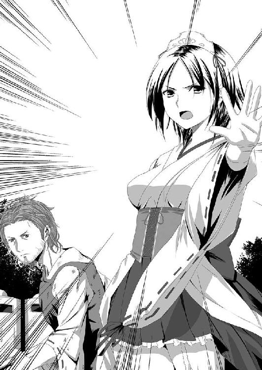
「なんとか、ココで片付けたいもんだな......」
下野国庁遺跡を遠目に見据えながら、宮川小隊長はそう呟いた。
燃やせと言われて急遽ホームセンターなどでかき集めた除草用の火炎放射器。そして、灯油を一八リットル入れたポリタンクの山。マグネシウムの着火剤など、放火できそうな品物がかき集められていた。
「しかし......手持ちの武器が、コレですからね」
そう言って苦笑した機動隊員の手には、布で栓がされたビール瓶が握られていた。中に入っているものは灯油だった。
「ゲバ棒でも持っていれば、六〇年安保の時にテレビに出ていた活動家ですよ」
「それは隊長会議でも話題になっていたよ」
「それにしても、あの巫女さんモドキは......なんなんですか？」
「ん？ 俺より強い専門家だ。きちんと指示には従えよ」
「宮川小隊長よりも強いんすか？」
「ああ......。隊長会議で、俺が代表になって腕相撲をしたんだが、一瞬で一本背負いのようにぶん投げられた」
宮川の苦笑に、隊員は驚いた顔をして宮川と卯月を見比べた。
「マジすか？」
「ああ。それより、そろそろ焚火に火をつけるぞ！」
「は、はいっ！」
あちこちに積まれた薪の山に火が放たれた。同時に木製のタイマツが突っ込まれた空の一斗缶に灯油が注がれる。
「念のために各自、特殊警棒と拳銃の装備を再確認しろ！」
普段、機動隊は拳銃の携帯をしないことになっていたが、相手がどんな状態で襲ってくるのか分からないために、フル装備での出動になっていた。そのために伸縮する警棒をはじめ、より長い警杖まで持ち込んできていた。
「おい......あれ......」
そう、誰かが指さした先では、まるで黒褐色のカップケーキが焼かれてボコボコと膨らんできているかのように、地上に盛り上がりつつあった。
そして、新たな怪異を告げる急報が上空のヘリコプターから告げられた。
『前線指揮所ならびに防衛ラインへ！ 思川の河川敷上空に、不可解な黒い渦のようなものが発生！』
思川は、この下野国庁遺跡の約五〇〇メートルほど東側を流れており、第一防衛ラインからは約一キロも離れていた。卯月たちから目視できる範囲では、その怪異を確認できなかった。
「どういう状況だ？」
『時折、稲妻を放っている直径一〇メートルほどの黒い渦が......なっ!?』
「どうした？ 監視ヘリ！ 状況を伝えろ！」
『渦から二人の人が落ちてきた！ 救助に向かいます！』
「渦から......人が？」
無線を聞いていた富樫大隊長は宮川と顔を見合わせた。
状況がまったくつかめないまま、部下が持ってきた双眼鏡を使ってヘリが飛んでいる付近を確認したが、確かに時折、稲光のようなものが光って見えるものの問題の黒い渦らしきものを確認することはできなかった。
若干、時間が戻る──
下野国庁遺跡を上空から監視していた栃木県警ヘリは〝黒く蠢くもの〟の活動がさらに活性化し、ボコボコと巨大な泡を体内で泡立たせながら徐々に徐々に膨らみはじめているのを確認し、危険を感じたパイロットが若干高度を上げた。
その時、パイロットの視野になにか稲光に似たものが入り、そこに黒い渦が作られつつあることに気づいた。
『なんだアレ？』
『ああ？ なっ......』
後席で観察用のカメラを回していた隊員は、それを見てあわててカメラを向けた。
その周辺の思川の河川敷は幅が約五〇〇メートルほどありその中央を思川が緩やかに流れていた。光りを吸い込んでいるようなその黒い渦は、その思川のちょうど真上にポツンと発生し、急速に一〇メートルほどの大きさに広がった。
竜巻が発生する土地でもあるので、こんな時にやっかいなモノが発生したかとパイロットたちは警戒したが、どう考えてもそれは竜巻ではない。渦の厚さは一メートルもないだろう。モヤモヤした黒雲が激しく渦巻いているが、それはそこから移動する気配すら見えなかった。
『どうなってんだ？』
『分からない。クソッ！ 前線指揮所ならびに防衛ラインへ！ 思川の河川敷上空に、不可解な黒い渦のようなものが発生！』
さらに様子を見るべく、パイロットはヘリを渦に近づけた。
『どういう状況だ？』
新たな怪物の登場かと焦った様子が感じられる富樫大隊長の声が無線から飛んできた。
『時折、稲妻を放っている直径一〇メートルほどの黒い渦が......なっ!?』
撮影隊員が渦の状況を説明していたその時、渦の中心からなにかが飛び出し、バシャバシャンッと激しい水飛沫をふたつ上げて川に落ちた。
それは──人間。
『どうした？ 監視ヘリ！ 状況を伝えろ！』
『渦から二人の人が落ちてきた！ 救助に向かいます！』
二人が落ちたのは緩やかな流れに見える川の流れの中だが、実際にはかなり深い場所であり、足を取られたら簡単に溺死しかねない所だった。
さらにその後方に激しい水飛沫が上がった。
しかし、パイロットからはなにも見えない。
『どうなってんだ？ 何か落ちたように見えたが......』
『俺にも見えた！ おまけに二人の様子が変だ』
二人は新たに発生した水飛沫に怯えるように、あわてて下流に向かって逃げ出したようにヘリからは見えた。
『とにかく助けよう！』
撮影隊員は撮影を一時中断し、救助用クレーンを準備して手早く救出準備に取りかかった。
『一気にいけるか？ 若い男女だ！』
『大丈夫だろう？ 高度を落としてくれ！』
こうして溺れかけた所を監視ヘリに助けられたのは、夜刀浦に向かったはずの護人と和泉の二人だった。
ヘリは前線指揮所に戻ってそこに二人を降ろしてから、再び〝黒く蠢くもの〟の監視の任務に戻っていった。
前線指揮所で状況の説明を受けた二人は、大あわてで巫撃装衣に着替えて卯月たちに合流すべく、第一防衛ラインへと向かった。
神祇官が二人追加されたということで戦力増強となり、事態は好転するかに見えた。
しかし、この間に状況はさらに変化を見せる。
黒い渦から、護人と和泉以外に百人ほどの夜刀浦人たちが姿を現した。
彼らは一斉に思川西岸に上陸し、ピョコピョコとどこかカエルを思わす不可思議な歩き方をしながら、ゆっくりと防衛ラインに向かいはじめた。
「化物の追加だと!?」
第一防衛ラインでは持ち込まれたモニターで、夜刀浦人の様子が確認されていた。
「あいつらは人間と同じで、打撃武器でもなんでも効果があるんですわ。だから銃があるならそれを使ってください！」
富樫大隊長は弓削の説明を受けて、全員に銃を構えるように指示を下し、その到来を待ち構えた。
そこで、彼らは我が目を疑う光景を目撃した。
夜刀浦人たちが国庁遺跡の脇を横切り、第一防衛ラインとのちょうど間のやや国庁寄りの辺りにやってきた時だった。〝黒く蠢くもの〟から黒褐色の触手が伸びて間近にいた夜刀浦人を捕らえ、そのまま呑んだ。
捕らえられた夜刀浦人は黒褐色の触手の中でしばらくもがいていたが、やがてその動きは止まった。
喰われた！
他の夜刀浦人たちは襲われたのは当然とでも言うかのようにまったく動じておらず、無言のまま防衛ラインに向かって歩いて来た。そして二本、三本と触手が伸び、〝黒く蠢くもの〟は次々と夜刀浦人たちを捕らえて食していった。
それだけじゃない。もはや触手で捕らえるのも面倒と考えたのか、ゆっくりとその巨体を動かしはじめた。
「なんて......デカさだ......」
誰かがそう呟いた。
それは、卯月と神奈が戦った時よりも遙かに大きかった。
てけり・り......てけり・り......
映像の中にいた〝黒く蠢くもの〟は、最終的には直径がおよそ五メートルほどの半球状の存在に見えた。しかし今、目の前にその姿を現したソレは、幅が四〇メートルを超える巨体に成長していた。
時速約一キロという非常にゆったりした動きで接近してくるが、その身体から自在に生やすことができると思われる触手の動きは速く、さらにやたらと伸びた。
その触手は次々と手近にいる夜刀浦人を捕らえては食し、体内に取り込んでいく。
「くっそ！ あの夜刀浦人たちは、こっちにヤツを引き寄せるために来たんだ！」
そう、彼らは是が非でも〝黒く蠢くもの〟を国庁遺跡から引きずり出し、栃木市に向かわせるための撒き餌として存在していた。
「用水用の側溝に灯油を流して火を放て！」
富樫大隊長の命令に、そばにいた宮川が走った。
接収した灯油業者のトラックに乗り込むと、そのまま走らせて中間点にある道路沿いの側溝にホースを投げ込んだ。そして、トリガー型のスイッチがついたノズルのスイッチを押し、勢いよく灯油をはき出させた。
宮川は針金でスイッチを固定すると、警杖を構えながらこちらに向かってくる夜刀浦人と〝黒く蠢くもの〟を見据えた。
今すぐに火を放っても火の壁にはならずにここでクルマが爆発、炎上するだけで終わってしまう。
自分が逃げられる限界ギリギリまで待とうとしている宮川に気づいた護人は、走って近づき宮川の隣に滑り込んだ。
「危険です！ 俺が代わりますから戻ってください！」
「いや、ここは我々に任せてください！」
「しかしっ、怪物はアレだけじゃないんですよ！」
「なんだって!?」
「もう一体、どこかに見えない怪物がいるんです！ 夜刀浦人よりもタチが悪い奴なんです！」
「そんな......」
夜刀浦人はもう五〇メートルほど先まで迫っていた。
護人は夜刀浦人に向かって二礼二拍手し、祝詞を唱えた。
「祓い給い清め給え、護り給い幸え給え！」
そして締めくくりに一礼するや、刀印を構えてその切っ先で迫っていた数匹の夜刀浦人を薙ぎ払うように祓った。祓われた夜刀浦人たちの歩みがさらに遅くなり、中には足払いを食らったかのようにひっくり返る者もいた。
「なにを？」
「歩みを遅くしました。さあ、早く移動しましょう！」
「しかし、火が！」
「俺の仲間の腕を信じてください！ 狙った場所に火矢を放つくらいできます。さあ！」
「了解。いきましょう！」
先に宮川を行かせた護人は、こちらを見ている卯月に火矢を射るように合図を送った。
それを見た卯月は矢を引き抜き、軽く振ってみせた。そしてさっさと来いと言うように手招きした。
そして矢に火をつけた卯月は二人が安全距離を取ったとことを確認してから、目算で距離を測りかなりの角度をつけて火矢を放った。
急角度の弧を描いて火矢は宙を舞い、灯油が流れ出している側溝に突き立った。
直後、激しく火が走り側溝は火の壁となった。そして、火はホースをつたってクルマにまで飛び火した。
「もう一発、射っておこうか......ネッ！」
もう一本、卯月は矢をつがえて弓を引き絞り、灯油タンクを積んだトラックに狙いを定めて放った。
矢はタンクを貫き、まだそこに満載されていた灯油が周囲にまき散らされ、さらに火勢が増す。
「クルマを射るんなら、ここも射ないとあかんでしょ」
いつの間にそばに来ていたのか、同じく火矢をつがえた弓を構えた和泉が矢を放ち、トラックのガソリンタンクを貫いた。その直後トラックは爆発、トラックに積まれていた灯油が火の雨となって周囲にいた夜刀浦人とそれを追っていた〝黒く蠢くもの〟の触手に降り注いだ。
ジュウジュウと〝黒く蠢くもの〟の身体が焼ける音が響く。
火達磨になった夜刀浦人がもがき、転がり、その不気味なうめき声が機動隊員たちの心を恐れで締め上げた。
それでも、火をかぶっていない夜刀浦人たちは無言で歩き続け、火の川となった側溝を飛び越えて迫ってきた。
「警杖構えええええええええええええっ！ 射撃隊も準備しろ！」
大隊長の声に機動隊員たちは盾を前に揃えて警杖を片手で剣のように構え、腰を落として身体を低く身構える。警官隊や銃を所持していた連中も銃を構えた。
より長い武器の方が良いという弓削の言葉に警棒ではなく警杖を装備したわけだが、盾を構えて警杖を使うことから長さは一二〇センチの物が選択されていた。
ゆっくりと歩き迫っていた夜刀浦人たちは徐々に走り始め、駆け足となり、勢いをつけて機動隊員の列に飛びかかってきた。
間合いをつかんだ宮川は透明なポリカーボネイトの盾で夜刀浦人の横面を張り飛ばし、その首筋に警杖を振り下ろす。なんとも言い難い鈍い音が響くが、夜刀浦人はそれをモノともせずに鋭いかぎ爪を横薙ぎに振り回した。
宮川の横にいた小隊の隊員がそのかぎ爪の攻撃を盾で防ぐ。
ガガッ！ という音を立ててポリカーボネイトの盾に爪痕が深々と刻まれた。
「なっ!?」
トカレフの七・六二ミリ拳銃弾ですらかすり傷程度しかつかないはずの盾には、貫通しそうなほどの深い裂き傷がついた。
「気を抜くな！」
ガゴッ！ という激しい音が響き、二度目の斬撃で盾が砕けた。
宮川はとっさに警杖を振り下ろし、さらに伸びた夜刀浦人の腕の骨を砕いた。
しかし痛みを感じないのか、夜刀浦人はオニオコゼを思わす口を開いて乱杭歯を突き立てようと彼に飛びかかってきた。
とっさに宮川が盾を構えた時、間近に迫った夜刀浦人の口腔に矢が突き刺さった。
「武器に神威を込められないあんたたちは、殺す気で向かわないと死ぬよ！」
「すまん！」
矢を放った卯月に礼を言いつつ、宮川は次に迫ってきた夜刀浦人の頭に警杖を振り下ろした。しかし、予想外に早い夜刀浦人の動きにそれは空振りに終わった。
宮川の攻撃をくぐり抜けた夜刀浦人は盾が半壊した機動隊員に飛びかかり、かぎ爪でその顔を薙ぎ払った。
バイザーが吹っ飛び、えぐられた〝顔〟が飛んだ。
あまりの破壊力に周囲にいた機動隊員は愕然とした。が、宮川はすぐさま警杖を捨てて腰に下げた拳銃Ｍ３７エアウェイトに手を伸ばし、振り向いた夜刀浦人の頭に二発の弾丸を叩き込んだ。
「気を抜くな！ 敵は化物だ。手加減もするな！」
宮川の発砲に背中を押されたように、誰もが腰の拳銃に手を伸ばした。
あちこちからパンパンと銃声が響きはじめた。
さしもの夜刀浦人も拳銃の前には歯が立たなかったか、情勢は徐々に機動隊の優勢に傾きはじめた。
が──
銃声をかき消すような甲高い鏑矢の音が戦場に響き渡った。
誰もが鏑矢の音の方向を見る。
そこには、厳しい表情を浮かべた卯月が立っており、その目線の先には、あの〝黒く蠢くもの〟がいつの間にここまで迫ったのかと思うほどの位置にまで迫っていた。
だが、問題はそれではない。
目を凝らしてナニかを見つめる卯月。そして和泉。
二人だけじゃない。そこにいた誰もが、自分たちとその〝黒く蠢くもの〟の間にナニかがいるのを感じていた。
クスクス......とも、フフフ......ともつかない、あの年若い女の忍び笑いのような音がナニもいない空間から聞こえてきた。
「うちらを追ってきた見えへん化物がそこにおるんよ」
注意を促す和泉の声に卯月はさらに目を凝らした。
なにかが蠢いている。
クスクス......フフフフ......
忍び笑いに似た声とその気配は分かるが、肝心の姿がどうやっても見えなかった。
「熱光学迷彩でも着ている宇宙人かサイボーグでもいるわけ？」
「違います。例えるなら獣の足を持った陸生のイソギンチャクかタコや！」
その例えは余計に卯月の脳内を混乱させた。
だが、次の瞬間──
「ぎゃあああああああああああああああああああああああああああああああっ！」
機動隊員の一人が絶叫を放ち、空中に吊り上げられた。
「なっ!?」
ザムザムッというなにかが肉に突き立つ音が響き、続いてピチャピチャとナニかを啜り舐めるような音が無数に聞こえてきた。
さらに肉になにかが突き立つ音が無数に響き、吊り上げられた機動隊員はグッタリとぶら下がった状態になった。
──なにが起きているの？
誰もが固唾を呑んで見守る中、ソレはゆっくりとはっきりしない輪郭を見せはじめた。
ソレは巨大な獣？
透明な怪物は、ゆっくりと赤い鮮血色の半透明な姿を現しはじめた。恐竜かハ虫類の足を思わすかぎ爪の生えた四本の足。体長はおよそ三メートルというところだろうか？ 体中にビッシリとヤツメウナギのような口を備えた触手を生やした怪物。頭らしきモノはどこにもなく、獣の身体にびっしりと無数の触手のみが生えていた。
クスクスとかフフフというような笑い声は、その触手が蠢く音だった。
そして吊り上げられた機動隊員の顔は蒼白となり、皮膚が目に見えてしなびていくのが分かった。
吸血されている......。
いや、血液だけではなく体液やリンパ液など、体中の水分のすべてがこの化物に吸い取られつつあった。
新たに現れたこの化物、そして夜刀浦人たちとどうやって戦えばいいのか？
「うわああああああああああああっ!!」
誰かが悲鳴を上げながら発砲した。
バスバスッという着弾音が響き、我に返った卯月が破魔矢を放つ。
拳銃弾よりも破魔矢の方が効いた。
破魔矢に貫かれたソレはよろめき、飛び退いた。そして、吸血中の機動隊員の屍体を奪われまいとするかのように、空いているすべての触手が卯月に牙を剥け、シャーッ！ と威嚇するような声を上げた。
「その人を返せ！」
今度は卯月と和泉の二人が破魔矢を放ち、その身体にさらに二本の矢を突き立てる。
破魔矢だけじゃない。
立て続けに和泉が弓の弦を鳴らす〝鳴弦の儀〟を行うや、ソレはジリジリと後ずさりをはじめた。
「これなら、コイツは鈴音も嫌います！」
「なら、これでどうだ！」
卯月は祓神楽矛に長柄を装着して祓長柄矛にするや、数歩助走をして投げ槍よろしく投げつけた。
見事、祓長柄矛はソレの身体に突き立ち、さらにわざとゆるめに長柄を装着していたために暴れた拍子に祓神楽矛のみがその身体に突き刺さったまま長柄が外れ、鈴が身体から落ちにくくなった。
「性格、悪うおすなぁ」
「化物に性格イイ女なんて思われたって、得なことないだろ」
そう言って卯月が弓を手にして新たな矢をつがえた時、鈴の音に怯えたソレが〝黒く蠢くもの〟の触手に絡め取られた。
「なっ......」
激しい勢いで黒褐色の触手と赤色半透明の触手が絡みあい、お互いの身体に喰いつきまくる。しかし、半透明の吸血生物に勝ち目はなかった。牙の生えた触手で喰らいついた場所から黒褐色の粘液の浸食がはじまる。
攻撃をすればするほど粘液に浸食され、かといって防戦していても浸食されていく。
いつしか、その赤色半透明の身体は黒褐色半透明の身体となり、そして次第に〝黒く蠢くもの〟の身体に取り込まれていった。
『全員、射撃用意！ 射撃班以外も銃を構え！』
機動隊員を簡単に血祭りに上げた吸血生物を、いとも簡単に倒して喰ってしまった〝黒く蠢くもの〟に対する怯えが機動隊員たちの間に少しずつ伝染していた。
その微かな怯えを感じ取った富樫大隊長は拡声器を使って号令を下した。
銃撃で士気が高揚することを狙ったのである。
『ってええええええええええええええっ！』
全員が銃を構えたのを見計らって、新たな号令が下された。それに銃声が続く。
白い硝煙が漂う。
しかし、『糠に釘』のことわざどおりにドプッと言う音をたてて穴を穿っただけで、〝黒く蠢くもの〟本体にダメージを与えたようにはまるで見えなかった。
『火炎瓶投擲！』
再び拡声器から放たれた富樫の叫びに、戦列の後方で待機していた数名の機動隊員たちがビール瓶の口を塞いだ布に火をつけ、助走しながら力任せに投げつけた。
瓶が割れると同時に火炎が広がる──はずだった。
火がついた瓶は〝黒く蠢くもの〟の本体にぶつかるや、割れずにそのまま受け止められ、燃え上がりもしない。
それは予想外の事態で、状況を察した他の警察官たちが拳銃を抜いてビール瓶を割ろうと撃ちまくった。数発が当たって燃え上がったものの、その数は限られていて効果が感じられない。
「手前の硬い舗装路を狙え！」
火炎瓶は場所を限定して使うしかない武器と成り下がった。
「灯油を田んぼに流せ！」
消防団員の誰かがそう叫んだ。
近くにいたレスキュー隊員があわてて残った灯油タンクのフタを取り、〝黒く蠢くもの〟がいる泥田に投げ込み灯油を流した。そこに火のついたタイマツを投げ込み燃え上がらせる。
あちこちからそんな火炎田の火の手が上がった。
だが火勢が弱くて大したダメージにならないだけではなく、火が人の移動進路を阻み、また立ち上る煙は視界を奪い、逆に人間の行動を限定させることとなった。
「くそっ！ 煙で前が見えねえ！」
片方の手に鋭い切っ先の草刈り鎌を持ち、もう片方の手にタイマツを持った消防団員が鎌を持った手で周囲に立ちこめはじめた黒煙を払った時だった。
シュッ......という風切り音とともに、ナニかがその腹を貫いた。
「......ゴボッ......オッオオオッ......」
口から血を吐き出し、のたうちながら空中に吊り上げられた彼の腹には、切っ先が鋭いトゲのような形に変化した〝黒く蠢くもの〟の触手が突き刺さっていた。
灯油の燃える煙を上手く使ったのは、他ならぬ〝黒く蠢くもの〟だった。
大量の触手の攻撃。煙を盾に、あるいは地を這い、あるいは泥田に潜り込んで迫り、一人、また一人と餌食になっていく。
そんな様を見せられれば人は浮き足立ち、徐々に徐々に後退しながら戦うこととなっていた。それにつけ込むように触手を伸ばして身体の面積を広げた〝黒く蠢くもの〟は行動範囲を広げ、防壁を破りはじめた。
本当にあっと言う間に防衛線は分断された。
巨大な触手が束になって融合し、やがれそれが本体の身体の一部となり、そこからさらに細かい触手を繰り出していく。正面だけ見て戦っていたものは、気づくと四方を取り囲まれ、八方から触手に貫かれて絶命し、そのドロドロの〝黒く蠢くもの〟の体内に取り込まれ、喰われていくという有様だった。
「くそっ！ ソコの人、下がってください！」
護人は触手に貫かれてもまだ生きている人の治療にかけずり回っていた。
治療といっても祝詞を唱えて巫術をかけることで出血量を抑えるなど、本当の救急手当でしかないのだが......。それでも護人が走り回らなければ、この第一防衛ラインの戦いでより多くの死者が出ていたことは確実だった。
「護人はん。治療に駆け回りすぎどすよ」
「そんなこと言ったって、放っておけないだろ！」
煙の中を駆け回っている時、偶然にも出くわした和泉は護人の顔を見るなり苦笑しながらそう忠告した。
この時、神祇官の四人は触手の攻撃にそれぞれが対応し続けた結果、いつの間にかバラバラになっており、二人が偶然にも合流できたのは奇跡的な巡り合わせと言えた。
「このっ！」
護人は護符を地面に立て、物凄い早口で略拝詞の祝詞を唱えて空間に盾を張る。その直後、飛来した触手の切っ先がその透明な盾に激突してひしゃげた。
「ええ感じどすえ！」
和泉は盾を飛び越え両手にした小剣で触手を斬り落とした。
切り落とされた触手の切っ先は、瞬く間に液化してドロリとした粘液になり、その場に黒褐色の水たまりを作り出す。それは、新たな触手が迫るや再び活動を開始し、触手に吸い込まれて消えていく。より大きな塊が残っている場合は、切り落とされた直後からそれ自体がゆっくりと本体のある場所に向かって移動して合流してしまう。
いくら斬り落とそうとも、それがダメージとなっているのか分からない。いや、ダメージになっていることを信じない限り、戦い続けることもできないような化物だった。
「和泉！ こっちにこい！」
呼ばれた和泉は一気に護人の元に駆け戻る。
「後ろを向いて、お前はあの化物が迫ってこないかしっかり見てろ！」
「なんで、そないに偉そうなことを言うん？」
「いいから黙って言うことを聞け！」
不満そうな顔をしつつも言うことを聞いて背中を向けた和泉に向かって、護人はその背中に護符や祝詞をいくつか使い、巫術をかけていった。
「神速行、硬胴、強脚とそれぞれ巫術をかけた。少しはマシな戦いができるだろ」
「おおきに。可能なら、硬腕もかけといて欲しかったんやけどね。そらそうと、護人はん、息が上がってますえ」
和泉が心配するほどに護人の息は上がり、全身に異様なほどの汗をかいていた。
走り回り、治療に防御にと神威を使いすぎて体力の限界まできているのが見て取れる。さらに夜刀浦での出血が尾を引いていた。
「あまり無理して倒れたら困りますえ」
「分かってい......ルッ!?」
「護人はんっ!!」
ザシュッという音が響いた。
周りを見ていた和泉の隙を突いて、泥田の中を這いずってこっそりと忍び寄ってきていた触手が二人を不意打ちしてきた。
和泉はとっさに避けて回避したものの、護人はかわしきれずにその切っ先が腹を掠めた。
響いた音は、護人の腹を裂く音だった。
愕然とする和泉の顔にも血飛沫が飛び散り、膝をついた護人の腹部から内臓がこぼれ出た。
「くっそっ......ぐっ......」
「このぉっ!!」
和泉の反撃の蹴り脚は早かった。再び護人を突き刺そうと鎌首を持ち上げた触手に、和泉は今までの倍以上の早さで迫るや蹴り上げ、迫った勢いを刃に乗せて斬りかかった。
和泉が両手に構える物は刃の短い二振りの小剣。和泉は器用に身体を空中で回転させて触手をズタズタに切り裂いた。
ドサドサと触手が地面に落ちる音を耳にし、ふぅと息をついて振り返った和泉は驚きの声をあげた。
「なっ......」
本来なら切り裂かれれば触手は崩れ落ちて液体と化す。しかし、ズタズタにされた切れ端を完全に断ち切れずにそれぞれ繋がったままだったために、新たな細かい無数の触手の爪となって和泉に襲いかかってきた。
襲い来る細かい触手を小剣で弾いていくがあまりの数に防ぎきれるものではない。瞬く間に和泉の袖が裂け、手は無数に作られた裂傷で紅く血まみれになっていった。
──あかんっ！
メガネが弾き飛ばされた時、和泉は最期を覚悟した。
が──
和泉の体中に当たったものは硬い切っ先ではなく、ビチャビチャと飛び散った緩い粘性をもった液体だった。
「斬る時は......きちんと断てよっ！」
メガネのないボヤンとした世界を少しでもハッキリさせようとしかめ面した和泉は、自分の内臓を片方の腕で抱えながら白色発光する八握剣を握る護人らしき姿をその視界内に捕らえた。
「護人はん？」
護人は剣を捨てて足下に落ちていた和泉のメガネを拾うと、彼女にそれを手渡した。
「今、巫女は貴重なんだ......。最後の最後まであ......き......」
そこまでが護人の精神力の限界だった。
護人は倒れ、意識を失った。
「護人はんっ!?」
メガネをかけ直してあわてて護人に駆け寄った和泉は、護人の息を確認した。
顔の血色は最悪になっていたが、傷の割に思ったほどの出血はない。
神祇官の巫覡はそれぞれ役割が異なり、覡（男巫子）は主に状態異常や補助・治癒系を得意とする。
護人は和泉が触手と戦っている間に最低限の止血をする巫術をかけたのだろう。それでなんとか命をつなぎ止め、さらに触手の大本を断ち斬り和泉の窮地を救ってくれた。
「護人はんっ！ しっかりしい！」
戦闘に特化している巫女の和泉には、これ以上ここでなにかできるすべはない。自分の止血が関の山だ。
そうこうする内に、二人の血の臭いを嗅ぎつけたか、新たな触手が近づいてきた。
「あかん......。護人はん、我慢してな」
和泉は周囲に生存者がいないことを確認してから、意識がなくぐったりしている護人を軽々と抱きかかえるや、地面を蹴って後方に下がる道を選んだ。巫撃装衣を着た上に神速行の巫術がかけられた今の和泉の脚なら、瞬間的に時速一〇〇キロは出せるだろう。いくら触手の動きが速かろうとも、その速度に追いつけるものではない。
この時点ですでに第一防衛ラインの防壁はほとんど崩され、防壁よりも西側に主戦場は移りつつあった。
防衛戦の南端にまで移動して戦うハメになっていた弓削は、器用に触手の攻撃を避けて手にした短槍で迫った触手を払い、切り落としながら、周囲の機動隊員たちに撤退を叫んでいた。
最初に夜刀浦人たちに襲撃され、続いてこの〝黒く蠢くもの〟の襲撃である。
対応方法がまったく異なる二種類の御霊の連続攻撃に、即時対応できずに機動隊員たちの戦列は瞬く間に瓦解したといっても過言ではなかった。
──むしろ、先にきた夜刀浦人を上手くあしらえたから、そのまま戦えると踏んで失敗したってクチだな......。
戦列が崩れるや、さっさと撤退するように弓削が進言したために、今のところ南端を護っていた埼玉県警機動隊の損害は一番低かった。
しかし、全員が無傷とは言い難かった。
重傷者と死傷者が少ないというだけで、真っ先に消防団員を逃がし、ついでに普通の警察官や消防隊を逃がしてからの撤退になったために全員がなにかしら傷を負うこととなった。
弓削自身も体中から血が滲んでいる傷だらけという状態だった。
「さて、俺もそろそろ撤退しねえと、身体が保たないってか......あああっ!?」
その時ドコかのテレビ局のヘリコプターが弓削を見つけたのか、いきなり高度を落としてきた。
「ちょ、待てよコラ！ 危ねえっての！」
そんな弓削の声は、ヘリのローター音にかき消されて聞こえるはずもなかった。
恐らくは、独り残っている弓削と〝黒く蠢くもの〟の触手たちとの戦いを間近で撮影しようという魂胆なのだろう。
だが、そのヘリの下面部めがけてスルスルスルッと細い触手が伸びた。
「ちょっ、おま！ 待て！ 待ちやがれっての!!」
弓削は短槍を縦横に振り回して〝黒く蠢くもの〟の興味を自分に向けさせようとするが、弓削の周囲の触手の興味はひけても、ヘリの下面部に向かう触手の興味まではひけない。
ヘリのパイロットはその触手の接近に気づいていなかった。
瞬く間に触手はヘリのランディングギアに絡みつき、引きずり落とした。
「おいっ！ くそっ、チクショウ！」
それはパイロットたちには一瞬のことだったのかもしれない。
引きずられたヘリはバランスを崩し、あっと言う間に地面に引きずり落とされた。
高速回転したままメインローターは折れるまでの間〝黒く蠢くもの〟の身体を切り裂き、さらにヘリの爆発は予想外のダメージを〝黒く蠢くもの〟に与えた。
だがしかし、それだけのダメージを受けても、その怪物としか言いようのない生命力を奪うまではいかなかった。
無駄だと知りつつも生存者がいないか確認しようとした弓削は、負わなくてもいい火傷を負って撤退することとなった。
参
前線指揮所──
第一防衛ラインで戦闘が開始されるや、すぐさま前線指揮所に重傷者たちが運び込まれるようになっていた。
恐らく重傷者は出るだろう。そう考えて近隣の病院から駆り出されてきていた医師たちも、こんなに早い時期から負傷者が来るとは思ってもいなかった。そのためにスタッフが足らず、急遽、集まっていた女性警察官たちも看護士見習い的な手伝いに駆り出され、緊急で市内の総合病院にもヘルプの呼びかけが行われた。
その間にもひっきりなしに救急車が行き来し、すぐさま用意されていた三台の救急車だけでは足りなくなり、消防指揮車や自衛隊の高機動車など、使える車両はほとんどすべて負傷者の搬送に使われるようになった。
前線とつながるまっすぐな一本道は、行き交う負傷者搬送車両で渋滞が起こりつつあるほどだった。
そんな状況になってもなお、中村一尉をはじめとする中央即応集団に出動命令は下されなかった。
「おいおい。きちんと陸幕長には伝えたんだろうな？」
質問された通信員は肩を竦めてみせた。
「さっきから三回も無線連絡していますが、実際のところ、陸幕長にまで届いているかどうかは謎ですよ」
いくら前線からの連絡とはいえども一介の通信員が陸幕長に直接報告できるはずもない。
それが分かっていてもなお、怪我人がどんどん運び込まれてくる目の前の状況を見たら何度も急かしたくなるのが人情だった。
「くそっ。いつまで俺たちゃここで油を売ってねえとなんねえんだ」
「内閣総理大臣閣下が治安出動命令を下すまでですよ」
「ああ？ ったく......。いつになったら下してくれるんだかなぁ......」
なだめすかすような調子の副官の言葉に中村は大きくため息をついて、テントからブラリと外に出た。その出会い頭に医療器機の入ったバッグをいくつか抱えて走っていた恵里香とぶつかった。
「おっと失礼、美しいお嬢さん」
「ああっ!?」
「ああ、そのままそのまま。俺が拾いましょう」
にこやかな顔をしてバッグを拾い上げた中村を、恵里香はまるで仇でも見るような目で睨みつけた。
「あの......なにかご無礼でも？」
「あんたら......自衛隊だろ」
「そうですが......」
「だったらなんで前線に行かねえんだよ！」
恵里香の叫びはテントの中にいる副官たちにも聞こえていた。
彼らは黙って唇をかみしめ、手をキツク握り締めた。
この手の事態が発生した時、言われるであろうと予想していた言葉。彼らは、黙ってこれに耐えなければならなかった。
「我々は内閣総理大臣の命令なしに武器を取ることはできないんですよ」
さっきまでのふざけた口調とは異なり、まじめな対応を中村は取っていた。
「だから、我々も断腸の思いでこの情景を見ながら、内閣総理大臣の命令を待っているのです......。ご理解ください」
「ご理解......なんてできっかよっ！」
「............」
「あたしの友だちが......前線にいるんだぞ！ あんたらがここでのんびりしてる間に、死んでるかもしんないんだよ！」
涙混じりの叫びに、中村は返事をすることができなかった。
すでに一〇人以上の機動隊員たちが死んでいることも聞いていたし、さらにこの先増えるであろうことも予測できた。
「頼むよ......助けてやってくれよ......。頼むから助けに行ってやってくれよ!!」
「命令が下り次第、全力で向かわせていただきます」
「遅えよ！」
恵里香はひったくるように医療バッグを奪って駆け足で行ってしまった。
後に残された中村は、やりきれないという顔をして空を見上げていた。
「もう一度......陸幕長を突っつきますかね......」
「頼むわ......」
気を利かせた副官に中村は頷き、恵里香が去って行った方を見た。
「あの子の友だちって......男かね......」
「さて......。聞いた話だと、神祇官だってことですよ」
「神祇官？ あの巫女さん部隊か？」
自衛隊の将校であれば、神祇官についての知識は多少あった。もっとも、中村のように巫女さんしかいない部隊というようなおかしな誤解もあるが......。
「まぁ、男もいますけどね。さっき、神祇官の二人が戻ってきたらしいんですわ」
「ほう......。前線にまだ機動隊がいるのに、さっさとケツまくって帰ってきたと？」
副官は首を横に振った。
「いや。ハラワタさらして半死半生で担ぎ込まれてきたそうですから、それはないかと思いますよ」
「ハラワタ......。それで......生きてんのか？」
「分かりません。今の医療バッグはそいつ用の物じゃないですかね」
「なるほど......。じゃあ、まだ前線に巫女さんが残ってるってことか......」
「そうなりますね......」
残っているのは巫女とは限らないと訂正するのも面倒だったので、副官は黙っていた。
「ったく......。いい年こいた三〇男が安全な基地でノホホンとしている間、最前線では一〇代の女の子が血みどろになって戦ってるっていうんだな。情けない話だな......」
「なんで、一〇代って決まってんですか？」
「今年、高卒の女の子が配属されたって噂だからな」
「なるほど......。相変わらず、女の情報はエシュロン並みに得るようですねぇ......」
「俺にとって、それが人生のすべてだからな」
最後は茶化したが、中村の顔色が優れないことくらい副官は見抜いていた。
この時点で、どの自衛官の胸の内も同じ苛立ちで塗りつぶされていた。
──早く、治安出動させてくれ。
彼らは首相からの命令が下されるまで、耐え続けるしかない身の上だった......。
そんな苛立ちを自衛官たちが感じている頃、最大の激戦区となった中央部分では栃木県警の機動隊員と卯月が死力を尽くして戦っていた。
〝黒く蠢くもの〟が身体を泡立たせて、その泡が弾けるたびに鼻を塞ぎたくなる瘴気のような毒気が周囲に流れ出た。
直接吸い込んだところですぐにどうこうとなるようなものではない。しかし、物凄く生臭く吐き気を催させるそれを長時間吸い続けることは拷問以外の何物でもなく、本隊の間近に迫って戦っていた機動隊員たちはその毒気にあてられ足下がおぼつかなくなる者まで出ていた。
ぴいいいいいいいいいいいいいいいいいいいいいっ!!
卯月の放つ鏑矢の音が、そんな瘴気で濁りかけた空気を清浄なものに変えていく。
鏑矢自体はダメージを与えない矢故に、それを一射することは卯月による攻撃を犠牲にすることだった。しかし他の機動隊員たちを放っておくわけにもいかず、卯月は矢を射続けた。
神威を込めた火矢を放ち、その合間を見て鏑矢を放つ。
「もう矢が尽きます！」
矢を射る卯月を護るように周囲を固めていた宮川たちにそう告げて、卯月は最後の火矢を放った。
「状況は？」
最後の矢を放った後、弓を捨てた卯月は傍らに突き立てていた長巻に手をかけながら宮川に訊ねた。
「最悪......かな」
顔を上げた卯月も周囲を見回してそれに同意した。
わずか百数十メートルの地域でこうも部隊がバラバラに分断されるとは、誰もが思っていなかった。同時に〝黒く蠢くもの〟は移動する以上は面で押してくるものだとばかり考えていたために、こうやって周囲を取り囲まれることも想定外だった。
〝黒く蠢くもの〟は好き放題に太めの触手を四方に放ち、それが地面にベシャリと張り付くや、ブクブクとふくれあがっていつの間にかそこが本体の一部となっていた。本体のドロドロと流れる移動速度こそ遅いものの、そうやって触手をヒトデの足のように広げて体内移動していけば、本来の移動速度以上の早さで制圧圏を作り出すことができる。
予想以上の頭脳の持ち主といえた。
おかげで、気がつくと卯月たちは船の先端のような空間を護っているだけの状態になっていた。
てけり・り......てけり・り......
その耳障りな音が周囲から響いてくる。
──さて、どうする......。
迷っている間にも左右に展開している泡立つ触手は太くなっていく。
──弓削さんと和泉と護人はどうしたんだ？
さらに周囲の気配を探ろうとした時、上空を飛んでいた報道のヘリが高度を落としているのが見えた。
「あれは......ヤバイッ！」
下から触手が伸びていく。
卯月はその方角に向かって駆け出し、障害となっている本体化しつつある触手に向かって斬りつけた。
だが太くなったそれは思うように断ち切れず、そこから生えた新たな触手の攻撃を生むだけだった。
「くそっ！ 落ちる！」
ランディングギアを触手につかまれバランスを崩したヘリは、そのまま落下した。
ギュルルルッ！ という嫌な音を立ててメインローターが空転してその周辺の〝黒く蠢くもの〟を切り裂き、その後ベキベキと折れ、その後ヘリ本体の爆発で砕け散った。
爆炎が周囲の〝黒く蠢くもの〟の身体を焼き、幸か不幸か押されつつあった周囲の情勢を一変させた。
張り出していた触手を引っ込め、燃え上がっている部分を避けるように〝黒く蠢くもの〟は身体の形を変えつつあった。
「一度撤退しましょう！」
「なっ!?」
思わず文句をつけようと振り返った卯月は、肩を叩いてそう叫んだ宮川の顔が苦渋にゆがんでいるのを見て目をそらした。
「あ、あたしが殿を務めます！ だから、皆さんが先に撤退してください！」
「しかしっ！」
グダグダ言われることに苛立った卯月は言葉を荒げた。
「ちっ......面倒臭えなぁ。行けって言ってんだよ！ 全員が背中を向けて逃げたら、コイツは襲いかかってくんだろ！」
そう言っている間にも、〝黒く蠢くもの〟は細かい触手を振り上げて卯月たちに攻撃の矛先を向けてきた。まるで、先ほどのヘリの爆炎で負った傷を癒すための餌にでもしようというかのように。
「さっさと退けっ!!」
卯月は風車のように長巻を回転させ、襲い来る小さな触手群を切り落とした。
その間に宮川は自分の小隊員たちを後方に下がらせようとした。
しかし、貴重な餌を逃すまいとするかのように、〝黒く蠢くもの〟は直径五〇センチはありそうな太い触手を数本振り回して撤退の妨害をしてきた。
卯月は舌打ちしつつ跳んでその一本を斬り落とし、さらに一本、もう一本と長巻を振るっていった。
「さっさと帰んな！」
ギラツク日差しが照りつけるコンクリートの上に放り出されたミミズよろしく地響きを立てながら、切断された触手がもがいていた。
てけり・り......てけり・り......
切り落としてもその奇怪で耳障りな鳴き声（？）は止まず、切り落とした触手はグズグズな半液体のような状態になるも自ら移動して本体や他の触手と合体していった。
「くっそ......キリがない」
懐から符を取り出し、カードを投げる要領で投げつける。
その後略拝詞の祝詞を唱えると、符は燃え上がり炎の矢と化して〝黒く蠢くもの〟に突き刺さった。
──符の方が効くか？
そう思った刹那、スルスルと草むらから近寄ってきた細い触手が卯月に迫った。
それを軽く長巻で斬り飛ばす。その直後、ワッと凄まじい数の触手が卯月に迫った。まるで群生する細長い魚の群れのように細かい触手が面で押してくる。
「クッ!!」
脇の触手を斬り飛ばした結果、僅かに刃が出遅れた。
ギリギリのところで身を伏せてかわしつつ、長巻で斬りかかった。しかし凄まじい勢いに、斬り抜く途中でガキッという嫌な音を立て、長巻が刃の付け根で折られた。
卯月は残った柄を投げ捨て八握剣を引き抜き、符を出して略拝詞の祝詞を唱え、それをボロボロになったアスファルトに突き立てた。
さらに卯月は別の符──いや、人型の紙を取り出して祝詞を唱える。
「ひ・ふ・み・よ・い・む・な・や・ここの・たり！ ふるへ！ ゆらゆらとふるへ！」
祝詞を唱え終えた瞬間、激しい勢いで触手の群れが卯月の正面からぶつかってきた。
その瞬間、地面に突き立てた符が光り、巨大な白色半透明の呪壁を作り出した。
触手は壁にぶつかってもなお強い力で押しまくる。やがて呪壁に亀裂が入りはじめた。
卯月はその頃合いを見計らっていたかのように大きく息を吸い込み、その息吹を人型に吹きかける。すると人型はパリパリと電流をまといはじめた。
「放て、火雷大神ッ！」
叫びとともにその人型を地面に投げつけ、卯月は三歩のバックステップで十数メートル飛び退いた。
その瞬間、呪壁がガラスのように砕け散り、触手の群れが卯月めがけて殺到した。その直後、八方からその人型めがけて雷鳴とともに眩い雷撃が走った。
雷撃は触手の群れを焼き焦がしてそのほとんどを炭化させた。
ボロボロと崩れ落ちる炭化した触手だったものを見て、卯月は安堵のため息とともに思わず毒づいた。
「ったく......手間かけさせやがって......」
肩で息をしており、先ほどの巫術に相当の力を使ったことが目に見えて明らかだった。
もうひとつため息をついた時、卯月の視野の片隅に影が走った。
「え......？」
次の瞬間、卯月は引っ張られ激しい水音とともに水田に頭から突っ込んだ。
その上空をブンッという風斬り音とともに巨大な触手が横薙ぎに空を切った。
「ぶはっ！」
「だいじか!?」
間一髪のところで卯月を水田に引きずり込んだのは宮川だった。
「くっそっ！ 最ッ低えぇぇぇっ！」
顔についた泥を袖でぬぐったが、さすがに髪についたものまでは落とせない。
顔中体中ドロだらけ。もうウンザリという気分だった。
宮川に抱えられて水田に突っ込まなければ、触手に不意を突かれて頭なりを持って行かれていたことくらいは卯月も理解できる。だが、泥だらけにされた後に『大丈夫か』と聞かれて素直に何でもないとは言い難かった。
「大丈夫か？」
オマケに宮川は自分が思わず栃木弁で質問したから通じなかったと思ったのか、ワザワザ標準語に言い直してきたから、苛立っていた卯月は余計に苛立ちを募らせた。
「余計なお世話！ あたしは一人でもやれるんだから、あんたは他の奴らを守れよ！ バカじゃねえのか！」
「おいおい。年頃の女の子がそんなに言葉を荒げるなよ。だいたい、じ、自分よりも年下のかわいい女の子が......その、生命をかけてるのに......。大の男がそれを守れないなんて......なな情けないだろ」
照れくさそうにどもり、苦笑いしながらボソリと告げた宮川に、先ほどまでの苛立ちはドコへやら、卯月は思わず赤面した。
女の子扱いされたことがいったい何年ぶりだろうか......と──
「バッ、バカ言ってんじゃ...」
グシャリ！
そう表現するしかない音が、卯月の目の前で響いた。
その音と共に、宮川の身体の後ろ半身が、横薙ぎに振り回された〝黒く蠢くもの〟の触手に持って行かれ、反動で残った身体も吹っ飛んだ。
大きく見開かれた卯月の目には、照れくさそうな笑みを浮かべたまま泥田に突っ込み、崩れ落ちる宮川の姿が、ゆっくりとスローモーションの映像を見ているかのように映しだされた。
ドサリと重い音を立てつつも、それは人が倒れる音としてはあまりにも軽く、うつぶせに倒れた宮川の背中からは赤い人間の内側の肉がハッキリと見える。それは、背中の肉ごと肋骨も内臓もすべてを持っていかれたせい。
卯月は声も出せず、一瞬で命を奪われた亡骸を見つめ続けた。
その頬に涙が一筋伝わり落ちた瞬間、あの忌々しい本体が放つ声が聞こえてきた。
てけり・り......てけり・り......
宮川の身体の半分を取った〝黒く蠢くもの〟は、本体から新たな太い触手を繰り出して残った身体も体内に取り込もうとした。
「うあああああああああああああああああああああああああああっ!!」
雄叫びとも泣き叫びともつかない声が卯月の口から吐き出され、振り下ろされた触手を八握剣で切り落とした。
切り落とされた触手は瞬く間にドロッとした液体状に変わり、泥田の上に浮かぶようにしながら、ウゾウゾと動いてその本体に合流しようとする。
「逃げんなごるぁあああああっ！」
符を使って合流するソレを焼き払おうとしたが、それを察したか細い大量の触手が高速で飛来し卯月に祝詞を唱える隙を与えない。
「くそっ！ くそっ！ ちきしょおおおおおおおおおおおおおおおっ！」
邪魔する触手を卯月が叩き斬っている隙に、新たな太い触手が宮川の身体を狙っていた。
卯月は泥田の中に半ば沈みかけていた宮川の遺体の手をつかみ、引きずりながら襲い来る触手たちを剣で振り払い、卯月自身も撤退に入った。
触手たちもある一定の距離を取ったら、卯月を襲ってこなくなった。
本体が移動している様子も見えなくなっていた。
あの神奈に叩きのめされた直後のように、萎縮しながら休憩時間に入ろうとしているようにも見られた。
──この機会に反撃に出るべきか？
卯月は一瞬だけそれを考えたが、頭を振って撤退に専念した。
勝機は一〇パーセントもない。
それは戦う前から分かっていたことだが、戦ってそれを実感すると余計に悔しさがにじみ出てくる。
「退けっ！ 退けええええっ！」
悔しさを抑え込み、可能な限りの大声で卯月は叫んだ。
しかし、それに応える人間は、卯月の見回せる周囲には一人も残っていない......。
いや、まだ残り、必死にタイマツを振り回している警官がいたが、正気を失っているのか卯月の声が聞こえている様子はなかった。
「くそっ」
左手につかんだ宮川の手に目を落とし、そして生きている警察官に目をやる。
──優先すべきは......生者......だよな。
卯月は唇をかみしめ、
「すまん......」
と呟いて宮川の手を離そうとした。
その時、そこに撤退中の茨城県警の第二小隊が負傷者を抱えて現れた。
「神祇官！ ご無事で!?」
「大山小隊長......いいところに」
「は？ ああっ......」
大山第二小隊長は、卯月が引きずっているのが死んだ機動隊員の身体と知り、居住まいを正して死者に敬礼を捧げた。
「あそこにいる彼を、前線指揮所に連れて行ってあげてください。それと......彼、宮川警部補の遺体をお願いします」
「了解しました。しかし、あなたは......」
卯月の巫撃装衣の白衣は血と泥、そして夜刀浦人や〝黒く蠢くもの〟の体液で汚れ、元の白地の部分などどこにも見られない。おそらく大山はその血の汚れを卯月のものと誤解したのだろう。だが、今のところ卯月は若干の火傷と擦過傷程度で、大量出血につながるようなケガをしていなかった。
最大の汚れは、宮川によって泥田に引きずり倒された時についた泥汚れだった。
「あたしは大丈夫です。それよりも......」
そう言いかけた時、一時引き気味に見えた〝黒く蠢くもの〟が再び卯月たちに向かって動きはじめた。大勢人間が集まったのを感知して、餌の確保を考えたのかもしれない。
「彼と宮川警部補をお願いします。あなたたちは撤退してください！」
「しかし！」
「撤退時間を稼ぐ！ 撤退して！」
大山が引き止める間もなく卯月は駆け出し、八握剣を構えてヌメヌメと動き出した粘液の固まりに向かった。〝黒く蠢くもの〟は触手を振るわずに本体を前進させてきていた。
それはドロドロのなにかが泡立ちながら地下から沸きだし、徐々に広がってきているような動き方だった。
こうなっては大山もわずかな時間をも無駄にすることはできない。
「羽田と神山は警杖と上着で担架を作りこの遺体を丁重に運べ！ 上村は、私と一緒にあの警察官を救助に行く！ 他は警戒しつつ後退しろ！ ただし、生存者がいないか確認しながら退け！ グズグズするな！」
彼らが一分無駄にすれば、卯月が一分時間を稼がなければならなくなる。それが分かっているからこそ、第二小隊の隊員たちはできうる限りの速度で移動を開始した。
「天野神祇官、ご無事で！」
壱
卯月が最前線となっていた第一防衛ラインを撤退したのは、時間稼ぎの突撃を開始してから一〇分後だった。
大山第二小隊長から無線連絡を受けて援軍に向かった弓削により、意識も朦朧とした状態でありながらも、機動隊員たちが撤退する時間を稼ぐために〝黒く蠢くもの〟の動きを阻止し続けていたところを助けられた形になった。
彼女があらん限りの技を駆使して〝黒く蠢くもの〟を阻止し続けたために必要以上に力を使ったせいなのか、〝黒く蠢くもの〟は卯月を担ぎ上げて逃げる弓削にかまわず、移動することもやめて第一防衛ライン周辺にある家屋や家畜の飼料、肥料はもとより、有機物、無機物を問わずに吸収をしはじめた。
その食事のせいだろうか？ 本体の大きさは、封印から解き放たれた直後に比べて数十倍の大きさにふくれあがっているようにも見えた。
上空から偵察した県警のヘリからの報告によると、その大きさは南北に最大約二二〇メートル。東西に最大約五〇メートルの中央がイビツに丸く膨らんだ三日月状の形態を取って留まっているということだった。
米軍が初期の状態であればＦＡＥ──燃料気化爆弾を使用して一気に燃やし尽くせばなんとかなると提案していたわけだが、国家のメンツを気にした首相の愚かな判断のためにその策が有効な期間は過ぎ、そして数多くの人命が損なわれることとなった。
この第一防衛ラインでの防衛戦での損害は以下のとおり──
栃木県警機動隊 出動一四八名中 二六人殉職 五五人が重傷
埼玉県警機動隊 出動一四八名中 一一人殉職 三二人が重傷
茨城県警機動隊 出動一四八名中 一六人殉職 二九人が重傷
栃木市警・警察官 一一人殉職 八人が重傷
栃木消防署・レスキュー隊員 四人殉職 五人重傷
消防団員を含む民間人死傷者 消防団員四人が死亡。七人が重軽傷
なお、この防衛戦への参戦者ではないためにここに計上されていないが、撮影のために近づき過ぎたテレビ局の報道ヘリが一機撃墜され、搭乗員三人の死亡が確認されていた。
最大の激戦地となった〝黒く蠢くもの〟の本体正面となる、中央の防衛戦闘に出た栃木県警機動隊など、戦争であれば間違いなく潰滅判定を下される損害だった。
県警もまさかこれほどの損害が出るとは思っていなかったために、消防団員などの有志による出動を認めてしまったことが、民間人にも死傷者を出す原因となった。しかし、すべては最初から自衛隊の治安出動を拒んだ首相と、陸幕長からの出動申請をことごとく拒んだ防衛大臣の責任と言えた。最初から自衛隊を動員していれば、民間人からの志願者を募る必要はなかったのだから......。
弓削に抱きかかえられるようにして卯月が前線指揮所に戻った時、すでにそこは戦場の野戦病院さながらの別の意味での戦場と化していた。
近くの病院から駆り出された看護士たちや有志のボランティアが忙しく駆け回る中、運び込まれた卯月はベッドに横になって酸素マスクをあてがわれ、体調回復のための点滴を受けた。救急車による重傷者の搬送作業が続いていたが、あまりの重傷者の多さに救急車が足りないし近隣の病院のベッド数にも限界があった。
重傷者数だけでも一四〇人近くいるが、参戦したほとんどの機動隊員は軽傷を負っており、建物の内部に入りきらない彼らは駐車場に作られた仮設テントや、植え込みなどに座り込んで治療待ちをしていた。
最後に運び込まれた卯月ですら、診療所の中には入れずに神祇官用とあてがわれたテントに簡易ベッドを作ってそこで治療を受けている始末だった。
「なんだよ......この有様はよ......」
救護物資を診療所とされた建物に運んだ後で通信所に留まり、血臭が立ちこめる前線指揮所を見回した中村一尉は思わず言葉をもらした。
「日本で、こんな光景を見るとは思いもしませんでした......」
副官の言葉に中村は無言で頷いた。
彼らが海外派遣された任地ですら、ここまでの惨状を見せられることはマレだった。
「中村一尉！ ようやく首相が今回の問題を閣議にかけて、対策委員会の設立を検討する様子です」
通信員の情報に、中村はガックリと肩を落とした。
「検討中......だと？ この惨状は伝わっていないのか？」
「テレビ局が最初から報道していますから、伝わっていないはずはないですよ！ テレビでどの局を選んでも、この事件の報道ばっかりですからね」
今も目の前でどこかの民放の特派員が、駐車場の隅に並べられた数少ない死体袋を取材していた。死体袋の数が少ない理由は、言うまでもなく遺体を回収できる状況ではなかったせいだ。
「防衛相はどうしている？」
「野党から追及されて居たたまれなくなり、姿を眩ましたとか......」
「またコーヒーブレイクか......」
初期情報の伝達表現がまずかったとは誰もが気づけなかった。
相手は〝怪獣〟である、と──
その〝怪獣〟という名称が、防衛相をはじめとする国会議員たちの失笑を買い、半信半疑にさせ、特撮に見られるような着ぐるみ的怪物を想像させてしまった。その結果、迅速な行動を鈍らせた。
しかし、これだけの死傷者を出してもなお、自衛隊治安出動にＧＯサインを出せないというのは、日本人特有の武器アレルギーのせいかもしれない。
閣僚たちの中には、テレビでの中継映像を見てもなお、猟友会を集団で当たらせたらどうかなどという意見を言う者すらいた。
なぜ、銃を使わないのか？ という意見が幾度となく飛び交い、その都度、警察庁長官が拳銃弾などまったく意味がなく、防衛省を通して伝えられた米軍からのアドバイスで火を使っていると説明を繰り返した。
「次にやることの予想はつくな......」
「なんですか？」
「対策委員会の名前をなんとするか......ということでもめるんだよ」
「そんな！」
「あとはヤラセの情報作りかな。首相も防衛相も的確な指示を出しまくりましたってやつだよ。あの大震災の時のようにな......」
中村はチッと舌打ちしつつ唾を吐いた。
「その次に打つ手を予想しようか。今の県警に配備されている機動隊は、せいぜい一個大隊くらいだろう？ それでは数が足りなかったから周辺地域からさらに駆り出せという愚策に出るぞ」
戦争用の兵器というものを使って莫大な火力を投入するのではなく、現在の火力のまま数を増やして火力が増えたように見せかけるという愚策で対応しようという予想だった。
「すでに警察は手を打って、最初から埼玉県警と茨城県警の機動隊まで加えていますよ」
「足りないから群馬県警と警視庁。ついでに千葉県警と福島県警まで加えろというお達しを出して、それでもダメだったらようやく自衛隊に出動要請を出そう。そういう腹づもりだろうな」
戦闘前から本庁待機させていた警視庁の機動隊ならともかく、今から機動隊に収集をかけては最終防衛ラインの戦闘にすら間に合わないだろう。しかし、現場のそんな現実的な問題は政治家たちには届かない。時間と距離の感覚が分からないのだろう。
「そんなのんびりしていたら......。と、栃木市が潰滅してからの出動になりますよっ！」
「声がデカイ！」
「す、すみません......」
政治家の頭の中では栃木市の潰滅は前提になっているのかもしれない。しかし、それを声に出してしまえばパニックを誘発しかねないし、公僕として最低限度守らねばならないことでもあった。
「災害派遣だったらもっと手早く動けるだろうし、事実、俺たちや施設大隊を送り込んだ手際までは大震災の時よりもいいかもしれない。しかし、その後の動きを見ろ。政治家たちはまともに動いていないぞ」
第一次防衛ラインでは、約二時間に渡って大激戦が繰り広げられたわけだが、その間、閣僚をはじめとする政治家たちは皆、テレビに釘付けとなっていただけだった。
なにか手を打てと言われても、その画面の中で繰り広げられている戦いは前例がまったくない彼らの想像を遙かに超えたものであり、手の打ちようがまったくないというのが本音だった。
ちなみに、この激戦の様子は各テレビ局で一斉に生中継されており、局別ではなく単体事件の番組として集計した場合、テレビ放送史上最高の視聴率を記録した浅間山荘事件をわずかに上回るとも後に語られることとなる。
日本中が──いや、世界中がこの激戦に注目しており、日本の政治家たちの不甲斐なさを嘆き、出動しない（できない）自衛隊に罵り声を上げていた。
「その他なんでもいい。良い情報はないか？」
「ありません！」
「即答だな......」
「事実であります！ 代わりに悪い情報がひとつ」
「くそっ。聞きたくないが言ってみろ」
「米軍からの二度目の協力の呼びかけを......首相は断ったという話です」
「..................」
この期に及んでもなお、世界最強の戦力を持つ米軍の力を借りることもできない。
その選択を罵りつつも、同時に中村はホッとしていた。米軍は先の教訓から、サーモバリック爆弾を最初から躊躇なく大量に使用してくるだろう。それが使用された時、この周辺地域はどうなるのか？
今、機動隊が戦っている〝黒く蠢くもの〟は、米軍が戦った時のデータとは異なり、大きさも数倍にふくれあがっていた。つまり、サーモバリック爆弾も数発使用されることになり、広大な田園風景は瞬く間に爆風でえぐられ、その後の復興に時間がかかることになるだろう。
──この場合、首相の選択は正しいのか......？
メンツから協力を断ったにすぎなかったとしても、結果としては正しかったと言われるかもしれない選択だった。もっとも、それは現戦力で〝黒く蠢くもの〟を撃退できればという前提の話だが......。
「それ以外に伝達事項はあるか？」
「ハッ！ 陸幕長、並びに連隊長から同文の伝達事項が来ております！」
「同文だと？ なんだよ......嫌な予感がするな......」
「予感的中であります。読みます。『感情に流されず、くれぐれも行動は自重すべし』以上です」
中村は拳を硬く握りしめた。
「くそっ。あのオヤジどもめ。俺たちの行動の先を読んでいやがる......」
「すみません」
「なんだ？」
申し訳なさそうな声を上げた副官を中村はギロリと睨んだ。
「恐縮ではありますが〝俺たち〟と言って、我々も一尉の同類にしないでください」
「............」
「すみません。自分も、遠慮させて頂きます」
「............」
副官と通信員の顔を交互に見た中村は、ハァ......と大げさにため息をつき、肩を落とした。
「くっ......俺ぁ部下にも恵まれない独り愚連隊ってことか......。これからはボッチ隊長と呼べ」
「ハッ、ボッチ隊長」
「本気で呼ぶな！ バカッ」
「中村一尉！」
テントで看護の仕事を手伝っていた施設科の女性自衛官が、通信所に駆け込んできて敬礼した。
「最後まで残っていた女性神祇官が意識を取り戻しました！」
「ああ、あのカッコイイ巫女さんが目を覚ましたか。じゃあ、状況を聞きに行こうか」
中村はその場にいた部下全員についてくるように命じた。
簡易ベッドに横たわったままの卯月の周りには、同じく簡易ベッドに横になっている護人と、頭に包帯を巻き、左手を吊っている和泉。そして、ベタベタと体中に絆創膏を貼られた弓削の姿があった。
誰が見ても満身創痍な状態だった。
そこに現れた中村一尉は、改めて敬礼した。
「休養中のところすまん。役立たずの自衛官なんだが......お邪魔してもいいか？」
「そんなに卑下しなくてもいいですって。俺たちは同じ国家公務員なんすから」
「そう言ってもらえると助かる......」
帽子を取りながら、中村は改めて横になった卯月の様子を見た。
顔中に絆創膏を貼り、手も傷だらけになっている。脚には重度の火傷の傷が見え、若い年頃の女の子なのに......という思いが中村の心を痛めさせた。
神奈が若いから卯月が遙かな年上のように感じさせているが、三〇男から見れば、二五歳以下の卯月も女ではなく、若い女の子という分類に加えられる年頃だった。
「嫌な思いをさせるかもしれないが、敵の情報を教えてほしい」
最後まで〝黒く蠢くもの〟と正面から戦い続けた卯月だからこそ、粘れた戦法があるのではないか？ そんな思いから中村の顔は自然と卯月を見ていた。
「くっ......有効なものは火だけです。ただし、傷があればという話であり、切り傷、弾傷などを作って焼いた場合は効果が強く見られます。しかし、表面を焼いた程度ではそれなりの効果しかないようです」
身体を起こしながらそう報告する卯月の声はしっかりとしており、その狼のようにギラつく目は、大の男を怯ませる迫力ある光りを失っていなかった。
「本体はやや硬い粘性の......そうスライムのような存在です」
「ああ。それは米軍からの報告でも聞いた。米軍は、コードネームとして〝フェロウシャス・スライム〟という名称を与えていたそうだ」
「え......？」
誰の顔にも驚きの色があった。その顔を見て、伝わっていたはずの情報がドコかで握りつぶされて彼らには行っていないことを知り、中村は申し訳ないと思いつつ言葉を続けた。
「米軍は十数年前に本国でコイツと戦ったことがあるらしい。火炎放射器やら焼夷弾を使って戦い、やむを得ずＦＡＥ──サーモバリック爆弾を使って焼き払ったそうだ」
「なんすか？ その......サーモバリック爆弾って？」
「日本の俗称は燃料気化爆弾と言って、爆破地域に特殊な化学燃料を噴霧して爆破する爆弾のことだ」
「それで......撃退できたと？」
「どれだけの被害が出たのかは、教えてはくれなかったらしい......。が、戦場となった場所を航空写真で見ると、直径数キロちょっとの焼け跡が見えるそうだ」
中村の表情から、それでも相当数の被害が出たのだろうくらいは卯月たちにも予想できた。
「って言う情報は......伝わってない？」
「多少は。大昔にアレに似た生物と戦って、火炎放射器が非常に役に立ったと......」
「そうなんすよ。だから火炎瓶とかで戦わされたわけなんすけどね」
苛立った調子の卯月と普段どおりの弓削の返事に、中村は小さく頭を下げた。
「それだけ......。そうか。ウチの陸幕長に情報は完全に正確に伝えるようにと苦情がありましたと伝えておく」
卯月が頷いた後、もっと情報をとばかりに弓削が質問をした。
「フェロウシャスってどういう意味っすか？」
「ん？ ああ、獰猛なって意味らしい」
「なるほど......獰猛なスライムね......」
弓削はクククと笑い、言い得て妙だと呟いた。
「じゃあ、さらに質問。いいっすかね？」
「なんだい？ 公的には答えられないことはたくさんあるだろうが、私的見解でよければ可能な限り答えよう」
つまり、中村は秘匿情報でも、私的見解として答えるつもりだと弓削は認識した。
「第二防衛ラインの戦闘に自衛隊は参加できますか？」
「ストレートだな......」
「時間がないもんでね。第一次防衛戦で妹分たちが傷だらけになりながら防御しきったとはいえども、弟分は内臓を飛び散らせて重傷だ。ウナギみてえにヌラリクラリとした政治的回答を聞いているわけにはいかねえんでさ」
普段は飄々としている弓削の声に、珍しく怒気が含まれていることに卯月は驚いた。
「すまんが......おそらくは出動できない。まだ、許可が下りていない」
「......そうっすか......」
「許可が出たら即出動できるように待機はしておく。だから......許してくれ！」
唇をかみしめながらも頭を下げた中村を見て、一緒に来ていた自衛官たちはあわててそれに倣い、一斉に頭を下げた。
「いやいやいやいや。やめてください。一尉たち現場の自衛官が悪いわけじゃないって、分かっていますって」
「そう言ってもらえると助かる......」
そうは言ったものの中村をはじめとする自衛官たちが、この場に居づらくなったことは確かだった。
腹を割かれて横たわっている護人を除いた三人は、確実に次の第二次防衛戦闘にも出ることになる。それをまた見送らねばならないのか？ そんなやり切れない思いが中村の胸中を焼いた。
「自衛隊の武器を借りることは無理っすか？」
「それも無理だな......」
「まぁ、無理っすよね。その他に隠していると思われる情報はないっすか？」
「すまん。俺たちにも隠されているかもしれんので、これ以上はないな」
「すみません！」
話に割って入った卯月に、中村はなにを言われるのかとあわてた。
「え？ な、なんだい？」
「あたしへの質問がなければ、着替えに行ってもいいですか？」
「え？ ああ、かまわんよ。そっちの兄さんと話しているからな」
誰の手も借りずに立ち上がった卯月は、火傷を負った足を軽く引きずりながら、女性自衛官の案内で着替えができる場所に向かった。
残された中村は、卯月の後ろ姿が見えなくなるとハァ......と大きくため息をついた。
「なんすか？」
「いや、色ッペェ姉ちゃんだけど、ドコか狂犬みたいな印象があるよなぁ。トゲトゲしくて......」
その言葉を聞いて、和泉と弓削は吹き出した。
「いい例えっすよ、中村一尉。卯月は関東のレディースでは一、二位を争う猛者だったらしいっす。今でも、一声かければ関東中からレディースが集まるとかって噂だしね」
「うはぁ......。あんな普通の顔してレディースかよ！ おっかねえ！」
「一尉、ヘタに手を出すと、噛みつかれますよ」
副官の言葉に中村はムッとした顔をした。
「女に噛みつかれるのは男の本望だろう。むしろ、噛みつかれてみたいもんだ」
「一尉、そう言って何度振られたと思っているんですか......」
「う......あ......」
重苦しい雰囲気に包まれていたテントに笑いが広がった。
中村としては不本意な笑いだったかもしれないが、少なくともこの場にいた者たちの気持ちは若干救われた。
そんな憩いのひと時も、長くは続かなかった。
観測隊から〝黒く蠢くもの〟の初動観測が報告されたのである。
直ちに前線指揮所に警戒のサイレンが鳴り響いた。第一次防衛戦闘の時と同じであるなら、この約三〇分後に〝黒く蠢くもの〟は活動を再開し、時速一キロ前後という非常に遅い速度で移動を開始する。触手を使って移動しても、時速三から五キロになる程度であり、予定されている場所までの到達時間はかなりあることが予想されていた。
第二防衛ラインは突破された第一防衛ライン──県道二九六号線よりも西に約一・八キロ移動した位置に作られているために、第二次防衛戦闘の開始は、時速一キロで移動してきた場合は約一一〇分後という計算になる。
この第二防衛ラインを突破された場合、その西方約一・一キロに位置する東武日光線の線路が最終防衛ラインとなる。ここには大量の車両が並べられて連結され、最後の壁がほぼ完成していた。ほぼというのは、前線指揮所から第二防衛ラインに向かう踏切の路上部分だけが、通行のために残されているせいだった。
最終防衛ラインは戦闘用の防衛ラインではなく、あくまでも市民が避難する時間稼ぎのためのものであり、第二防衛ラインが突破されると同時に市民に最終避難勧告が出される手はずとなっていた。
「サイレンが......鳴ったな......」
思い思いの場所に座り込んで休んでいた機動隊員たちは傷だらけの身体にむち打って立ち上がり、大型輸送バスの前に整列しはじめた。
どの顔も第一防衛ラインの時よりも明らかに憔悴しきっており、その数も殉職者・重傷者を除くと、総員二七五人にまで下がっていた。栃木県警の機動隊員だけに絞るなら大隊長を含めて六七人しかおらず、その数は動員時の半数を見事に割っていた。
栃木県警機動隊大隊長の富樫源三郎は、ここにきて大きな決断を下した。
「落ち着いて聞いてほしい。怪物は人のいるところに向かってくる。つまり、我々が配置された場所に向かって突っ込んでくるわけだ。これは先の第一防衛ラインでの戦いで三大隊が配置された場所、それぞれに向かってヤツが身体を伸ばしたことから確定した情報だと思われる。これを知るためだけに、我々は多大な犠牲を出してしまった。これ以上のムダな犠牲を、私は出したくない......」
そこで一度言葉を切った大隊長の次の言葉を、機動隊だけではなくその場にいた医師や看護士、そして自衛隊の面々が固唾をのんで待ち構えていた。
「自衛隊が治安出動したという連絡は......未だ入らない。つまり、内閣総理大臣はまだ我々だけで戦えると判断され、名誉ある戦いをせよという命令を下されたということだ。あるいは、遅れて自衛隊の治安出動がかかるかもしれない。その時こそ最終決戦であり、最大限の戦力が必要になる時である。よって、この第二次防衛戦闘は、我々、栃木県警機動隊のみの出動とする！」
機動隊員たちからざわめきが走った。
いや、ざわめきは機動隊員だけではなく、前線指揮所にいるすべての人たちから走った。
「富樫さんそれはない！」
即座に富樫大隊長に抗議したのは、埼玉県警機動隊大隊長の吉岡敬吾警視だった。
「いやすまない。吉岡さん！ だが、後生だ。ここは私のわがままを聞いてほしい！ 埼玉県警も茨城県警も無駄死にをさせるわけにはいかんのだ！ 我々が玉砕し突破されれば、恐らくは総理大臣も自衛隊治安出動の指示を出さざるを得なくなるだろう。その時！ その時にこそ、埼玉県警と茨城県警の皆さんに最後の力を振るってほしい！ そして、栃木県警機動隊の諸君！」
富樫大隊長は再び言葉を切り、その場にいる機動隊員たち全員の顔を見回した。
「第一次防衛戦闘で多大な死傷者を出した今、参戦に無理強いはしない。君たちにも帰りを待つ家族がいる。私に従えとは言わない。自分の意志で参戦を決意してほしい。そして参戦しない者は、栃木市民の避難誘導に尽力してほしい。それも市民の安全を守り助けることであり、警察官としての重要な任務である！ しかし、ここに残り私に続く意志を示した者たちは、すまないが......私にその命をくれ！」
前線指揮所は水を打ったように静まりかえっていた。
参加を自己判断に任せた以上、誰一人として大隊長に続かない可能性もある。
こういう時、率先して声を出して大隊長に従ったであろう宮川小隊長ももういない。
無駄死にに近いと分かっていながらも従う者がいるのか？ ある意味これは賭けだったが、あの悲惨な戦場に戻る者たちに迷いがあっては、戦線を長く維持することはできないと判断していた。最悪は自分と神祇官だけで戦うしかないというのが、富樫大隊長の覚悟だった。
しばらくの間、無言の時間が流れた。
誰一人、隣の者と相談する様子もなく必死に自分のことを考えていた。
そんな時間が数分過ぎた時だった。
「自分は、大隊長にどこまでもお供させていただきます！」
富樫大隊長の真っ正面にいた若い機動隊員の一人が敬礼して叫んだ。
そして彼に倣うように次々と機動隊員たちが敬礼していく。そして最後に敬礼をした機動隊員が周りを確認して声を上げた。
「栃木県警機動隊、残六六名。全員、大隊長に続かせていただきます！」
「すまない......。貴様らの命を......預からせてもらう」
その時、様子を見ていた栃木市警の中からも警官十数人が走り出てきて機動隊員の列に並び敬礼した。
「栃木市警からの志願者です。一緒に、お供させていただきます！」
これには富樫大隊長も少なからず驚いた。
玉砕覚悟の戦いに、今の若者たちが続くとは思わなかったためだ。
「君たち......。さっきの私の話を聞いていなかったのか！」
「他県ならともかく同じ県民なんです。仲間ハズレはないでしょ。それに地元の警察官が参加しないで、どの面下げて市民の安全を守る警察官ですって胸を張れるんですか？」
「そうですよ。それに、ここで点数稼ぎをしておいたら、将来、市会議員くらいにはなれるかもしれませんしね。正義の味方としての警察官のメンツ、守らせて頂きます！」
志願した交通課や刑事課の警察官たちの言葉に、機動隊たちからも笑いがこぼれた。
誰もが覚悟の上の決断であり、この期に及んではそれを受け入れないわけにはいかない。
大隊長は苦笑してそれ以上なにも言わず、黙って彼らに向かって敬礼した。
「全員。バスに搭乗！」
そして──
着替えてテントに戻った卯月は、予備武器のケースから新しい長巻と弓矢の補充を行っていた。
「君らも......行くのか......」
「当たり前でしょ」
先ほどの機動隊富樫大隊長の演説は、このテントの中にも届いていた。
「あたしらが行けば、彼らは玉砕しないで済むかもしれない」
「まぁ、そういうことっすね......。因果な商売ってやつだ......」
「ウチも行かせてもらうでから、勝率は上がりそうどすなぁ」
和泉は吊っていた三角巾をベッドに投げ捨て、具合を確かめるように腕を上下させた。
「ケガ人の君まで！」
「ケガしておらん人などおりません。それに坂東の女子に遅れをとっては、京女子から不甲斐ないと罵られますわ」
「坂東って......また、あたしのことか!?」
「あら、あんた以外におりまして？」
卯月と和泉の視線が交差した瞬間、火花が走ったのを誰もが感じた。
「ここでどっちが強いかハッキリとさせてやろうじゃんか！」
「望むトコどす。もっとも、雅な戦いなどあんたに期待しておらんどすけどな」
「はっ！ デカイ口を叩くならあたしのスコアを抜いてから言うんだな！」
「フフッ。先攻したしと言うて、最後までトップでいられるとは思わないことやなぁ」
マシンガンのように言葉を吐き出す卯月と、ゆったりとしたしゃべり方でありながらも、チクチクと突き刺さるモノの言い方をする和泉。二人は顔を近づけるやフンッとそらし、それぞれの獲物を最大武装で担ぎ上げた。
時間稼ぎをするということに重点を置いているのだろう。お互いに大量の矢筒を担ぎ上げ、移送用のカートに積み上げていた。
「そんなに矢を持って、どうすんだよ」
「自衛官の隊長さんは頭悪いお人が多いんどすか？ ウチはこれ全部担いで戦うなんて、一言も言うてはおりません。あちこちに置いて、補充しながら射ることを前提に戦いを組んどるんどす」
「ああ......さいですか......」
「まぁ、そういうことなんで......。中村一尉は一尉の仕事に戻っていてくれますかね。あとは、そいつを......」
そう言いかけた弓削の腕を、寝ていたはずの護人がつかんだ。
「置き去りはナシですよ、ヒロさん......。俺がいなきゃ、いったい誰が防御だのを張るんですか？」
「しかし、おまえは......」
護人がやせ我慢しているのは目に見えて明らかで、その腹部を覆っている包帯にはもう血が滲んできていた。内臓が飛び出すほど腹部を切り裂かれたわけで、本来ならこんな場所ではなくＩＣＵあたりに担ぎ込まれていてもおかしくはない重傷だった。
「俺は、戦えます......。ここで、一人寝てる方がつらいですよ......」
護人は腹部の傷を縫いその後自分で治癒術をかけた程度でしかなく、ちょっとでもムリすればまた傷口が開きかねない状態だった。それでも、護人は置いて行かれまいと必死で弓削の腕を握りしめた。
「しかしな。護人よぉ......」
「弓削さん、甘やかさないで！ ハッキリ言う。護人、ケガ人は邪魔だ！ こんな所にいないで、後方に下がって病院に入ってろ！」
「そん通りどす。ケガ人はケガを治すことを最優先で考えときっ！」
こういう時だけは意見が合う。
弓削はヤレヤレと言う顔をして護人の手を腕から引きはがした。
「ったく。おまえら、男のメンツを潰しまくる発言すんなよな。護人よぉ、おまえはあのお嬢ちゃんが戻ってきた時、一人で最前線に来られると思うか？」
あのお嬢ちゃんと言われて護人は最初ピンと来なかったが、しばらく考えてそれが神奈のことだと理解した。
「お、思いません」
「だろっ。あの調子だと、なーんかトンチンカンなことをしでかして、太平山の辺りの団子屋に行っちまうかもしれないぜ？」
「は、はぁ......」
「だからな。おまえはここに残って、嬢ちゃんがきた時のサポートをしてやってくれ」
「で、でもっ！」
「防御の護符くらい俺だってなんとかできらぁ。な？ だから、嬢ちゃんがきた時、あの子を導いてやってくれ。あの子は、俺たちの最後の希望だ」
最後の希望──
そう、神奈は地元の神から神託を得るためにココを離れており、神託が得られれば勝ち目が出てくるかもしれなかった。
弓削の言い分は分かるし、神奈が帰ってきた時にサポートする人間が必要なことは確かだった。だがそれは、最悪は第二防衛ラインに出向いた仲間たちを見捨てて生き残るという道にもつながり、容易に頷くことはできない選択でもあった。
「ヒロさん......」
「分かってくれたか？」
護人は目を伏せ、唇をかみしめながら頷いた。
「......はい」
「とまぁ、そういうことで。おまえらも言葉の使い方を考えろ！」
卯月も和泉も護人を心配しての発言なのだが、どうしても気が立つと気遣いを忘れてしまう。
「まぁ、天野にゃもう一度、言葉の試練ってやつが待ってるっぽいけどな」
「え？」
「賭けてもいいぜ。あの子は、志願するつもりだ」
弓削の視線の先には、鬼のような形相でこのテントに向かってくる恵里香の姿があった。
「天野！ あたしを前線志願者に加えるように、機動隊大隊長に推薦してくれ！ 婦警は受け付けてくれねえんだ」
テントに入るなりの第一声がソレだった。
「な。試練だろ」
「なにが試練だろだよ、筋肉野郎！」
「話は天野にあんだろ。さっさとしろ」
「断る」
「あああっ!?」
「これはあたしらの仕事だ。まだ、恵里香が出てくるには早すぎる」
「じゃあ、いつだったらちょうどいいってんだよ！ 今、機動隊も志願した市警の連中も、みんな死ぬ覚悟で出ていってんじゃねえか！」
レディース言葉丸出しの恵里香に対して、卯月は真逆の落ち着いた静かな口調で話を続けた。
「恵里香は、ヤツが最終ラインに迫った時に戦う人になってほしい。だから、ここは堪えてここを守ってほしい」
「な......だ、だって......おまえ......」
「あたしらが死んだ時は、死に水をあんたが取ってくれないと困るし、戦える人間が最後は皆無って状況じゃ逆に困るんだよ」
「............」
「だから、志願せずにここに残ってほしい」
「............」
ずっと無言のまま、恵里香はうつむいていた。
「恵里香......」
「うるせえよ！ くっ......分かったよ......。残ってやるよ！ だから、死んだらタダじゃおかねえかんな！ 必ず帰ってこいよな！ お、おまえが帰ってきたら......栃木の地酒で一杯やろう。話したいことが......たくさんある」
「ふん。大吟醸、おごれよな」
「生きて帰ってきたら、地ビールだろうが地酒だろうが、貯金はたいて死ぬほど飲ませてやらあ！」
そんな二人の様子を見ていた中村一尉は、部下たちを引き連れてテントを出ると、足早に通信所に向かった。
「おい。お国から治安出動の承諾とかは出たか？」
「いえ。栃木県知事、及び埼玉県知事、茨城県知事の三県知事から自衛隊法八一条に基づき治安出動要請が何度も出されていますが、首相がニョロニョロと逃げ回っていらっしゃる様子でして......」
「未だに言葉を濁して出動を許可しない......ということか」
「そうなります......」
「くそっ！」
中村はそばにあったパイプイスを蹴り上げようとしたが、それを察した副官にスッとイスを引かれて空振りに終わった。
「なにしやがる！」
「中隊長。これは自衛隊の備品じゃなく、このシルバー大学の備品ですので蹴って壊さないでください」
「くそっくそっ！ おまえら、目の前で警官たちが玉砕覚悟の出動演説をしているってのに、悔しくないのか！」
「悔しいですよ！ 当たり前じゃないですか！ でも、俺たちは自衛隊なんです！ 自衛官が命令なしに勝手に武器を振り回したら、大変なことになっちまうんですよ！」
とにかく正論を言って暴れそうな中隊長を抑えようと考えたのだろう。その思いが通じたのか、中村は暴れるのをやめてなにやら思案顔になった。
「勝手に武器を振り回す......か。おい、通信員！」
「はっ！」
「連隊長......いや、この際だ陸幕長でいいだろう。個人的に陸幕長に連絡を取りたいんだけど、どうすりゃいいよ？」
「はあ？」
副官はなにを言い出したんだ？ と頭をかいたが、通信員は中村の考えを察したようにそばにあったノートＰＣを叩きはじめた。
「五分待ってください。つないでみせまさぁ！」
二度目のサイレンが鳴り響いた──
それは残りの予測時間が一時間に迫ったことを告げるサイレンであり、同時に第二防衛ラインに向かう機動隊員たちを乗せたバスが出発する時刻でもあった。
彼らを乗せた大型バスは駐車場をゆっくりと走り出す。バスの後に続いた指揮車には、大隊長と卯月たちが乗っていた。
その沿道には、茨城・埼玉両県警から派遣されてきた機動隊員たち。そして、消防隊員、一般の警察官たちが並び、全員が敬礼してバスを見送っていた。その見送りの中に、恵里香と早苗の姿もあった。
「恵里香先輩......みんな......帰ってきますよね......」
「ああ......約束したんだ......。必ず、帰ってくるさ」
泣きながら見送る早苗の頭を抱き寄せながら、恵里香は敬礼をしてバスを見送っていた。
まるで終戦近くの出征を思わせるこのあまりにも悲壮感が漂う出動の最中、東京では未だ閣議で治安出動についてもめている状態だった。
このままでは、どうあがいても第二防衛ラインでの戦闘は機動隊の玉砕になる。
そしてそれがテレビで報道されたらどうなるのか？
内閣総辞職はおろか、解散総選挙にも発展しかねない事態なのだが......。内閣は故事にある小田原評定よろしく、総理は蒼白になってオロオロして決断できず、誰もが意見を言いたい放題だが肝心な責任を取れる発言はないという状態だった。
弐
第一防衛ラインから一・八キロ西方に下がった第二防衛ライン──
自衛隊の施設科や周辺の土木会社の人間たちがあり合わせの資材を使って作り上げた、南北八〇〇メートルに渡って作られた防御壁であり、所々に東西に出入りできる通路を造っていた。
壁を乗り越えてこない限り、その通路を死守すればある程度の時間は稼げる。
防壁の東側にはガソリンがまかれたコンクリートの溝が三重に作られ、さらに燃料が入ったままのドラム缶や近所から徴発した自動車、トラクター、工事に使用したブルドーザーなどが積み上げられていた。それらは、〝黒く蠢くもの〟が近づいた時に燃やし、爆破させるために設置・放置したものだった。
空いている場所は三ヶ所あり、それぞれに弓削、卯月、和泉が陣取っていた。
そしてその後ろには、それぞれ約二五人の機動隊と警官隊の混成部隊が続く。
上空には報道のヘリコプターが多数飛び交っており、死地に直面している彼らの様子を大隊長の演説込みで伝えていた。
当然、この特攻隊的な機動隊の行動にツブヤキ系のネットツールの大半はサーバがパンクし、各役所にはここに来てまでなぜ自衛隊が出て行かないのかという電話が殺到した。
同時に、あの巫女さんたちは何者なのか？ という質問も飛び交っていた。
当然だろう。白と緋色の衣装に金冠をつけた目立つ姿で凛々しく立ち塞がり、第一防衛ラインの防衛戦闘では最後まで戦っていた卯月の姿がテレビ放映されていたのである。オタクじゃなくても、その凛とした姿に興味をもって当然だった。
巨大掲示板や動画サイトでは、戦う彼女たちの実況が流れる始末だった。最後まで機動隊員を守ろうと善戦した謎の巫女さん（卯月）に対して賞賛の声が送られ、『リアル魔女っ娘誕生！』や『戦うリアル巫女さん！』、『戦姫様』などと持ち上げられていた。
御霊による記憶消失がここでは適用されていない。
それは、この〝黒く蠢くもの〟が今まで神祇官たちが戦ってきた御霊などと呼ばれる者たちよりも格上の、明らかに今までと異なる存在である証拠でもあったのだが、源たちがそれに気づくのはこの事件が終結してからの話となる。
準備を整え、待ち構えていた第二防衛ラインに県警のヘリコプターから急報が入ったのは、〝黒く蠢くもの〟が動き出すであろう予想時間の二〇分前だった。
『後方から自衛隊の車両が十数台、第二防衛ラインに接近してきます！』
「十数台？」
誰もが首をひねった。
当然、まだ治安出動命令が首相から下されたという報告もない。
中央部を守っていた富樫大隊長は、卯月と共に自衛隊車両を出迎えた。
無論、乗り付けてきたのは災害支援部隊として来ていた、宇都宮駐屯地所属の中央即応連隊第三中隊だった。
指揮車から降り立ったのは言うまでもなく中村一尉であり、不審げな表情を浮かべる富樫大隊長にニヤニヤ笑いながら敬礼した。
「俺たちゃ反乱部隊だ。宇都宮駐屯地から武器をかっさらって来てここでドンパチの準備でも始めようって算段だ。もしかして、あんたら機動隊に逮捕権ってあったっけ？ なんなら、武器を取り上げてくれたっていいんだぜ？ 扱い方なら教えてやるからさ」
そうチャラけた調子でかました爆弾発言に呆気にとられ、どういう対応をしたらいいのか分からず、誰も発言することができなかった。しかし、その背後に同行してきた全隊員が整列すると、中村は今までとは打って変わった真剣な表情を見せ、踵を揃え、再度一ミリの狂いのない見本のような敬礼をした。
「陸上自衛隊中央即応連隊第三中隊中隊長・中村元一尉とその部下一四〇名。ただいま、勝手に治安出動して参りました！ 栃木県民として、同じ公僕として、国民の命を護る前線でこの命をかけさせてください！」
「君たち......これは反乱だぞ。分かっているのか!?」
「覚悟の上です。国民を護って反乱罪となるのなら、自衛官として本望です！」
「君たち......。しかし君たちは......」
死ぬ確率の方が高い防衛戦闘。
仮に生き残ったとしても、今度は反乱罪を問われて重罪となる可能性があるにもかかわらず志願してきた自衛官たちの心意気を感じ取り、富樫大隊長はそれ以上の言葉を言うことができず、ただ無言で敬礼を返した。
時間は約三〇分ほど戻る。
通信員が探り出した陸幕長の携帯電話に自分の携帯電話から接続した中村一尉は、例によって尊敬のカケラもないふざけた口調で話を切り出した。
「もしもしぃ、そちらは陸幕長でございますか？」
『なんだね、君は！』
「こちらは最前線指揮所という名前の最前線からはほど遠いところで、安穏とした無為な時間を過ごしております不良自衛官Ａでございますぅ」
『ばっ、バカモノ！ そのふざけた調子は中村一等陸尉だな！ なぜ、私個人の携帯電話の番号を知っているか！』
「なんで俺だってバレたんだ？ 顔も知られてないと思うんだが......陸自もエシュロンを導入したのか？」
携帯電話のマイクを指で押さえながら真顔で通信員に訊ねた中村に、通信員は吹きそうになりながら肩を竦めた。
「こんなバカな電話をする人は、一尉しかいないってことなんでしょ」
「くそジジイめ。ギャグのセンスのカケラくらい感じさせる返事を返してほしいもんだよな」
『誰がジジイだ！』
「ああっ、聞こえちゃってました？ すんません」
『ふざけるな！ なんだってこの電話番号を知っているのか？』
「銀座の姐さんには教えていた電話なんでしょ。巧いこと突っついたら、ペロッと個人情報を漏らしてくださいましたよ。たまには無粋な部下におつきあいしてくださってもいいじゃあーりませんか！」
『いい加減にしろ！ 貴様、いったい何の用だ！』
「まぁ、大した用じゃないっちゃ大した用じゃないんすけど......」
『大した用がないのなら切るぞ。下らぬ冗談の電話などに私はつきあう余裕などな...』
「ちょっと反乱を起こそうかと思いまして、お電話いたした次第です」
ニヤニヤ笑いながら告げた言葉に、明らかに陸幕長は絶句していた。
いやそればかりではない。中村の周りにいた副官も通信員たちも、通りがかってその言葉を耳にした施設大隊の自衛官たちも凍り付いたように動きを止めて、ただ唖然とした顔で中村を見つめた。
「思うところがあって、こりゃもう反乱を起こすっきゃないかなあって思いましてね。決めちまったんでさぁ」
『な、中村！ 待て！ 早まるな！ 早まっちゃいかんっ！』
「もう待つのは限界なんだよ！ 今、目の前で本気で国民を守ろうってヤローどもが粛々とバスに乗って最前線に繰り出している最中なんだ！ 絶対に負けると分かっていても、奴らは出て行かざるを得ないんだよ！ クソ首相が決断をしないためにな！」
『分かったから待て！ 私からもう一度防衛相に打診する。だから早まるな！』
「ウナギの首相が決断を下す頃には、あいつらは全滅しています！ 陸幕長だってテレビで見ているから分かってるでしょ！ 奴らは我々が言う半個中隊で出動していきやがったんですよ！ 最終防衛ラインを死守する人員を残すために！ あいつらは玉砕覚悟なんだ。これを見逃して、なにが国民を護るための自衛隊ですか!?」
吐き捨てるように叫んだ中村に陸幕長はさらにあわてた。
『早まるな、中村！ おまえが愚かな決断を下せば、私はおまえを厳罰に処さなければならなくなる！ 幸いおまえにも分別があったことは認める。公的な電話ではないから、会話は残されない。今なら聞かなかったことにする。だから、首相の決断を待て！』
「無理っすよ。俺は一人ででも反乱を引き起こします。だから陸幕長。〝以後の指示〟よろしくお願いいたします！」
『〝以後の指示〟だと？ なにをバカなことを言っている！ やめ...プチッ』
誰もが呆気にとられたままの顔を楽しむようにニマニマ見回した中村は、カッコつけてそこでたばこを一服とばかりに口にくわえた。その瞬間、真っ先に我に返った施設大隊の女性下士官がビシッとたばこを払い飛ばした。
「なにすんだよ！」
「なにすんだよはこっちの台詞です！ 今の電話はどういうことですか？ 事と次第によっては、このまま一尉を拘束しますよ！」
「おおぅ。俺と一晩共にしてくれるって言うなら喜んで拘束してもらうって言いたいところなんだが、すまんがスッゲーグラマーな褐色美女と思われる方との先約があるんで、その後にしてもらいてえな」
「こんな時に、冗談なん...」
「冗談で反乱なんか口にできっかよ！ 篠田二尉。今からおまえが第三中隊の中隊長だ。全隊の指揮を執れ！ 俺は適当に武器を見繕って勝手に前線に行く。全隊は以後、連隊長の指示があるまでは篠田二尉の指示の下に行動すべし！」
いきなり指揮権を移譲された副官は、どうしたものかという思案顔を見せた。
「............」
「おいおい、なんだなんだ......。おまえら、俺様がいなくなって寂しいってかぁ？ いいか、漢には負けると分かっていても戦わなきゃならねえ時があるってことだ」
「中村一尉、カッコつけすぎっすよ......」
「カッコなんかつけちゃいねえよ。いいか、少なくとも俺が反乱を起こしたとする。そしたら、否応なしに鎮圧のために自衛隊を派遣せざるを得ないわけだ。最短で来られるおまえたちが俺を逮捕しに来てだな、ドンパチを引き起こす。そのついでに、あの黒いなんとか子ちゃんを間違って流れ弾で撃ってしまえばいいという寸法だな」
「はぁ............」
その場に居合わせた誰もが、本当に残念だよと言わんばかりに重いため息をついた。
「中村一尉。一尉が一人で反乱を引き起こしても、せいぜい派遣されてくるのは、宇都宮駐屯地の警務隊くらいですよ。場合によっては、普通の警察官が行くことになりかねません」
施設大隊の女性下士官は、デキの悪い弟を叱りつけるような調子で説明を続けた。
「仮に一尉が反乱を引き起こしたから部隊を派遣させてほしいと首相に進言したとしましょう。テレビで一尉が一人で騒いでいる姿が中継されているわけで、それを見た首相はウンと頷くと思いますか？」
「まぁ、なんだ......。俺様の雄姿に見ほれてだな......治安出動の決断をしてくれっと思うぞ」
得意気な調子の中村に、全員が大きなため息をついて頭を抱えた。
「あああっ。ダメだダメだ。やっぱ、この人、中東に派遣された時に暑さで頭をやられたんだよぉ......。ったく。武田一等陸士、中隊の全員をそこの駐車場に集合させろ！」
通信所でどうしたものかとオロオロしていた一等陸士は、副官の命令に敬礼して走り出て行った。
「おい、おまえ、なにする気だよ」
「全隊の指揮権は先ほど移譲していただきましたからね。使わせてもらうだけです。一尉も来てください」
元副官に引きずられるように渋々と立ち上がった中村は、そのまままるで連行されるように副官に連れられて通信所を出た。
先ほどまで出動する機動隊が整列していた目の前の駐車場には、すでに陸上自衛隊中央即応連隊第三中隊の隊員が整列し、よもや治安出動の命令でも下ったかと期待の目で見守る警官やその他の人間たちがそれを取り囲んでいた。
「先ほど出動していった、栃木県警機動隊大隊長の見事な演説の後でこんな演説をするのは死ぬほど恥ずかしい限りだが、先ほど我らが中隊長が、陸幕長に反乱を宣言した」
全員がポカーンとした後、激しいブーイングの嵐が巻き起こった。
「ふざけんな！」
「バカじゃねえのか」
など、先ほどの富樫大隊長の演説時とは正に好対照な反応であり、中村一尉の人望の薄さを物語ってもいた。
「落ち着いて聞いてくれ」
と、副官は中村の意図を分かりやすく、そして誤解されないように全隊員の前で伝えた。それを聞いた全隊員たちが、先ほどの通信所に居合わせた者たちと同じように物凄く残念だという重いため息をついたことは言うまでもない。
「でだ。仕方ないから、俺は一尉について行こうと思う」
「篠田二尉！ やっぱりおまえというヤツはあああっ！」
「誤解しないでください。俺は神祇官の女の子たちと、先ほどの機動隊の方々を死なせたくないだけで、一尉がのたれ死のうがなんだろうが関係ないんですよ。ここで助けられれば、合コンとか誘えるかもしれないじゃないですか」
「くっ......。やっぱり、俺はボッチか......」
落ち込む中村をほったらかしにして、副官は演説を続けた。
「というわけで、俺個人の指揮権は一尉にお返しします。で、残されるおまえらだが、全員ついてこいとは言わない。ぶっちゃけっと、死ねばあの世行き、生きても刑務所行きは確定の仕事だ。それでも反乱に荷担したいというものだけ残ってくれ。荷担しない隊員の指揮権は、施設大隊長にお任せします」
そう宣言された後、誰一人としてこの隊列から抜けようとする者たちはいなかった。
あれほどまでにブーイングを漏らしていたはずなのに......。
「おまえら......俺のことを......」
感動の涙を流そうとする中村の目の前にいた一等陸曹が、ヤレヤレと声を上げた。
「一番気に入らないのは、仮に中村一尉がお一人で刑務所に入ったとしても、正義の味方面してのさばっちゃうことなんすよ！ それで後で獄中手記とか書かれたら、俺たちが悪者で一尉がカッコイイ役になっちゃいますからね。そんなのゴメンですわ」
彼に続いてあちこちから声が上がった。
「一尉にばっかりカッコつけさせるワケにはいかんでしょ」
「巫女の女の子にカッコいいところをずっと持って行かれていますからね。自衛隊の底力、見せてやりましょうや！」
上司が上司なら部下も部下ということなのだろう。全員が人を食ったような笑みを浮かべて、中村に続くことを選択していた。
ここにきて自衛隊員一四〇人の反乱という報告が入り、首相官邸はさらに大パニックに陥った。当の首相は、最初の報告で市ヶ谷で反乱が起きたと誤解し、シェルターに逃げ込もうとしたくらいだった。
そうしたパニックに収拾がつくと、当然、鎮圧と投降を促すために自衛隊派遣が即時検討されることとなった。
これこそが中村の目論見だった。怪物には中々派遣できなかったとしても、自衛官の反乱になら首相も対応するだろうと──
中村の意図を察した陸幕長たちの懸命の動きにより、この反乱鎮圧のための自衛隊出動という提案は最速で首相官邸に提出された。
しかし、それでも出動までかかる時間が必要であり、最も早く投入できるのは習志野の第一空挺団か、宇都宮駐屯地の中央即応連隊だった。特に中央即応連隊は隷下の第三中隊が反乱を引き起こしたということで息巻いており、連隊長以下全隊がいかなる手を使ってでも最速で一番にたどり着くと宣言し、緊急出動準備を整えて待機準備にかかった。
そして時間は中村が第二防衛ラインの機動隊と合流した時に戻る。
『監視ヘリより第二防衛ラインへ。怪物の脈動が激しくなって来ました。動き出します！』
監視ヘリからの通達に前線に緊張が走った。
その時、中村一尉の携帯電話がけたたましい音を響かせた。
「あー、もしもし。この携帯電話は持ち主が落としたモノでして、現在......」
『このクソバカモノがああああああああああっ！』
「うへええっ！ 連隊長！」
『貴様のようなヤツは絶対に懲罰房に入れてやるから覚えておけよ！ 今から貴様を逮捕しに、宇都宮駐屯地の中央即応連隊の全戦力でもって行ってやるからな！ 絶対に逮捕してやる！ 死んだら許さんからそう思え！ 逃げられると思うなよ。南からは第一空挺団が貴様を追い詰める手はずになっているからな！』
そう一方的に叫ぶと、地中央即応連隊長は電話を切っていた。
コワ〜という様子で切れた携帯を見つめ、中村はボソリと『勝ったな......』と呟いた。そしてあらん限りの声で叫んだ。
「ウチのクソ連隊長が中央即応連隊の全戦力をもって俺たちを追い詰めに来るらしい。おまけに精鋭の第一空挺団までお出ましだ！ 全員生きるぞ！ 最後まであきらめず踏ん張れ！ 勝利の女神が落下傘しょって飛び降りてくるぞ！」
その叫びに歓声が上がり、士気が奮い立たされるのが見えた。
少なくとも一時間前後守り切れば援軍が来る。
絶望だけではなく、小さな希望がこの最前線に生まれつつあった。
あの〝黒く蠢くもの〟が、今、活動を開始したということは、前線到達時間まで一時間以上かかることが推測できるわけであり、接触時には、最も早く到着するであろう第一空挺団の援護が期待できる。
『ザザッ......バカな......』
通信機から漏れたノイズ混じりの観測ヘリからの声が、全員を絶望に引き戻した。
『ザッ......早い......ヤツの移動速度が上昇。時速一〇キロ！ いや、一五キロはあります！ 接触まで約六分！』
報告に卯月は唇をかみしめ、そして叫んだ。
「着火！ 状況は最初に戻っただけよ！ たった一時間守りきれば援軍が到着するわ！」
防壁の西側のあちこちに設けられた焚火の炉に今度は火力優先で用意されたガソリンがかけられ、そこに火がつけられた。
さらに防壁の一番外側の溝にも火が放たれる。
黒煙が狼煙のように立ち上り、最前線指揮所からも戦闘の開始が見て取れた。
──どこから先に来る？
そう周囲を伺いなが卯月が身構えた時、不意に報道のヘリコプターが低空で突っ込んできた。また、スクープ映像を狙ったテレビ局のヘリコプターが餌食になるのかと誰もが総毛立った時、そのヘリコプターはぶら下げていた荷物を通路の東側の方に落下させた。
あわてて防壁によじ登った卯月がそれを確認すると、落下したと思われるアスファルトの上がドス黒い赤色の液体で染められていた。
「あれは......」
『ザッ......指揮所の神祇官・大泉さんからの提案です。血の臭いに怪物は誘われていた様子があるので、大量の豚の血をまいてみろということでした。我々は下がります！ ご健闘とご無事を祈ります！』
無線で報道のヘリはそう伝えると、さっさと安全高度まで飛び上がっていった。
「血......だと？」
その護人の直感は当たっていた。
全面的に侵攻しようとしていた〝黒く蠢くもの〟が、その血の臭いを嗅ぎつけた途端に面ではなく点で攻撃せんと、卯月が構える中央部に向かって突出してきたのだった。
これで人員を分散しないで中央に集中しておくことができる。機動隊・自衛隊員たちは南北の陣地から一斉に中央に集まりつつあった。
「護人おっ！ よくやったあああああああっ！」
そんな中、卯月は背負っていた矢筒から火矢を一本引き抜きながら防壁を飛び降り、焚火の火を矢に移すや、弓が満月に見えるほどに大きく引き絞り天頂を零時とするなら、一時三〇分ほどの角度に矢を構え撃ち放った。
「二回戦の一番矢も、あたしがいただいたあっ!!」
放たれた矢は轟音を立てて急角度の放物弾道線を描いて空から、そして地面に向かって落下し〝黒く蠢くもの〟の身体に突き立った。その直後、八四ミリ無反動砲の砲声が続き、一二・七ミリ重機関砲から焼夷弾が撃ち出された。
破壊力はタイマツやスタンスティックなどで戦っていた第一防衛ラインの戦闘の時とは雲泥の差があり、その威力に怯んだかのように〝黒く蠢くもの〟の移動速度は目に見えて遅くなった。
「効いてる！ 効いてるぞ！」
機動隊の誰かが叫んでいた。
焼夷弾が〝黒く蠢くもの〟の目の前に積んでいたドラム缶のひとつを貫き、中に詰まっていたガソリンが黒煙を上げて爆発した。飛散したガソリンはたちまち燃え上がり、そのドロリとした身体を炎で炙り燃やし、そのドス黒い黒褐色の粘液は泡立ちながら溶かされていく。その粘液が燃える悪臭は死臭を思わせる腐臭であり、夜刀浦人の体内の汚臭など比較にならないほどのものだった。
極端な話、その臭いを嗅いだだけで腐ってしまうような......。それが大げさ過ぎるなら、あまりの悪臭に意識を失うというレベルだった。
しかし、その悪臭は勝利と引き替えに得るものであり、前線で戦う自衛官や機動隊員たちは勝っている証拠と受け取って耐え続け、引き金を引き火を放ち続けた。
その結果、今やソレは動きを止めはじめていた。
「観測ヘリ！ どうだ？ ちったあ、怪物のヤローはちっちゃくなったか？」
『ムリだ......。こんなのに勝てるわけがない！ 今からでも遅くないっ！ 逃げろ！』
勝利を確信し、ご機嫌で無線のマイクをつかんで観測ヘリに向かって状況説明を求めた中村は、予想外の反応に面食らった。
「なんだと......。おまえの感想はいい。事実だけを言え！ ヤツのサイズは、いくつなんだ!?」
『この周辺の民家もなにもかもを飲み込んで、より巨大化している！ 目算で南北に三〇〇メートル。東西に五〇メートル。ヤツの体高の最高点は三階建の建物並みだ！ 一尉らが戦っている場所は、ヤツからしたらほんの端っこでしかない！ 逃げろ！』
「逃げろったって......」
ドコに逃げればいいのか？
そうぼやきかけた時、あの音が中村の耳に響いた。
てけり・り......てけり・り......
「なっ......」
この〝黒く蠢くもの〟が移動を止めた理由はただひとつ。
負傷からでもなんでもない。体内の質量分布を変更するためだった。
それは前進することなく、体皮と思われる部分を蠢かすことで最も身体の肉厚部分を前進させ、地上三階建の建物並みの体高部分を前面に移動してきた。
「う、うそだろ......」
ずずず......ずずず......と音を立てて〝黒く蠢くもの〟は身体を動かしていた。
それはまるで、泡立つ黒褐色の皮膚を持つ鯨か海月が陸上を這い上がってくるかのような、そんな錯覚を引き起こさせる光景だった。
わずか数メートルの高さの防壁を遙かに超える体高。仮にそれが頭部だとしたら、そこに集まる人間たちを睥睨するように見渡したかのように見えた。そして、獲物を確認した〝黒く蠢くもの〟は再びその身体を通路に向かって伸ばしはじめた。
てけり・り......てけり・り......
「くっそ！ 撃て！ 撃てっ！ ありったけの弾をたたき込んでやれ！ 支援が来るまでの間保たせればいいんだ！ 弾をケチるな！ 通常弾の熱だって多少は焼けるはずだ！ 思い切りたたき込んでやれ！」
中村の叫びに応じてＭ２重機関銃が再び唸りを上げて焼夷弾を吐きだしはじめた。それに続いて、無反動砲やＭＩＮＩＭＩ軽機関銃、八九式自動小銃、さらには迫撃砲までもが銃声を轟かせた。
だが通常弾は泥に弾を撃ち込んでいるかのように、ただその表面に穴を穿つだけで効果があるようには見えず、無反動砲の爆発すらも効果が本当にあるのか分からなかった。
そう。これらすべては、現世に生きる物に対して最大限の効果を発揮する武器。常世あるいは彼岸の世界に生きる〝黒く蠢くもの〟には微々たる効果しかその威力を発揮できなかった。
それはあらゆるものを退ける。
あらゆるものを食い尽くし、
あらゆるものを破壊し、
あらゆるものを飲み込み、
あらゆるものを取り込み、
限りなく巨大化していく。
止まる所を知らずに......。
かつて、日本の中世に現れた〝黒く蠢くもの〟あるいは〝祟り神〟と伝えられるこの怪物を記した書物は、その特徴をそう記していた。
大勢の武士や神祇官たちが一致団結してこれに挑み、数多の勇者がコレに飲み込まれながら、辛くも撃退したとされている。
そして今、ソレはその表現のとおりにジワジワとその巨体を進めて、あらゆる抵抗を退け、嘲笑うかのよう『てけり・り......』と歌いながら世界を飲み込もうと蠢いていた。
「退くなあああああっ！ 押し返せえええええっ！」
防壁の間に設けられた通路にソレが細く伸ばした身体を通してきたのを見るや、栃木県警機動隊の富樫大隊長は率先して武器を手に取り構えた。先端が刺さりやすいように斜めに切った鉄パイプに燃えやすいようにたっぷりと灯油を染み込ませた布を針金でくくりつけた原始的な武器だった。
「着火！ 前進時は盾を構えて進むことを忘れるな！」
ゾロリ、ゾロリ......と、まるでゆっくりと進む溶岩の泥流のような動きで、黒褐色のその身体は通路満杯になってこちらに進み寄って来る。
「水風船隊、準備完了！」
「前列進め！ タイマツを突き刺した場合は、即時装備段列まで退け！」
大隊長の指示で最前列にいた機動隊員たちがゆっくりとその黒褐色の怪物に接近した。
第一列目は着火したタイマツを突き立てて退却、その後、灯油を詰め込んだ水風船をぶつけて炎上させようというのが最初の作戦だった。
その武器を見ていると自衛隊と比べて子どもの戦争ゴッコのような装備だったが、第一防衛ラインの戦闘での教訓を活かした武器とも言えた。
炎燃える金属製のタイマツを振りかざし、通路を通り抜けてきた〝黒く蠢くもの〟に機動隊員たちが今立ち向かおうとしたその時、その黒褐色の表面になにかが浮かび上がり、立ち上がるようにしながらその形を作り上げていった。
「なっ......」
それは、黒褐色の人の姿......。
一時防衛ラインの戦闘で死亡した機動隊員、警察官、レスキュー隊員、あるいは消防団の人間たち。
死んで、その屍体の回収ができずに放置され、〝黒く蠢くもの〟に飲み込まれた人たちがそこに浮かび上がってきた。それはドロドロの黒褐色の粘液に包まれ、もがき苦しんでいるような人の姿にも見えた。
「取り込まれた人は......生きているのか？」
「そないなことあるわけへんでしょ！」
思わず立ち竦んだ機動隊員たちの脇をすり抜け、直立した人々の姿をした黒褐色の粘液像を和泉が鉄扇で横薙ぎに払った。中身などなく、泥人形が崩されるようにベチャリと飛び散り、消えていった。
「見てのとおり、中身もこの褐色のままや！ 倒さなければならへん敵に代わりはおまへん！」
それでも、かつての仲間と同じ姿をしたものを打ち倒すことに、機動隊員たちにためらいはあった。
「全員、俺に続け！」
富樫大隊長は自らその手にしたタイマツを掲げ、先陣切って突進した。そしてかつての部下の姿を模したその人形にそれを突き立てた。
古来から戦場で指揮官が先陣切って突出するのはあまりよろしくないとされていたが、この場合は別だった。富樫大隊長の行動に奮い立たされた機動隊員たちは喊声を上げて突進し、通路より侵攻しつつある〝黒く蠢くもの〟の身体に次々とタイマツを突き立てた。
「投擲開始！ 投擲開始！ 落ち着いて投げろ！」
灯油入り水風船を手にした者たちは命令にハッとし、あわててそれを投げつけた。
ぶつかるなり水風船は破裂し、燃え上がっていく。その表面を伝い流れる灯油を炎が追うように引火していき、瞬く間に辺りは火の海と化していった。
「もっと油を注げ！ もっと燃やしてしまえ！」
タイマツを手に取り、灯油の入った風船爆弾を投げつけ、機動隊員たちも必死に戦った。しかし、ある程度火勢が強まると、その部分にダブンッとたるませた肉体を乗せるようにそのドロドロした身体を乗せて鎮火させてしまい、火はロクに広がらない。なにより、ジワリジワリと進むその動きも止めることができなかった。
──こんな奴に......人間が勝てるはずがねえ。
中村一尉だけじゃない。
富樫大隊長も、そしてそこに居合わせた自衛官も警察官も、すべての人がこれが異形の畏怖すべき存在──神──であり、ちっぽけな人間風情が抗える相手ではなかったことを、そのドロリとした身体から放たれる威圧感によって悟っていた。
この怪物を初めて神奈たちが目撃した時、三人はこれこそが〝蛭子〟だと直感した。
長子として産み落とされながらも人の姿をしていなかったがために伊邪那岐に捨てられ、この世のすべてに恨みを抱いた最初の神の落とし子。
てけり・り......てけり・り......
同じように夫である伊邪那岐に捨てられて黄泉津の女王となった伊邪那美は、かつて捨てた子を愛し子として取り戻し、この世に放ったのかもしれない。
てけり・り......てけり・り......
誰もがその〝黒く蠢くもの〟が放つ鬼気に麻痺し敗北を悟ったその時、防壁の西側に配置した自動車の燃料タンクそばに仕掛けた爆薬のスイッチを弓削がひねり爆破した。
鼓膜を引き裂くような大轟音が轟き、防壁沿いに仕掛けた自動車やドラム缶が誘爆していく。そして、心胆寒からしめる言葉では表現しようのない絶叫をあげて、ソレはのたうち回った。
「怯えて止まっちまうくらいなら退け！ ここは俺たちが引き受ける！ 戦う意志のねえヤツは引っ込んでなっ！」
弓削は短い槍を右手で構えつつ左手で刀印を結び、その印に向かって小声で火之夜藝速男神への祝詞を唱え続けた。そしてその刀印で短槍の穂先を軽く叩くや、そこから真っ赤に燃える炎が吹き出し、瞬く間に穂先が炎に包まれた。
さらに弓削は地面に突き立てた卯月の長巻の刃、そして鉄扇を捨てて二振りの短剣に持ち替えた和泉が持つその短剣の刃をそれぞれ刀印で指し示した。すると同じように刃から炎が吹き出した。
「さて、ここからが本番だ。出し惜しみはしていられねえもんな」
「そんな手品持ってんなら、先の戦いの時に出せっての！」
悪態をつきつつも卯月は感謝の笑みを浮かべ、弓を捨てて燃え上がる長巻に持ち替えた。
「悪態は東京に帰ってからにしてくんな！ やってやるぜ！」
「感謝こそすれ悪態なんかつくもんどすか！ ウチは坂東娘とはちがいます！」
もしここでこの三人が立ち向かわなかったら、鬼気に心が押しつぶされて放心状態となっていた機動隊員、そして自衛官たちはすべてあの軟泥とも黒褐色のゼリーともつかない巨大な塊に飲み込まれて全滅していただろう。
彼らが振るう炎の音が、そして戦いの叫びが、もう一度戦うという意志を甦らせた。
「くっ......そうだよな......。漢には、負けると分かっていても戦わなきゃなんねー時があるんだよな！ 今ここで俺たちがあきらめたら、後ろの市街地から人が逃げる間もなくコイツが押し寄せちまうんだよ！」
中村は、自分の意志に反して動きたくないと強ばる身体を無理矢理動かして、そばにいた部下が取り落とした無反動砲を拾い上げた。
「戦いの狼煙は、まだまだ上げ続けないといけないんだよ！」
照準を合わせてトリガーを押す。
無反動砲が後方から白煙を吹き出させて弾を撃ち出していく。
「ハッ、これだけデカけりゃ、ロクに照準をつけなくても当たるぜ！」
この爆音がきっかけとなり、再びアチコチから砲火の音が響きはじめた。
「くそっ、もう援軍が来ても良さそうな時間だろうに......。おい、通信員！ 連隊長にこれ以上遅刻すると逮捕されてやらねーぞって連絡しろ！」
「は、はいっ！」
即座に無線機を操作して宇都宮駐屯地の中央即応連隊に連絡をつけた通信員は、連隊長からの返答に顔を強ばらせた。
「一尉！ ま、まだ......連隊は、出動していないそうです！」
「なんだと！ 無線機を貸せ！」
通話機を奪い取った中村は、怒鳴りつけたい気持ちを抑えながら声を出した。
「こちら反乱首魁の中村です。連隊長、いつになったら俺を懲罰房に入れに捕まえに来るおつもりで？」
『中村か......すまん。我々は、未だに出動命令を受けていない』
「なっ......そんなバカな話ってありますかっ！ 首相は、俺たちの反乱を見逃せと!?」
『すまん......。我々の考えが、甘かった......』
震える声で連隊長は説明を続けた。
誰もが事態が好転すると考えていた中村一尉の反乱。
それを口実とした反乱鎮圧部隊の派遣。
しかし〝黒く蠢くもの〟に向かった反乱部隊のテレビ映像を見た首相は、反乱は中村一尉の独断による怪物討伐の戦闘行為の口実と考えた。そこで、その武装が尽きるのを待ってから、自衛隊の警務隊を回せばいいと判断したのだった。つまり、即応連隊も第一空挺団も出動準備を整えて待機していたが一向に出動命令をもらえず、この間も無為に時間を過ごしているだけだった。
「つまり......援軍はない......と？」
『すまん！ 中村、逃げろ！ 逃げてくれ！ おまえたちはよくやった。最終防衛ラインに下がって最後の反撃に備えろ！ ムダに命を散らす必要はない。最後まで市民の盾になれ！ 市民が逃げる時間を作るために今は退け！』
最大の絶望は目の前で蠢く黒褐色の荒ぶる神から与えられず、味方であるはずの人間から突きつけられた。
「今は退けって......今逃げたって......次もコイツが休憩するって保証はねえんだよ......。くそぉっ!!」
中村は絶望感から手にした無線機を取り落とし、さらに上に伸び上がりはじめた〝黒く蠢くもの〟を見上げた。
火勢が足りないことを察した富樫大隊長は、五名の機動隊員と共に一八リットルのポリタンクを持って防壁に向かった。全員が両手にタンクをひとつずつ下げているので、合計一二タンク──計約二〇〇リットル強のガソリンがそこに積み上げられた計算になる。
灯油だけでは火勢が弱すぎる。そう判断され、危険を承知でガソリンのポリタンクが用意されていた。これを爆破すれば相当な破壊力が期待できる。
「全員撤収！ 安全距離を取れ！」
そう声を上げた時、富樫大隊長は自分の視界が薄暗い影に覆われたことに気づいた。
それは今まで照っていた日差しを遮る黒雲が、突然空を覆っていくようなそんな印象だった。
その影は自分の足下を暗くし、そして進む先もすべて暗く染め上げていく。
胸にわいた恐怖心を抑え込んで振り返り見上げると、まるでハリウッド映画の特撮のような巨大な津波を思わす勢いで〝黒く蠢くもの〟が防壁の遙か上空に伸び上がっていくのが見えた。
その高さは三階建てのビルを超え、さらに四階、五階分と高さを増していく。
その意図は簡単につかめた。上空から一気に身体を叩きつけて、質量でこの地域を制圧する気なのだと──
「この、化物め......」
富樫大隊長は腰に下げた拳銃Ｍ３７エアウェイトに手を伸ばした。
手持ちの武器が減っている今、退避を優先してここで爆破もせずにこの集積した燃料を放棄することはできなかった。
地上八階建の建物並みに大きく伸び上がった〝黒く蠢くもの〟が、一気に大質量の身体を落下させて第二防衛ラインの防壁を打ち砕く寸前、富樫大隊長は構えた銃の引き金を引いた。
激しい爆炎が四方に走り、その直後に地震を思わせる地響きが轟いた。
火勢に身じろぎして〝黒く蠢くもの〟は動きを鈍らせた。激しい勢いの炎に下から炙られ、焼かれており、耳を覆いたくなるような奇怪な悲鳴をあげてしばらくの間もがき続けていたように思えた。しかし、それもつかの間のことであり、〝黒く蠢くもの〟は火に身体を押しつけるようにして進み始めた。
大質量で火を消しながら進もうというのだろう。
己の身体の一部が焼け焦げようとも構わずに〝黒く蠢くもの〟は前進し、肉が焼け焦げる嫌な臭いを漂わせながら、大質量の黒褐色の粘液を蠢かせて防壁をゆっくりと乗り越え、西側に侵攻を開始した。
参
東之宮神社──
いったいどれくらいの時間が過ぎただろうか？
神奈は神殿の前の参道に座り込み、必死で語りかけてきてくれたはずのなにかに祈り続けていた。
払暁に思い立ってここにやって来てから、もう日差しは傾き、世界はオレンジ色に染まりつつあった。
不思議なことに境内は静寂が保たれ、すぐそばに前線指揮所が作られて大音量のサイレンなどが鳴り響いていたにもかかわらず、不思議と神奈の気が散ることもなかった。それはそばにいたイナも同じで、気が散ることもなければおなかがすくこともない。
そんな状態で、神奈はひたすら自らの産土神であるこの東之宮神社の神に応えてくれるように祈り続けた。
東之宮神社はどこの町にでもあるような小さな神殿。神主も存在せず、すでにどの神が祀られているのかすらも分からなくなっている神社であり、神奈もその神名を知らなかった。
──お願いします。あたしの言葉に応えてください！ 神様、あたしの言葉に応えて、みんなを助けてください！
そう、ただひたすら祈り続けて半日が過ぎようとしていた。
あきらめと絶望が神奈の心に押し寄せようしていた時、神奈はフッ...と、そばに人の気配を感じた。
「どうしてそこまで祈る......我が娘よ」
神奈が顔を上げると狩衣を着て烏帽子を被ったひげ面の三〇〜四〇くらいの壮年男性が、神殿の賽銭箱に行儀悪く片膝を立てて腰掛けていた。中世の武将の肖像画に出てきそうなその顔は一見すると厳つくも見えるが、そこに神奈は優しさに満ちあふれた父親的な印象を感じ取っていた。
「どうした娘。そなたが呼びかけていたのは我ではないのか？」
「そうです......。えと......たぶん」
相手が誰かは分からなかったが、神の一柱であることは感じ取れていたために、戸惑いつつも神奈は頷いた。しかし、その態度が面白かったのか、神は反っくり返って大笑いした。
「ふっはっはっはっはっはっは。なんとも面白く、そして正直な娘よ。五祝神奈」
「どうして、あたしの名前をご存じなんですか？」
「ふむ。知らぬでどうする。我が産土の子よ。この地を産土とするそなたは我が娘と同じものぞ」
「お、お父さんですか......」
神奈のドコかズレた態度が面白いのだろう。神はニヤニヤしながらそれに応えた。
「そう。そなたの父御と同じよ。して、なぜにそなたはここで祈る？」
「あ、あああっ！ そ、そうでした！ えと、まずは質問です！ 昨日ここに来た時に、あたしに警告をくださったのは貴方様ですか？」
「いかにも。遠方に出たはずの我が娘が珍しく詣でて参ったので、気まぐれに危険を教えてやったまでのことよ。もっとも、今ここにそなたがいるようでは、その我の教えもまったく無駄であったかの」
「い、いえいえそんなことはありません！ むしろ、その教えをいただいたからこそ、あ、あたしはここで祈り続けていました！」
「ふむ......」
神は立ち上がり、参道まで降りてきて神奈のことを観察するように見ながら、その周りをグルグルと回った。
「門客神を神使として一柱。そして妖しを一体つれているか......」
「シンシ......ですか？ なにそれ。ミサキじゃなくてシンシ？ シンシ......？ 神々？ あ......も、もしかして、ミシャグチ君のことですかっ!?」
「ミシャグチ君とな？ ハッハッハッハッハッハ。大蛇神をまるで友達のように呼ぶとは、ずいぶんと剛気な娘よ」
よほどおかしかったのだろう。神は地面に座り込み、文字どおり腹を抱えて笑っていた。
「そなたは、まっこと五祝の娘よのう。神性に愛され、好まれる素晴らしき血筋よ」
「は、はぁ......。そうなんですか......ね。あたしには......ちょっとよく、分からないのですけれども......」
「ミシャグチを連れていることで、その力が分からぬか？」
「なんか......懐かれちゃって......。ちょっと、可愛いペットみたいでいいかなぁ......なんて思ったりしていたんですけど......」
「ふっはっはっはっはっはっ！ ペットとな？ くっくっく......。その大物ぶりは、いったい五祝の血筋でも何十代ぶりかのぅ」
どこか遠くの記憶を読んでいるような懐かしむ顔をしながら、神はさらに神奈の顔を見つめた。
「そもそも、我が前でもそなたは平然とした態度を取っておられるが、そのことからして、奇異なことと気づかれよ」
「は？ キイ？ えと、話の鍵ですか？」
「鍵の話ではない。それ、そなたの連れの妖しを見よ」
そう言われて隣を見ると、隣に座っているイナは緊張からかカチコチになっていた。
「イナ！ どうしたの!? イナってば！」
あわててイナの身体を揺さぶるがイナは微動だにしない。
「無理じゃ無理じゃ。神位の格が違いすぎて威圧されてしまっておる。本来なら、我に接した者はすべてそうなるはずじゃ。奇異なる者を除いてな」
「つまり......キイなる者とは、あたしのことですか？」
「いかにも......。というか、今さらそれに気づくか？ くっくっく......我の前でそなたほど傍若無人に振る舞った人の娘は、人と神が気軽に接していた卑弥呼の御代にでも、数えるほどしかおらぬな」
「卑弥呼......ですか......」
ようやく日本史の教科書に出てきたような名前が出てきて神奈はホッとしたが、考えてみると、魏志倭人伝が書かれたのは西暦二八〇年から二九七年の間であり、ハッキリ言っ一七〇〇年くらいは前ということになる。それくらいの計算は、最近勉強したためにポッチリの神奈の脳みそでも理解できた。
しかし、肝心なことがずっと分からない。
しばらくためらったものの神奈は思い切って質問を切り出した。
「すみません。神様、あたしは貴方様のお名前を知りません。あ、存じ上げません。申し訳ありま......ございませんが、教えていただけませんか？」
「はあ？」
神は目を丸くし、無礼者と言うかと思いきやまた腹を抱え、手足をジタバタさせて大笑いした。
神様の住む世界というのはよほど娯楽がないのだろうか？ そんなちょっと斜め上行く思いを神奈は抱いた。
「そうか。我の名前が分からずに祈っていたから、我に中々届かなかったというわけか......。それでも、我が元に声を届けるとは、ますます面白き娘よ」
「あの......教えていただけますか？ お名前を......」
「ふむ。我は春日様と呼ばれておったこともあるが、それは春日大社の四柱の神をまとめた呼び名よな」
「春日......様ですか？」
「いかにも。春日大社より勧請仕ったからと、この地に我を連れてきた皆川某は言っておったのう。しかし、そなたの祖は我が何者か存じておった」
「あたしの......祖？ えと、ご先祖様ですか？」
「そのとおり。我は経津主と言う。その昔、春日大社より武甕槌命らと共に川連東之宮神社に勧請されたが、その後に栃木城が築城される際、そなたの祖先によって城の鬼門を抑えるこの宮に勧請された。以後、よしなにのう」
「は、はい......。経津主様......」
神──経津主は神奈の言葉にニッコリと笑った。
「して、そなたはなぜに我の警告を無視してここに残り、我に祈りを捧げていた？」
「あ、はい。あたしに、あの黒いネバネバを倒す方法を教えてください！」
「黒い......根場根場？」
神奈の表現するモノが分からず、険しい表情をしながら経津主は首をひねった。
ある程度の近代語は理解していた経津主だが、口語的表現まではその知識の中に入れていなかった。だから経津主としては、根は根の国（死者の国）を意味する言葉であり、よもや黄泉比良坂から道反大神の封を破って黄泉醜女が現れたのかと考えたくらいだった。
「えっと、下野国庁のあった府津之宮神社の地下に埋まっていた黒いヤツですよぅ！ えと、神話に出てくる蛭子さんみたいなヤツです！」
「はて......さて......蛭子とな？ おおっ〝黒く蠢くもの〟のことか？」
「そう、それです！ たぶん。えと、お願いします！ あたしがこの剣を折っちゃったから、アレを止めるすべを無くしちゃったんです！ この剣が無いから、みんなが死んじゃいそうなんです！ お願いします！ 助けてくださいっ！」
必死に説明しながら神奈が差し出した刃のない剣の柄を見て、経津主は眉根を寄せ、さらになにかを探るように神奈の顔を見つめた。
なにを探られているのか分からなかったが、神奈としてはここで経津主に見捨てられるわけにはいかず、負けるもんかという気持ちでキリッと見返した。
「そなた......その剣が抜けたと？」
「はい......。引っ張ったら、その......簡単に抜けてしまいました！ もう、折れて柄しか残っていないし、もう、あたし、どうしたらいいのか分からなくて......」
「ふっ......ふははははははははははっ！ 簡単に抜けたか!? 娘よ、そなたは真に我が愛娘よのう！」
もう、涙で目が潤んできて、今にもそれがこぼれそうになっている神奈の必死の告白であるにもかかわらず、それを聞いた経津主はまた笑い出したが、その意味深な言葉に気を取られて神奈は怒れなかった。
真に我が愛娘とは......？
さすがにこれは聞き捨てならない言葉でもあった。
和洋折衷の神仏混合で育った現代人である神奈の頭では、母親が神様相手に大恋愛をして産まれたのが自分じゃないかと考えてしまうくらいの意味深さではある。
「えと......どういう意味でしょうか？」
「どういう意味かとは、なにがだ？」
「その......真に我が愛娘とは......」
「先ほども言うたであろう？ そなたは我が産土の子。故に我が娘とな」
「それは......そうですけどぉ......」
そう説明されても納得いかない。だが、それ以上の質問を経津主は許すつもりがないのか、逆に神奈に質問してきた。
「ふむ。その剣、いかなる名を持つ剣か存じておるか？」
写真と報告書を見た源の言葉を思い出しながら、神奈はたどたどしく応えた。
「課長は......環頭柄の剣とかって......。もしかしたら布都御魂剣かもって。え......ふつ？」
経津主と同じ発音の名を持つ剣に気づき、今にも泣きそうになっていた神奈は頭を上げて経津主を見つめた。
「我は経津主。あるいは布都怒志とも言う」
「フツって......それじゃ、この剣は......」
「我の剣ぞな。それは遙かな御代に、若御毛沼命に賜った剣のひとつよ」
「ワカ、ミケ、ヌノ......ミコ......ト？」
神奈の微妙な区切り方の発音だと、子猫の集団にしか聞こえない。
キョトンとした神奈を見て、また吹き出した経津主は神奈の肩をバシバシ叩きながら大笑いした。
「ほんにそなたは物も知らぬし、畏れも知らぬ女子よの。まぁ、今は真を知らぬ方がよいかもしれぬな。その剣は折れたのではない。それを使っていた者の神威が途切れたから刃がなくなったまでのこと。いずれは消えてなくなっていたであろう。故に、神威を込めればまた使うことは可能よな」
「ホ、ホントですかっ!? どうやって、やり方を教えてください！」
「ふむぅ......」
「お願いします！ きっと、この剣がないとダメだと思うんです！ だから、教えてください！」
「..................」
経津主は黙ったまま、さらに神奈を値踏みするような、同時に無謀な子どもを心配する親のような顔をして考え込んだ。
そんな経津主の顔を黙って見つめ続けることしか神奈にはできず、もう教えてもらうまでテコでも動かないと言うように経津主をにらみつけた。
「そう睨むな。何より、それを使うとそなたは後戻りできぬ道を歩むことになるが......よいのか？」
「それでみんなが助かるなら、かまいません！ 使い方を教えてください！」
「即答よな......くくく......」
ちゅうちょなく即答してまっすぐに自分を見つめてくる神奈に、経津主はその強い意志を愛でるような表情を見せた。
「では、そなたを布都御魂巫女と認めよう。我が愛娘よ！ 神性に愛でられしそなたなら、それを使いこなせようほどに。しかし時としてその性質は、黄泉津の下僕どもをも引き寄せることを忘るるな」
「え......あ、はい......」
「さあ行け。その剣自身がそなたに使い方を教えてくれよう。友を救いたいのなら、急ぐことだ」
「はいっ！ また、お参りにきます！」
「よい。我はいつでもそなたと共にある。それを忘るるな！」
神奈は深々と一礼し、固まってるイナを抱きかかえると、大あわてに境内を飛び出していった。
「やれやれ......。あの様子では、持っている剣が変わったことにいつ気づくのやら......」
そう。境内を飛び出した時、神奈が手にしていた柄だけだったはずの剣は、見事な鞘に収まった鍔のない剣へと変化していた。
肆
状況が刻一刻と悪化していく様を護人はただ黙って見ているしかない自分を罵り、それでも耐え続けた。
県警のヘリコプターから送られてくる第二防衛ラインの映像は、当初から熾烈を極めていたが、瞬く間に自衛隊と機動隊は劣勢に追い込まれていった。
しかし、第二防壁が破壊されて〝黒く蠢くもの〟との接する面がより多くなったにもかかわらず、彼らは誰一人として退がろうとしない。仲間が喰われ、殺されても、武器を手に取って戦い続けていた。
その映像は県警の監視ヘリからのみならず、民放のテレビ各局から世界中に報道され続けた。
なぜ、こんな人命を尊重しない戦いをさせ続けるのか？
そんな苦情の電話が関係省庁に殺到し、首相官邸は周辺住民に取り囲まれているというし、今さら米軍に協力要請の打診をしているという噂まで流れていた。
そんな中、前線指揮所に詰めていた自衛官と栃木市警の警察官たちは、中村一尉から入った連絡により市民の避難誘導に移っていた。
『俺たちができる限りの時間を作る。だから、避難所に集まっている市民を南北か西に逃がしてくれ！』
その通信を最後に前線との連絡は途絶えた。
どれほど無線で呼び出そうとも、それに対する応答はなかった。
映像の中でもボロボロになりながらも戦う卯月たちは目立つために生存確認しやすいが、自衛官たちは同じ格好をしているため誰が誰なのか護人には区別できず、指揮官たちの生存確認すらできなかった。
治安出動準備の名目で中村一尉たちが持ち出せた武器の数もたかが知れており、すでに弾切れになったのか、無反動砲などの重砲火は映像で確認できなくなって久しい。
この時点でようやく首相は重い腰を上げて、自衛隊に治安出動命令を下した。
しかしそれは、明らかに遅すぎる指示だった......。
「くそっ......。もう、待てない！」
護人は起き上がって傍らにあった八握剣を取り、それを杖代わりにして身体を支えながらテントを出ようとした時、鉢合わせるように神奈が飛び込んできた。
「護人さん！」
「か、神奈！」
「卯月さんたちは？ 弓削さんや、和泉さんは？」
護人はテントの中に置かれたテレビを示しながら、状況を説明した。
「第二防衛ラインの戦闘に加わってる！ 場所は分かるか？ 夕日で分かりづらいかもしれないが、東の炎が上がっている場所を目指せ。そこが戦地になっているはずだ」
「はい！」
「だけど薄暗くなっているから、人との距離と位置関係に気を配れよ」
「はい！」
まだ、陽が沈むまでは時間がある。一般人でも十分に視界を確保して戦うことはできる時間がまだ残されているので、後から戦地に向かっても味方から誤射される危険性は低かった。
「今、クルマを用意してもらうから、待ってろよ」
「クルマって、あたし走っていきますよ！」
飛び出しかけた神奈の腕を強くつかんで護人は引き止めた。
「少しでも体力を温存しろ！ 神速を出せば、おまえだって神威を消耗するんだぞ！」
「でも、急がないと！」
「俺も一緒に行く。だから、少し待て！」
「ええっ！ で、でも......」
神奈は護人がどれほどのケガをしているかは知らない。しかし、その土気色をした顔色の悪さと八握剣を支えにしなければ立てない状況を見れば、なぜここに残っていたのかくらい簡単に想像がついた。
「ムリです！ 無茶しないでください！」
「誰もが無茶をしまくってんだ！ ここで俺だけが安穏としているわけにはいかないんだよ！」
「でも......」
神奈としては護人がついて来てくれるなら、それなりに心強いものがあった。しかし、その傷が心配でしかたがないし、何よりも早く前線に出なければならない。
どうすればいいのかと悩んだ時だった。
『ボクがのせていってあげるよ』
「え......」
「なっ......」
神奈の背後に、半透明で白色発光する巨大な羽毛の翼ある蛇がトグロを巻いて鎮座した姿で現れた。その造形こそ神奈の想像力に左右されるためにあまりにも幼稚でかわいらしい丸っこい顔つきをしているが、その身体から放たれる神威は凄まじいまでの威圧感を護人に与えていた。
「これが......ミシャグチ......？」
『ボクがのせていってあげるよ』
もう一度促したミシャグチの言葉に神奈は頷いた。
「護人さん、ミシャグチ君の背中に乗って！」
「ちょっと待て！ こ、この姿は、一般人には見えないのか？」
「え......。ど、どうなんだろ？」
『どうなんだろ？』
「どうなんだろって......おまえら......」
ミシャグチとおそろいで首を傾げる神奈に、護人は頭を抱えた。
ただでさえ〝黒く蠢くもの〟が出現してとんでもない大騒ぎになっている所にもってきて、新たに何十メートルもあるような空飛ぶ大蛇が現れたとあっては、怪獣大決戦さながらの大騒ぎになりかねない。
夜刀浦の町で護人を追いかけ回した透明な陸上吸血怪物とミシャグチでは、その身体から感じる威圧感のケタが違いすぎた。
──こんなものを......神奈は従えているのか？
御先神が使えない神奈を叱り、笑ったが、それ以上の存在を神奈は従えている。怪物と大して差がないようなこの大蛇を従えているのなら、神奈には御先神など不要に思えた。
「心配いらねえよ。たぶん大丈夫だろう。護人、周りの奴らを見ろよ。誰一人、ミシャグチに気づいちゃいねえよ」
イナの言葉どおり、忙しく働いている医療スタッフたちは、誰一人、駐車場に現れた巨大な蛇に気づいていなかった。
「ある程度の神威を持つ神籬体質じゃない限り、きっとこいつは見えねえんだ」
「分かった。乗せてくれ！ 現場についたら俺は降りる。神奈はミシャグチと共にそのまま戦いに出ろ。俺は後方支援に徹するから心配はいらない。それでいいな！」
「はいっ！」
もう迷っている時間などなく、神奈は頷いて護人の手を取り、乗りやすいように身体を伸ばしたミシャグチの背に飛び乗った。
伍
「チィッ、ハチキュウも弾切れかよ......」
中村一尉は弾切れになった八九式自動小銃を捨てて、誰かの手がついている鉄パイプ製のタイマツを拾い上げた。握ったままの手を丁重に外して地面に置き、火が消えた着火部分をその辺で燃えている火にあてて再び燃え上がらせた。
「さてと......。どうやら俺様も最期ってやつか......。カッコイイ死に様にしねえとなぁ」
防壁を蹂躙した〝黒く蠢くもの〟は、その粘性の身体から吸血生物の触手と同じヤツメウナギの口のような牙の生えた触手を大量に発生させ、それを振り回しながら少しずつ西に移動していた。
その動きに合わせて、生き残っている者たちは西にズレながら防戦を続けているために、結局、第一防衛ラインの戦い同様に大半の人員が泥田に足を取られながら戦うことになってしまっていた。中村が壊れかけた農道のアスファルトの上で戦い続けられていたことは、奇跡に等しい。
「おい、神官の兄さん！」
跳びながら戦っていた弓削が近くに着地するのを見つけ、中村は手を振った。
「一尉、まだ生きてましたか」
「おかげさんでな。周囲の戦況は？」
通信科の自衛官たちも散り散りになり、上空の県警ヘリとのやりとりができなくなってしまい戦況確認はできない有様になっていた。
「もう、潰滅もいいところでしょうね。半数以下ってところですわ」
潰滅という言葉に中村は嫌そうな顔をした。
軍事の常識で部隊の三割が損耗すれば全滅。損耗五割で潰滅という。
「自衛官もか？」
「その自衛官が率先して先頭に立っていますからね。半数以上はお亡くなりになってると思った方がいいっすよ」
弓削の言葉どおり、損耗は自衛官の方が激しかった。
銃器を手にしている手前もあるだろう。より危険な場所に率先して飛び込み、仲間を救おうと彼らは懸命になって働いていた。それ故に助からない。
必死に時間を稼ごうと戦った彼らは、瞬く間に触手や津波のように迫る本体に取り込まれ、呑まれていった。
「俺が......間違っていたのか......？」
「そうとも言い切れんでしょう。少なくとも、一尉が参戦しなきゃもっと早くここは全滅してたでしょうし、今頃は最終防衛ラインまで食い込まれていたかもしれない」
「あんたらがいてもか？」
弓削は肩を竦めた。
「卯月みてえに強いやつがいたとしてもこのザマですわぁ。あの子が今のところ、東京のエースなんすけどねぇ......」
「まぁ、そうだろうな......。どんなにすげー力を持っていても、しょせんは人間ってことだな......。神様と化物には勝てねえよ」
そう場違いなほどにのんびりと会話を交わす二人に向かって、〝黒く蠢くもの〟は身体を大きく前進させてきた。その泡立たせながら接近する身体を見れば、否応なしに自分たちが標的にされたことくらい理解できた。
「どうやら、死に花を咲かせる時が来たようだな......」
「まだ、俺はあきらめるのはゴメンですがね」
再び弓削は祝詞を唱えて槍に炎をまとわらせる。
「それ、俺のタイマツにもできねえの？」
「そりゃムリってもんでさ。一尉には神威がないですからね。じゃあ、幸運を！」
「そっちこそ！ ムリなら、来世で会おうや」
中村はその場に止まり、燃えるタイマツを構えた。
「来世だなんて嫌なこと言うねぇ。ったくよぉ！」
なるべく中村から〝黒く蠢くもの〟の触手を引きつけようと弓削は飛び回り、追いすがる触手を槍で打ちのめした。
ガソリンや灯油の炎と異なり、弓削の武器が放つ炎はそう易々とは消えず、細い触手はその炎で簡単にボロボロの干上がった土塊のようになって死んでいった。しかし、巨大な触手からさらに小さな触手が無数に伸びて襲ってくるので、払っても払っても弓削を捕らえようとするその動きは止まらない。
「くそっ！ キリがねえったらありゃしねえ！」
穂先が燃える槍を器用に回しながら戦う弓削は、まるで火でできた車輪でも持っているような、遠目から見るとそんな戦い方をしているように見えた。
「神官の兄ちゃんもよくやる。俺も負けていらんねえねぇ......」
中村は近くに落ちていたアルミ製の水筒を拾い上げ、その中身がガソリンであることを確認した。
「ここにきてまた武器を拾えるとは、ツイてるねぇ」
九ミリ拳銃（シグザウエルＰ二二〇自衛隊仕様）をホルスターから引き抜き、残弾を確認する。マガジンに弾は満載されていた。
「さて、ちょっとくらいは燃えてくれよな！」
中村は水筒を〝黒く蠢くもの〟に向かって放り投げ、その巨体の上空にさしかかった所で拳銃でそれを撃ち抜いた。
三発の乾いた銃声が鳴り響き、二発目の弾丸が水筒を捕らえて撃ち抜いた。
破裂した水筒から、弾丸の熱で引火したガソリンが火の雨となってその周囲に飛び散った。
「チッ。やっぱ、ガソリンの量が少ねえか......」
中村の攻撃によって新たな触手がその本体から生まれ、彼を目標に定めるや牙を向けて走り出した。
「中村一尉!!」
「蟻のひと噛み巨象を倒すってな！ ただじゃ死なねえよ！」
武侠映画の主人公よろしく、中村はタイマツを振り回して殺陣を決めた。
その瞬間、激しい閃光が一直線に天から地面に突き立った。
中村の目の前に迫っていた牙を生やした口を持つ触手は、弓削の炎に焼かれた触手と同じくボロボロと乾いた土塊のようになって崩れ落ちた。
「お、俺のキメワザか？」
そう自問した中村からやや離れた場所に、さらに二本、三本と閃光の柱が地面に突き立ち、激しい爆音を立てて触手を撃ち砕いていった。
「なにをバカなことを言ってんですか。俺たちの最終兵器の登場っすよ」
そう言って中村の傍らに立った弓削は、天空でミシャグチの頭に立って地面に向かって無数の光りの剣を撃ち込んでいる神奈を指さした。
「なんか知らねえけど、すげー威力の武器を持っているようですけどね」
神奈が空中で剣を横薙ぎに振るうと、そこに四本の光の剣が発生し、それが雷鳴のような轟音を放ちながら巨大な閃光の塊となって飛来する。それはあたかも稲妻を駆使しているかのようにも見えた。
「あんたのところじゃ、天女も雇ってんの？」
「は？ ああ......まぁ、そうっすね......」
中村の目にはミシャグチは見えない。
つまり彼の目には、神奈が一人で空を飛んで〝黒く蠢くもの〟と戦っているようにしか見えなかった。
「エースは色っぽい姉ちゃんだって言ってなかったっけ？」
「え？ ああ、じゃあアレはジョーカーでさ」
「なるほど......。確かにそれっぽいわ」
「危ない！」
そんな上空を見上げる二人の隙を突くように触手が迫り、危険を知らせる声に弓削は中村の襟首をつかんで大きく跳んで泥田に飛び込んだ。
あと半歩という危ない距離まで迫った触手は直前に投げ込まれた八握剣に貫かれ、撃ち祓われた。
「ヒロさん。ここは戦場ですよ。ボーっとしてないでくださいよ」
弓削が振り返ると、狩衣の腹部を血で染めた護人が肩で息をして立っていた。
「護人。おまえまで来たのかよ......。ったく、ムリしやがって。あそこにいる五祝は一人で戦ってんのか？」
「イナがついていますよ。ありったけの防御巫術は、あいつにかけておきましたけどね」
護人は八握剣を拾い上げて鞘に収め、泥まみれの二人と共に空翔る神奈を見上げた。
神奈は跳んでミシャグチの身体から離れるや、その身体を絡め取ろうと伸び上がってきた細い触手を手にした逆刃の剣で薙ぎ払い、さらに光の剣を発生させるや再び轟音をまとってそれを撃ち落とす。
神奈の身体が滞空から落下に変わるや、そこをミシャグチがすくい上げて再び空を舞う。それの繰り返しでとにかく触手だけを相手にして本体には閃光を撃ち落とす攻撃を繰り返した。
さしもの〝黒く蠢くもの〟も上空から攻撃してくる神奈が最大の強敵と認めたか、あるいはその神親性に惹かれたか、あらゆるものに対する攻撃を中断して神奈ただ一人に的を絞り込んだ。
「こんのおおっ！ この街やここの人たちを、そんなヘドロで汚さないでよおおおおおおおおおおおっ!!」
神奈は叫びざまに剣を振って光剣を発生させ、撃ち込んだ。
それは不思議な剣だった。
外見は刀ではなく剣なのだがその切っ先は刀のように片刃になったものだった。しかし刃は刀でいうところの峰側についているという奇妙な内反りの逆刃。
その片刃で逆刃の剣で空気を横薙ぎに斬るや、その軌跡上に四本の同型の光剣が出現し、神奈の指示に従って雷鳴のような轟音を響かせて飛び、着弾するや直径数メートルはあるような巨大な青白い光の火柱となって天空を焦がした。
しかし、下から襲い来る触手は数百本を数え、数発の光剣で撃ち祓えるはずもない。
いったんミシャグチから跳んで離れた神奈はさらに光剣を放って触手を断ち切ろうとした。だが一本の触手が足に絡みつき、さらに二本、三本と絡みついてゆく。神奈は手にした布都御魂剣を振るって絡みついた触手を断ち切っていくものの、後から後から触手が絡んできて、その身動きも取りづらくなっていく。
神奈からいったん離れたミシャグチが、神奈に集中する大量の触手をかみ切って進んでいくが、やはり数には勝てない。
「はっなっ......せえええええっ!!」
無数の触手が神奈の身体に絡みつき、さらに触手同士が融合して神奈の下半身を飲み込む巨大な触手に変化していた。
「神奈っ！ 袖だ！ 袖を捨てろ!!」
「そうや。神奈はん、袖を捨てて身軽になって！」
このままではマズイと感じていた神奈の耳に、ほぼ同時に叫んだ卯月と和泉の声が届いた。
あわてて神奈は従ってボロボロになっていた左の袖を留める紐をほどき、振り払うようにしてそれを捨てた。すると、捨てた袖はキラキラとした光りを放ち、半透明なスケールを小さくした神奈の姿となって落ちていった。
その直後、神奈に絡みついていた巨大な触手はバラバラになって離れ、その光りに誘われるように落ちていく袖に一斉に向かいはじめた。
「なんで......あんな物に!? とにかく今はなんでもいいやっ！ 行っけえええええええええっ!!」
触手が袖に攻撃を開始するや、神奈はブンブンと剣を左右に振って大量の光剣を出現させ、そこに向かって集中的にそれらを撃ち込み、一気に触手たちを撃ち祓った。
それはまるで巨大なビーム兵器で怪物を焼き払うような、そんなアニメか特撮映画でも見ているような光景だった。
当初は愕然とした顔でその戦闘を見ていた人々から、その神奈の勇姿に少しずつ少しずつ歓声が上がりはじめた。
だが、まだ応援の声が足りない。
そんな彼らに向かって護人が叫んだ。
「そうだ。もっと応援してやってくれ！ 神様に神奈が勝つように祈ってくれ！ あんたらの祈りが神の力になって、神奈をもっと強くしてくれる！ だから、神奈が勝てるように祈ってくれ！ 神々の加護が神奈を包むように！」
血を吐き、よろめきながら叫んだ護人に肩を貸して、弓削が、そして中村一尉が言葉を継いだ。
「祈ってやってくれ。あの子が俺たちの最後の希望だ！ あの子の勝利を神様に祈ってくれ！」
「そうだ、おまえら。ぶっちゃけ、このムサイ男どもが勝つように祈るよりも、可愛い巫女さんが勝つように祈った方がいいだろ！ 祈るぞ！ それでこの戦闘が終わるなら安いもんだろ！ 命がけで祈れ！」
護人たちの周囲にいた者たちはその言葉に従い、さらにその周囲の者たちに声をかけることで、次第に祈りの輪が広がっていった。
もとよりもう戦う武器もロクになく、祈る以外の手段が彼らには残されていなかった。
その祈りが届いたのか、誰の目にも神奈が放つ光剣の威力が増したように感じた。
神奈は再び触手に絡まれつつも限界まで触手を絡みつかせ、残ったもう片方の袖を落として再びその触手の注意をそらし、それをオトリにして光剣を集中させてたたき込んだ。
轟音と共にオゾン臭と不可解なナニかが焼ける悪臭が周囲に広がっていく。
剣を振るうたびに何本もの光剣が出現し、それが一斉に〝黒く蠢くもの〟に向かって飛んでいく。
耳が痛いほどの轟音が轟き、瞬時に地響きが歓声を上げて祈りを捧げる連中の身体に伝わってくる。
その轟音がひとつ響くごとに、自衛隊と機動隊の攻撃にびくともしなかった〝黒く蠢くもの〟が小さくなっていくのが誰の目にも明らかに見えた。
俄然、神奈の勝利を願う彼らの祈りはさらに強まる。
「あの子......何者？」
そんな戦い続ける神奈を見ながら、中村が弓削に訊ねた。
「究極の巫女さんってやつですかね......。誰よりも強く神様の力を引き出せる......」
「やっぱ、神様っているんだな」
「いるでしょ、そりゃ。俺たちが仕事してんだもの」
「ところで弓削さんよ。おまえさんは、あの子らに協力しないでいいんかい？」
中村が指し示した先には、一度は捨てていた弓矢を拾い上げて神奈を狙う触手の数を減らし、神奈の動きをサポートしている卯月と和泉の姿があった。
「まぁ、脇役の男がしゃしゃり出ることはないでしょ。あの子らでカタがついちまいますわ。実際、俺はもうガタガタですからね......」
そう言って弓削は足をぶん投げるようにして、ベッタリと路面に座り込んだ。
「さすがに京都から転属してきて、ロクに休みもないままにこの大戦争。正直、老骨にはキツイっすわ」
「老骨って、俺より若いじゃねえか」
「まぁ、現場に出る神祇官の中では課長に次いで年長組っすからね。今、戦ってる面子の中じゃ、一番の年寄りでさあ」
そうぼやきつつ、弓削は笑いながら戦い続ける三人の巫女たちを見つめた。
「がんばってくれや......。妹分たち」
〝黒く蠢くもの〟は飛び回る神奈よりも地上から攻撃を再開した卯月と和泉が狙いやすいと感じたか、神奈をけん制しつつ卯月と和泉に攻撃の中心をシフトしようとしていた。
しかし二人は歴戦の強者。かばうべき一般人がいなければ、より自由に戦うことができる。二人は軽快なステップを踏みながら、隙を見つけては矢を射て触手を射貫いていく。
その攻撃、移動が煩わしくもあり、うっとうしいのだろう。〝黒く蠢くもの〟はムキになって二人を攻撃しはじめた。
すると当然、神奈へのけん制が甘くなる。
そこを逃さずに神奈は左右に剣を振るい、大量の光剣を出現させて撃ち込んだ。
激しい地響きと水晶の山を思わす大量の光柱と共に、物凄い量の土砂が空に舞い上がった。
「貫いた！」
その様子を見ていた誰かが叫んだ。
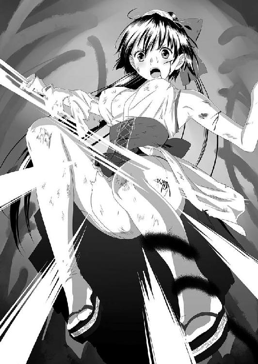
そう、今まで光剣の攻撃で地響きこそ立てたものの土砂が舞い上がることはなかった。
この攻撃を境に〝黒く蠢くもの〟は急速に縮みはじめた。一時期は何百トンとも思えたその身体が縮み、最大時の何分の一になったのか分からないほどのわずか数十メートルというサイズにまで小さくなっていた。
「たあああああああああああああああああああああっ！」
雄叫びを上げて神奈が上空から勢いよく飛び降り、手にした布都御魂剣をその背に突き立てた。
その瞬間、周囲にプラズマの火花のようなものが飛び散り、言葉には表せない耳を覆いたくなるような絶叫を〝黒く蠢くもの〟は放った。その叫び声は、隣接する都市にまで響き渡り聞く者を怯えさせた。
「神奈はん！ 遷却祟神詞どす！ それが仕上げや！」
「え......でも、あたしは......」
「ええい！ あたしらに続いて声を出せ！ 三人の祝詞でそいつを鎮める！ いいな！」
「はいっ！」
さすがに祝詞を覚えきっていないと神奈に言わせて、周囲に不安を生み出させ場の雰囲気を悪くするわけにはいかない。すかさずフォローした卯月に頷き、神奈は二人の言葉を待った。
「高天原に神留坐して、事始め給ひし神漏伎、神漏美の命以て、天之高市に八百萬神等を、神輯へ輯へ給ひ......」
三人の巫女の輪唱のような少しずつズレた祝詞が響き渡り、その一言一句が読み進められる毎に〝黒く蠢くもの〟はもがくことをやめ、そしていつしか絶叫を放つことをもやめていた。やがてそれは小さな──と言っても、直径三〇センチほどの楕円形の黒褐色の石に変化した。
てけり・り......てけり・り......
てけり・り......
てけ......り............てけ............
しばらくの間青黒い光りを放つ明滅を繰り返し、奇怪な音を響かせていたが、やがて明滅もしなくなり、音も途絶えた。
布都御魂剣が突き刺さったままの石を三人で取り囲み、しばらくの間様子を見るが変調は見られない。
「終わり......ですか？」
「そうだな......」
和泉が弓を構えて狙いをつけている中で、卯月が八握剣を引き抜いてその切っ先で石を突っついてみる。しかし、石化したと思われる〝黒く蠢くもの〟はまったく反応を示さない。二度三度とそれを繰り返し、ようやく卯月は笑顔を見せた。
「お疲れ様。神奈、よくやった！」
「神奈はんの手柄どす。あんたからお伝えなし」
神奈の肩を叩いて笑顔を見せた卯月、そして引き絞っていた弦をゆるめて笑顔を見せた和泉。二人の顔を交互に見回した神奈は華やぐ笑顔を見せて頷いた。
「はい！ 皆さん終わりました！」
振り返った神奈がそう叫んだ直後、固唾を飲んで見守っていた自衛官や機動隊員たちからワッと大歓声がわき起こった。
そしてまるでその歓声に合わせるかのように自衛隊の輸送機が上空に飛来し、空挺団の隊員たちをぶら下げたパラシュートをバラまいて行った。
待ち焦がれていた援軍が今、ようやく到着した。
「事が終わってから来たんじゃ、どうしようもないな......」
「でも、事後処理はしてもらえるでしょ」
「そうだな......。ま、俺はこの後は良くて退官処分。悪くて国家反逆罪で死刑か無期懲役かってとこか......。英雄になるための手記は獄中で書かせてもらうかな」
ニヤニヤ笑いながら中村は大変なことを軽く告げた。
「そんな！ だって一尉は......」
「世の中はそういう法律なんだ。俺は法律を破ってここにきた。筋を曲げちゃ、正義の味方はやってられんさ」
「そのとおりだ！」
「ああんっ！ って......れ、連隊長！」
いつの間にやってきたのか、移動指揮車から降りてきた連隊長を見て、中村一尉は及び腰になった。
「中村。正義の味方を気取るが、貴様の行いは重罪だぞ！」
「ハ、ハッ！ 重々承知致しております！ いかなる厳罰をも受ける覚悟です！ しかし、今回の計画は私の独断で行ったものであり部下たちは巻き込まれたにすぎません！ よって、部下たちには温情あるご沙汰をお願いいたします！」
「ほほぅ。すべての責任は貴様一人にあるというのだな？」
「は、はいっ！ すべての責任は自分にあります！」
「その心意気やよし！ とりあえず、この場で腕立て伏せ二〇〇回を命じる！」
「は、はぁ......？」
連隊長はニヤリと人の悪い笑みを浮かべた。
「なんだ中村。いかなる厳罰をも受けると言ったのはウソか？ それとも男に二言はあるのか？ 正義の味方が詭弁を弄してもいいと言うのか？」
「戦闘でクタクタなのに、かんべんしてくれよぉ......」
なんとか助けてくれよと中村は弓削を見たが、弓削は笑いを堪えながら肩を竦めるだけで口添えしようとはしなかった。それは周りにいた部下たちも同じだった。
「なんなら、完全武装で太平山神社まで往復してくるボーナスもつけてやろうか？」
「わかりましたよ。やりゃあいいんでしょ！ やればよ！」
「そのとおりだ。しかし、今の私の命令に素直に従わなかったために、貴様にはボーナスとして一〇日間の謹慎と、原稿用紙五〇枚の反省文の提出を命じる！」
「は、反省文ってなんすか！ オマケになんだよその長文は。小説でも書けって言うんですか!? 俺、作文なんかロクに書いたことないっすよ！」
「ない頭を捻れ！ さあ、さっさと腕立て伏せをはじめろ」
「くっそ......」
いつの間にか、中村の周りには生き残った自衛官たちが集まってきて取り囲み、腕立て伏せをはじめた彼に声援を送りはじめた。
そんなバカ騒ぎを遠目から見て、なにやってんだろと苦笑をもらした神奈は、自分のすぐ耳元に人の気配を感じて立ち竦んだ。
人の気配......。
いや、人あらざるモノの気配......。
神奈の背筋がゾワゾワと総毛立ち、全身に鳥肌が立つような感覚に襲われた。
そして、耳元に囁くような密やかな声が響いた。
「こたびの戦はこれにて終わりだとは思わぬことよ。磐裂神・根裂神が孫神の血統を持つそなたが勝つか、磐長媛が血統の妾が勝つか真に見物よのう。だが、こたびも高天原の凡神どもがそなたらに加勢するとは限らぬぞ？ せいぜい木花咲耶に加護を乞うがよいであろうな。ただし、あの見た目だけの娘がおまえに力を貸せるかは疑問よな......」
それはとても幼い女の子の声で、府津之宮神社の境内で聞いたあの声だった。
だがそこには毒も、悪意も、そして信じられないほどの恨みも込められており、とても幼女の言葉とは思えない響きを備えていた。
振り返ると、あの府津之宮神社の境内で白昼夢に見た黒い古風なセーラー服を着た少女が立っており、腕には泥まみれの小さな櫃を抱えていた。
「あなたは......いったい誰なの？」
自分の声が震えているのが神奈にも分かった。
それほどまでに、その少女が放っている鬼気がおぞましく恐ろしいものだった。
それは、先ほど死力を尽くして戦っていた〝黒く蠢くもの〟を上回るほどの強い鬼気。もしくは畏怖と呼ぶべきものかもしれない。
「妾は、神流。磐媛神流。読みこそそなたと同じだが、妾こそこの世の神を討ち流す者......。ふふふふ......いずれ時が来れば、妾が勝者であることが分かろう」
神流は艶然と微笑むと薄い霧のようになり、ふわりと舞い流れた風に散らされるようにそのまま消え去った。
「ちょ、ちょっと！」
「どうした......神奈？」
神奈の声に怪訝そうな顔をして声をかけてきた卯月に、神奈は青ざめた顔を向けた。
「ここに......今、女の子が......」
「女の子？ あの......セーラー服の？」
卯月と和泉は顔を見合わせて神奈の周りを探したが、そこには誰かがいたという形跡はなにひとつ残されていなかった......。
壱
結局、明らかに遅すぎる援軍のために第二防衛ラインの戦闘に参加した者の過半数は、帰らぬ人となってしまった。
先陣に立って指揮していた栃木県警機動隊大隊長の富樫源三郎警視の遺体は発見されず、その殉職は最期の目撃証言を元に発表された。
彼の一命を賭した集積燃料爆破がなければ、わずかに神奈の到着も間に合わず、結果として弓削も中村一尉も死んでいただろう。
『警察官として戦いに行きます。もしも帰れなくても許してほしい。しかし、立派な警察官だったとお前たちが胸を張れる父さんであるために行ってきます』
これが第二防衛ラインに赴く際に、富樫警視が彼の妻子に送った携帯電話からのメールであり、結果的には遺言となってしまったものだった。だが、彼は自分の言葉どおり警察官としてその職務を全うしたと讃えられることとなった。
第二防衛ラインの戦闘の損害報告は以下のとおりだった。
栃木県警機動隊員 参戦者六七名 殉職者四一名 生存者二六名
栃木市警警察官 参戦者一七名 殉職者 九名 生存者 八名
即応連隊第三普通科中隊 参戦者一四〇名 殉職者八三名 生存者五七名
第一防衛ラインの戦闘での死者を合わせると、二〇三人もの死者を出す大惨事となった。
もしも、もっと早く首相が治安出動を決意していたら、これほどの死者を出さなかったのではないか？
いや、それよりも最初の米軍の出動協力に応じていれば、土地こそ破壊されたもののこれほどの犠牲を出すこともなかったのではないか？
この事件は、そう後々まで語られることとなる......。
そしてこの惨劇を後世に残そうという動きが起こり、田園風景が広がる第二防衛ラインが作られた農道沿いにひとつの石碑が建てられ、この戦いに参加して亡くなったすべての人の名前が刻まれた。もっとも、それはずっと後の話なのだが......。
「チクショウ！ こんな反省文を書かされるなら免職になった方がマシだったぜ！」
中村一尉がそうボヤいたのは、あの事件から一〇日が過ぎた頃だった。
「中村のような中学生なみの思考の持ち主には、始末書よりも反省文だろう！ 原稿用紙五〇枚の反省文を書き終えない限りは、謹慎は解かないからそう思え！」
「連隊長！ 謹慎は一〇日間といったじゃねえか！ 嘘つきジジイ！」
「すべてはおまえのためだ。素晴らしい上官を持って光栄に思え」
という連隊長の温かい配慮の下、中村は宇都宮駐屯地の宿舎で謹慎処分を受けて泣きそうになりながら原稿用紙に向かっていたという。
せめてパソコンをと言う中村の願いは即答で却下され、四〇〇字詰め原稿用紙と鉛筆、そして消しゴムと国語辞書が渡されたらしい。
そんな仮処分が執行されている中で、中村一尉他宇都宮駐屯地の即応連隊第三中隊の処分を巡って国会は紛糾した。
中村の義侠心は認めるが、命令無視も甚だしく法治国家の自衛隊としてあるまじき行為であると報道記者たちを前に熱く語った防衛大臣だったが、その日の午後、どこからかリークされた防衛大臣の〝市民の命よりも総理との私的電話を優先させた〟という情報が公開され、国民は大激怒した。
そのため、翌朝に防衛大臣は辞任することとなった。
さらにメンツにこだわるあまり治安出動を中々実行せず、米軍の援助を断った首相の行動も暴露され、出さなくてもいい数百人の死傷者を出した責任を問われる騒ぎとなり、責任を取って内閣総辞職という形にまで発展する。
なお、陸幕長はすべての責任は防衛大臣を説得できなかった自分にあるとし、事件の収拾がついたその日のうちに辞表を提出したという。陸幕長が辞表を出すことで、中村以下第三中隊のメンバーを護ろうとしたのだろう。
だが、そんな陸幕長の意向は無視され、勝手に治安出動という名の形式上の反乱に荷担した中隊隊員全員に対して、国家騒乱罪を適用して重罪に問おうと元防衛大臣たち政権与党の議員は躍起になった。
しかし、この動きを知った栃木市民たちは署名運動を展開。さらにこれは全国的な国民署名活動に発展し、闇の中で彼らが裁かれることは阻止され、『大きな意味を持った国民裁判員裁判だった』と後に言われる公開裁判に持ち込まれる。そこで中村一尉と中央即応連隊第三中隊の行動には情状酌量の余地が大きくあるとされ、特例として隊員たちに厳罰は与えずという処置が執られた。
ただし、統率者としての責任は重く、中村の免職処分だけは避けられなかった。
もっとも、中村が謹慎中に宮内庁式部寮から神祇官支援室への転職案内が届き、その後はそちらで国民を守る正義の味方として、部署を変えても活動することが決まっていた。もちろんこれは、源の配慮によるものだったが、中村元・元一尉が神奈たちに合流するのは、これもまたずっと後の話となる......。
弐
下野国庁遺跡──
そうは言うもののすでに復元した前殿も〝黒く蠢くもの〟に飲まれて消失し、その上に建っていた府津之宮神社も同じく消失して今はない。
その場所には、〝黒く蠢くもの〟が封じられていた大穴があいており、立ち入り禁止区画となっていた。
穴の直径はおよそ百メートル。国庁の遺跡がすっぽりと収まってしまうサイズだった。
穴はすり鉢状にえぐれており、その底には古墳の石室を思わせる大きな石を組んで作られた幅約二メートルほどの通路の一部が露出していた。
通路は露出している天井の一部が壊れているものの、そこから中に入ると北に二〇メートルほど伸びた傾斜路になっており、その突き当たりに幅約八メートル四方の正方形の部屋が造られ、その中央に石棺が安置されていた。
あの事件の終結から三日が過ぎていた。
結局護人はそのまま入院となったのでここには来ていないが、宮ノ森神明宮からやってきた源を加え、弓削、卯月、和泉、神奈、そしてイナの五人と一匹が現場検証のためにやってきていた。
すり鉢状の大穴の土は、まるで溶岩が固まった岩のような状態になっていて崩れる心配はなかった。そこにアルミ製のハシゴが固定され、穴の底の石室まで行けるようになっていた。
「この石室の入口は砕かれたというよりも、内側から溶かされたみたいどすなぁ......」
和泉の指摘どおり、入口となっていた壊れた天井部分は推定一トンほどの巨石の一枚板が内側から溶かされ、その後に折られたような痕跡が残っていた。
「つまり、あの〝黒く蠢くもの〟ってヤツは、ここに閉じ込められていたってことっすかねぇ......」
通路の壁面には神代文字と思しきものが上下二列に、入口となった場所から石室まで刻まれているだけで、それ以外に装飾らしいものは壁画ひとつなかった。
「飾る必要がない場所......か」
「まるで牢獄ね......」
「天野の言うとおりだ。恐らく、ここはあの〝黒く蠢くもの〟の牢獄だったのだろうな」
源に同意され、卯月は照れて神奈に『ヤッタァ』と言うように小さく笑って見せた。
「問題はこの石室だな」
「あの子の......香りがする......」
「え？」
石室に入るなり、鼻をひくつかせた神奈がそう呟き、全員が石室内部の匂いを嗅ぎ回った。
「確かに......なにか......花の香りか？」
「コレは、たぶん彼岸花だぜ」
「彼岸花？」
ほとんど香りのしない彼岸花の香りを当てたのは、他ならぬイナだった。微かに香る花の香り。ロクに香りの残っていない石室のなかだったからこそ神奈たちも感じたわけだが、イナは妖し故に彼岸花の香りを嗅ぎ取れたのかもしれない。
「だとすると、この石棺を開けたのは五祝だけが見たという少女なのかもしれないな」
「でも、一〇歳くらいの女の子に、こんな大きな石の蓋、開けられませんよ！」
「人間なら......な」
「え......」
そう、磐媛神流を見たのは神奈ただ独り。他の誰もがそばにいたにもかかわらず、彼女の姿を目撃していなかった。
「幽霊か......それとも新たな技を使う巫女か......」
「問題は、この中になにが入っていたか......ということだが。五祝、その少女はなにか持っていなかったか？」
「そう言えば......」
そう、磐媛神流は大事そうに泥まみれの小さな櫃を抱えていた。小さなといっても、彼女のスケールで考えれば抱きかかえるというくらいの大きさだった。
「泥まみれのハコを抱えていました」
「ハコ？」
石棺の中には、縦長のＡ４サイズの用紙ほどの大きさのくぼみが刻まれていた。明らかに、動かないようにそこにナニかを安置していた形跡だった。
「ここにあったものがハコか......」
その櫃ひとつを収めておくものとしては、明らかにこの石棺は大きすぎた。しかし、それ以外にここになにかが入れられていた形跡はない。
石棺の蓋は重さが約一・二トン。通路の屋根に使われていた石板よりも厚く硬い石でできていた。恐らく、この石棺の蓋を開けるためには考古学調査で使用する特殊な装置か重機でも持ち込まない限り、人間の力では不可能に思える。
だが、ここにはそんなものを設置した痕跡はない。
明らかに、人力ないし巫術でこの石棺の蓋をずらして押し開けたことになる。
「石棺の蓋にも神代文字が刻まれているな......」
「入山者......の鍵......っすかね？」
「そうだな。こっちにもあるが、富士山......か？ 資料と照らし合わせないと完全には読めないが、富士山、影、そして磐戸という文字が見えるな」
「磐戸？ 神話だと天の岩戸が思い出されやすが、富士山にそないなものがあるとは聞いたことあらしません。戸隠辺りに行かないと、それらしきものはないんやないかなぁ」
「つまり、結論から言うと......ヒドイ話になるが、五祝が見たその少女は、ここに隠されていた〝入山者の鍵〟とやらが欲しくて、我々神祇官にその番犬である〝黒く蠢くもの〟を押しつけ、騒ぎに乗じて泥棒していったということになるな......」
源の結論に神奈は目を丸くした。
「そんな......。ココに隠されていた物が欲しいから、あの子は、あの化物をあたしたちに押しつけたっていうんですか!? あんなにたくさんの警察や自衛隊の人たちの命を奪ったっていうんですか！ ひどすぎる......」
泣き崩れそうになった神奈の肩にそっと手を置き、卯月がその身体を支えた。
「あの人たちはココを護るために戦って死んだのよ。胸を張って、残ったあたしらが泣かずに笑顔を見せないと、亡くなった人たちに申し訳が立たないでしょ」
「は......はい......」
神奈がグシグシと袖で涙をぬぐおうとした時、和泉がそっとハンカチを差し出した。
「そうは言われても、鉄の神経の持ち主か無神経でもない限りは、こういう時に涙を流さないなんて中々でけへんことどす。涙を流さんご供養は宴会をするのが一番でしょうな」
「ご供養に......宴会ですか？」
「ああ。その話はオレも乗った。焼き鳥と卵焼き美味かったし、酒があるといいな」
酒──その言葉の直後に、神奈を除く三人が源をジーッと見つめた。その視線に源は思わず苦笑した。
「分かった分かった。全員にお疲れ様ってことで、ごちそうしてやる。五祝は未成年だから酒以外のものだな」
「はいっ！」
わいわいとしゃべりながら石室から出てきた一行を、半壊した廃屋の物陰からそっと見つめる人影があった。
「五祝神奈......か......。よく踊ってくれたものだ......」
物陰に完全に身を隠した彼は、雲一つない空を見上げて口元に冷笑を浮かべた。
「国は乱れた。さて、次はどうしようか......」
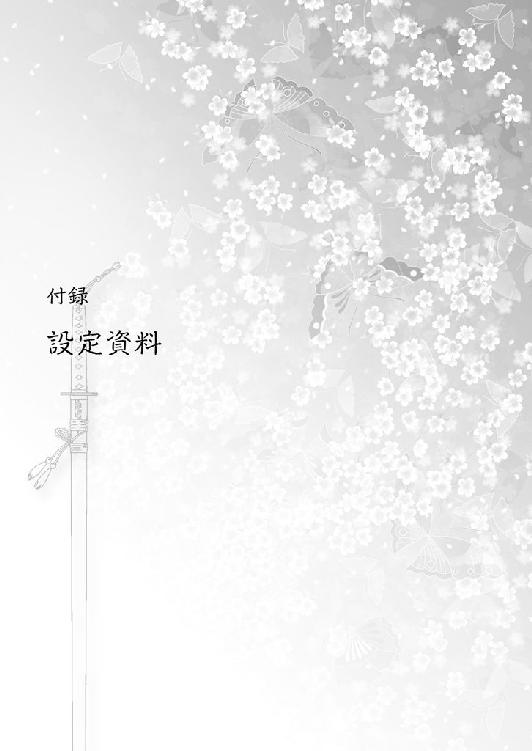
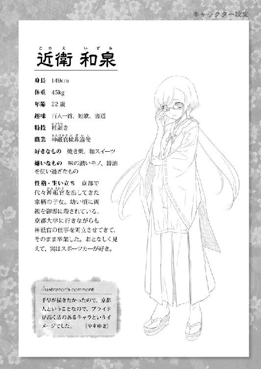
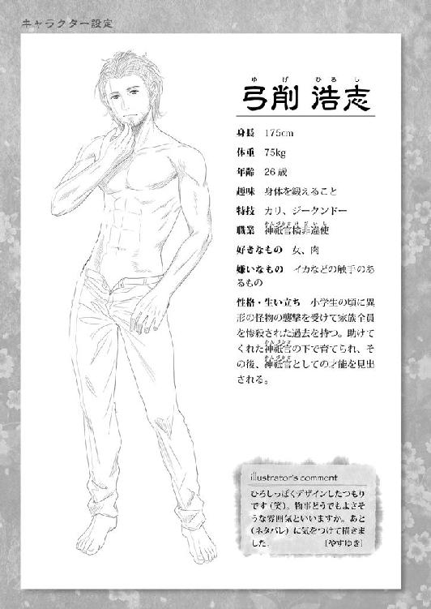
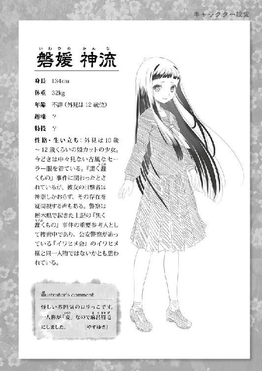
神祇官
古代の律令制で設置された国家機関のひとつ。当初は天津神・国津神の祭祀を行う存在であったが、隆盛する陰陽道に国政参加の座を譲り、祭祀役にのみ集中するという形式を取り歴史の表舞台から姿を消した。
しかし、それは表向きの話であり、常にまつろわぬ存在である荒ぶる神々（御霊）を取り締まる存在として、現代に至るまで影から日本を支えてきた国家公務員の名称である。
神祇官は検非違使と火長衛視のふたつに分かれるが、呼称としては神祇官で統一されている。
神籬体質
神祇官となる者は、この能力を持っている必要がある。一種の霊媒体質。神の力を借り受けて御霊を倒すのが神祇官の仕事だが、一般的な霊媒のような単なる依代ではなく、神の力を己に憑き降ろしながらも自我を保ち、その力を借り受けられる者の体質のこと。
本来、神籬とは神を囲う場所のことであり、「ひ」は神霊、「もろ」は天下るの意味の「あもる」の転、「ぎ（古代では「き」）」は木の意とされ、神霊が天下る木、神の依代となる木の意味だったとされる。
なお、磐座も同じものであり、対象が山、森など大きなモノをさすことと、今作では設定する。
神威（神代示威力）
神威と普段は略されるが、正しくは神代示威力という神に代わってその威力を現し示す力のことであり、本作では巫女や覡たちが使う力のこと。
個々の能力によって、その力の大きさは異なるが、神奈はその名前の意味である神奈備に相応しく、神に好かれた巫女として桁外れの神威を持つ。しかしまったく使いこなせていない。
巫撃装衣
神奈たち神籬の巫女たちが着る戦闘服の正式名称がこの巫撃装衣。基本はこれに年式を入れて〝○○式巫撃装衣〟という。現在採用されている巫撃装衣は皇紀二六六九年に制式採用されたために、六九式巫撃装衣（呼称：木花～このはな～）という名称で呼ばれる。『制服は数年でコロコロ変わる。前は貫頭衣に毛が生えた程度だったから、六九式はマシよ』というようなことを卯月が以前言っていたとおり、長くても五、六年くらいの期間で衣替えしている。
巫撃装衣は、御霊の霊撃にある程度の耐性を持てるように織り込まれた特殊な布（サナギが入っていない玉繭で織られた絹一〇〇％）で作られている。
着用者の神威に応じて跳躍力を常人の四～六倍に跳ね上げ、常識はずれの活動力を引き出す。
なお、伝説的な巫撃装衣として、零式艦上戦闘機と同じ皇紀二六〇〇年に試作された零式試作巫撃装衣（呼称：飛天～ひてん～）というものが存在している。着用者の神威で理論上は飛行することができるとされているが、それを体現できた巫女は今のところおらず、二着の試作のみで計画は打ち切られ、試作品は倉庫に保管されている。六九式巫撃装衣の袖が着脱式デザインになった理由は、御霊の襲撃時に脱出しなければならない状況に袖を落としていくことで御霊の目を眩ませる効果があるため。
袖を落とす（袖をもぐ）という風習は墓場で転んだ時に袖を置いていく、靴を置いていく、指を一本置いていくなどの風習や、中国地方に伝わる袖もぎ地蔵（袖もぎさん）などに見られるように、袖を捨てて御霊の目を誤魔化すという効果は大きい。
ちなみに、袖切り地蔵という形で、関東地方にも転んだ際に袖を地蔵に備えるという風習が残っており、この手の風習は日本全域に存在している。
祝詞
神道における呪文。神様にお願いをする時に使用するもの。本作では、巫術のきっかけになる言葉であればよいことから略拝詞とひふみの祝詞が多用されている。たまに他の祝詞を唱えていることもあるが、やたらと長く漢字の多用にもつながるので、本巻ではある程度省略している。
宮ノ森神明宮
宮ノ森神明宮を基本的に運営している宮司たち。この神社だけは神社庁の管轄ではなく、宮内庁管轄となっており、神祇官の事情を知る者たちで構成されている。
御霊
まつろわぬ神々や怨霊といった類の存在。何かに取り憑き、悪事を成そうとする存在。御霊の行うことは大それたことではなく、それぞれの能力に応じた混乱を発生させる程度のこと。神祇官の敵の八割がこういった形なき敵であり、護符に封じて鎮魂することが目的となる。御霊がまつろわぬ神を利用するなどということもあり、大事に発展することもある。
まつろわぬ神々
国津神として追われた神々の総称。主に東日本に広がる土着神、門客神、地主神などが該当する。元々は蝦夷など、大和朝廷に追われたまつろわぬ民の信仰神であり、大物としてはアラハバキやミシャグチ、リョウメンスクナなどが挙げられるほか、国津神でありながらも大和方に祀られた神としては、スサノオ、オオクニヌシ、オオモノヌシ、タケミナカタなどが挙げられる。自然神故に、あるいは鎮魂されているためにあまり意志をもって何かをしようという行動は取らず、御霊などに引かれて災厄をもたらすケースが多く見られる。
磐座
神籬が神を祀ったり依代とする場所や生物などを指すのに対して、磐座とは巨石や山、森などに対する古い信仰があった時代の御神体、神が宿るものは岩、山、火、滝などから、風雨、嵐、雷などの気象現象まで多岐にわたる。
富士山や日光の男体山、茨城の筑波山も磐座として有名だが、関東でも有数の巨石の磐座として、栃木県足利市にある名草弁財天──別名、名草巨石群がある。現在は弁天様を祀る神殿が築かれているが、元々はその地域全体が重なり合う巨石・奇岩そのままを祀った巨石信仰の巨大な磐座であり、石清水と巨石と森林に囲まれた木石水の織りなす強力なパワースポットなのだけど、交通の便が非常に悪いことが災いしてあまり有名ではない。それだけに御利益は高いかもしれない。ちなみに作者もお参りしたことがある。その結果は小説家デビューなので、あながちウソともいえない。
巫術
民俗学的にはシャーマンが使う呪術のこと。中国の道教では正当な呪術は道術となり、左道に携わる（要するに悪い方）呪術を巫術ということもある。日本では陰陽一体で入って来ているので、どっちもアリということで本作では巫術に統一。他にも原始日本神道の場合だと、鬼道ということもある。
淡島神
蛭子の妹で、伊邪那岐の娘だが蛭子同様に流されてしまった謎の女神。その後、流れ着いた先で鬼道を伝えていたとされ、その能力を見初められて住吉神に輿入れするが、婦人病を患ったためにさらに流されてしまう悲劇のヒト。そのために伊邪那岐の子孫を呪ったとされ、蛭子（少彦名）と共に最初の天神の位について祟りまくったという説もある。そのために反大和の神として東国の静岡や関東、東北でひっそりと祀られた。
ちなみに、粟島という別名で同一の力を持つ天照大神の第六女も存在している。
真言立川流
鎌倉時代に仁寛によって開かれ、南北朝時代に鎌倉幕府倒幕の功績から文観によって大成されたとされる密教の一派。大頭と呼ばれる髑髏本尊を祀っていたことや、性交を通じて即身成仏に至ろうとする教義解釈があったことから、邪教とされて江戸時代に大弾圧を受けて消滅し、現在はその正しい教義も断片的にしか残されていない。
御先神
本作では神祇官たちが使う式神の制式名称。本来の御先は神使と同様に神が使者として遣わす動物のことで、一番いい例が八咫烏。本作では格付けがなされており、御先はあくまでもただの使役動物霊で、基本的に言葉は話さず（巫覡とはテレパシーで交感）能力は感覚を巫覡と共有するなどに留まる。
当然、神使よりも格下に位置する。本来の神が遣わしたものは神使と呼ぶか、あるいは御先と呼ぶにはあまりにも神格が高すぎる門客神なども神使と呼ぶことがあるとする。
覡の巫術
巫女が強いためにバックアップに回ることが多いのが覡（男巫子）であり、その巫術は主に巫女の身体強化巫術か、あるいは敵方の状態異常巫術が多い。弓削のように様々な呪具を取り扱って攻撃系を行うこともある。
蛭子
伊邪那岐の第一子だが認知されずにそのまま捨てられた。不具、あるいは人の姿をしていないと具体的に書かれ、次に流される淡島とは微妙に異なる。後に少彦名命とも合わせられ、日本最初の祟り神のひとつとする説もある。恵比寿神とも同一視され、淡島神同様に流された神にしては人の生活に密接した神となっていることから、反大和の神として祀られたか？ あるいは有力な部族の神であったが、根絶やしにされたために流されるという処罰を受けた神となったと思われる。
火之夜藝速男神
母神である伊邪那美を出産時に焼いて死に追いやる原因を作った火之迦具土の別名。父である伊邪那岐に殺されるが、伊邪那美が黄泉津大神となったことで、伊邪那美を殺害できる炎を持つ神として祀られるようになったとの説もある。
経津主神
火之迦具土を斬った際に流れた出血から産まれた岩裂神・根裂神の孫神で、モノを刀剣で断ち切るブツリという音を現すフツが名前についていることから刀剣の威力を神格化した神とも伝えられている。軍神の建御雷神とセットで登場したり、建御雷神の別名が建布都神とされて同一視されているが、これは中臣氏が台頭するにつれてその神格が奪われたとされる説があり、本来は経津主神の方が古いとする説も多い。
ちなみに東之宮神社のモデルになった神社の主祭神が経津主というのは作者の想像。
布都御魂剣
若御毛沼命（神武帝）が東征する際に、熊野の高倉下の手を経て経津主神（建御雷神）から授けられた霊剣。天叢雲剣と同一視されることもあるが、別の剣。本作では経津主の象徴故に神威があればいくらでも作り出せ、あちこちの神社などに御神体として祀られているということにしておく。
こにゃにゃちは、くしまちみなとです☆
早いもので四冊目の作品となりまして、そして待望の二巻でございます！
祝・続刊！ 尊敬する漫画家の平野先生のお言葉みたく『ニカーンはハニャーン・カーンに似てる～！』と言うことができました☆ もう、まったくもぉ～ってくらいに感動!!
取り乱してスミマセン。でも、初めての続刊はそれくらい嬉しいんでございます☆
で、えーと......今回のお話ですが、自衛隊に関する情報はかなりファンタジーになっておりますので、その部分はご了承ください。直接防衛省にお問い合わせさせていただいたのですが、ずっとご連絡をいただけない状況となっており、仕方なくファンタジーなノリにさせていただきました。まぁ、空自はＦＡＥ持っていますかとか、即応連隊の実力はいかほどですかとか、自衛官の反乱はどんな罰則ですかなんて質問には答えてくれないと思います（汗）。でも、宇都宮駐屯地即応連隊のみな様には、勝手に死なせてしまいましてスミマセンデシター!!
で、警察官のみな様（特に栃木県警のみな様）には......スミマセンデシター!! と、平身低頭させていただきます。この調子でいくと、その後の栃木県の治安は警察官不足で凄まじく悪化してしまうかもしれませんがほんの出来心だったんです。許してつかーさい！
後は、色々と調べていただいたのに結局舞台にしただけで、しかも国庁遺跡消滅かいという感じになってしまいましてスミマセンでした！ と、栃木市教育委員会文化課の担当者様にお詫びさせていただきます。とりあえず......お詫びはコレで済んだかな？
そしてお礼でございますが、大切な夜刀浦の資料をペロッとくださった森瀬繚先生、ありがとうございます。おかげさまで夜刀浦市内の地理が分かって助かりました。そして朝松健先生、色々とご指導くださいましてありがとうございます！
それから、今回はタイトなスケジュールの中でカッコイイカバー＆挿絵＆ポスターを描いてくださいましたやすゆき先生に感謝です！
さてさて最後になりましたが、この本の二巻までおつきあいくださいました読者のみな様に、本当に感謝を込めてのありがとうございますです。なぜ夜刀浦の時間が昭和四五年で止まっているのかとか相変わらず謎が色々と残っていますが、それは次巻で解決していくと思いますので......もう少しお待ちください。
それではまた、次の本でお会いできることを心よりお祈り申し上げます。
くしまちみなと
かんづかさ２
電子版発行 ２０１４年１月５日
著 者 くしまちみなと
発行者 辻 信幸
発行所 株式会社一二三書房
〒１０２｜００７２
東京都千代田３６３区飯田橋２｜14｜２ 雄邦ビル
電話 ０３｜３２６５｜１８８１
カバーイラスト やすゆき
©HIFUMI SHOBO
本書の無断複製（コピー）は、著作権上の例外を除き、禁じられています。
●本書は『かんづかさ２』（２０１２年６月20日 初版第１刷）に基づいて制作されました。